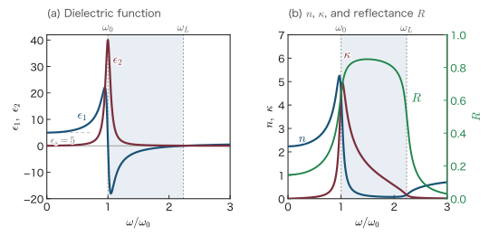
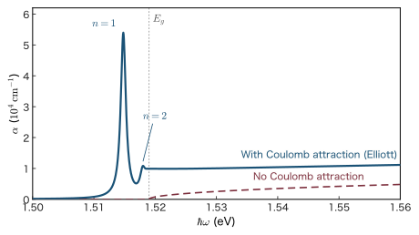
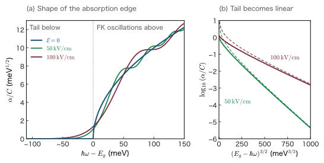
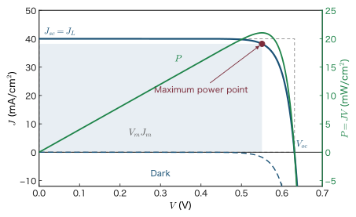
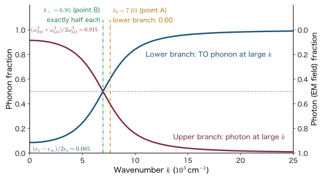

Chapter 33Optical Excitation Phenomena — From the Kramers–Kronig Relations to Excitons and Polaritons
Solar cells, the image sensors of digital cameras, and the photodetectors of optical fiber communication all rely on the fact that “a semiconductor absorbs light.” In Chapter 17, Section 17.1, we distinguished direct from indirect transitions on the basis of the fact that a photon carries almost no momentum, and we derived the shapes of the absorption edge, $\alpha\propto(\hbar\omega-E_g)^{1/2}$ and $(\hbar\omega\pm\hbar\Omega-E_g)^2$, from the joint density of states. There, however, we only said “proportional to”; we did not calculate how many $\mathrm{cm^{-1}}$ the absorption coefficient $\alpha$ actually is. As for the sharp lines below the absorption edge (excitons), we only presented a formula for the binding energy in a supplement. This chapter is the continuation: it carries the treatment of optical absorption to the point where it yields actual numbers.
The story begins with two numbers. When light enters a material, its speed changes (the refractive index $n$) and it is gradually attenuated (the extinction coefficient $\kappa$). The complex refractive index $\tilde n=n+i\kappa$, obtained by adding an imaginary part $\kappa$ to the refractive index of high-school physics, is all that is needed to express the reflectivity, the absorption coefficient, and the dielectric function (Section 33.1). The climax of the chapter is Section 33.2. $n$ and $\kappa$ are not independent. From causality alone—“an effect occurs only after its cause”—we derive the Kramers–Kronig relations, which say that if the absorption spectrum is known at all frequencies, the refractive index can be calculated. The same argument also yields the $f$-sum rule, which says that the total amount of absorption is determined solely by the number of electrons.
Next, we examine the “mechanisms” of absorption one by one. We classify the absorption spectrum from the far infrared to the ultraviolet by mechanism (Section 33.3), and from the Drude formula we derive why the free carriers of a doped semiconductor absorb infrared light, together with the plasma edge (the principle of transparent conducting films) (Section 33.4). We then move on to quantum mechanics. From the coupling of electrons to the electromagnetic field, $\Ham'=(e/m)\bm{A}\cdot\hat{\pp}$, and Fermi's golden rule, we actually calculate that the absorption coefficient of GaAs is of the order of $10^4\,\mathrm{cm^{-1}}$ (Section 33.5); we treat the phonon-mediated indirect transition as a second-order perturbation and learn how to analyze the absorption edge of Si (the $\sqrt\alpha$ plot) (Section 33.6). In Section 33.7 we treat the hydrogen-like states formed by the Coulomb attraction between an electron and a hole—excitons—and see with the Elliott formula that the very shape of the absorption edge is changed by the Coulomb attraction.
Finally, we examine how absorption changes when a magnetic or electric field is applied from outside—absorption between Landau levels, the Franz–Keldysh effect, and the quantum-confined Stark effect—and connect this to the electroabsorption modulator of optical communication (Section 33.8). We then treat how absorbed light is converted into an electrical signal—photoconductivity and the photovoltaic effect—and derive the current–voltage characteristic of a solar cell and the idea behind the Shockley–Queisser limit, the theoretical upper bound on the conversion efficiency (Section 33.9). The p-n junction of Chapter 24 meets light here. Light emission and lasers, the reverse process of this chapter, are treated in Chapter 25. In Section 33.10, the last section of the chapter, we treat the quasiparticle formed when light propagating in a crystal mixes with an excitation of the material—the polariton. Using the dielectric function of Chapter 32 (LO–TO splitting) and the quasiparticle picture of Chapter 27, we derive the dispersions of the phonon polariton, the exciton polariton (up to Bose–Einstein condensation in a microcavity), and the surface plasmon polariton from a single idea: the anticrossing of two oscillators.
- Derive the complex refractive index $\tilde n=n+i\kappa$ from Maxwell's equations in a medium, and become able to derive for yourself $\epsilon_1=n^2-\kappa^2$, $\epsilon_2=2n\kappa$, the absorption coefficient $\alpha=2\omega\kappa/c$, and the reflectivity $R=\dfrac{(n-1)^2+\kappa^2}{(n+1)^2+\kappa^2}$
- The dielectric function of the Lorentz oscillator model, and how it accounts for the dispersion of the refractive index, reflection, and absorption all together
- Derive the Kramers–Kronig relations from causality step by step, and understand how to obtain the refractive index from the absorption and the dielectric function from the reflectivity, as well as the $f$-sum rule $\int_0^\infty\omega\epsilon_2\,\dd\omega=\frac{\pi}{2}\omega_p^2$
- Distinguish the absorption mechanisms from the far infrared to the ultraviolet (free carriers, lattice, impurities, within the valence band, excitons, band edge, critical points, plasmons, core levels)
- Derive the free-carrier absorption $\alpha_{fc}\propto\lambda^2$ and the plasma edge, and use them in the design of transparent conducting films and infrared window materials
- Calculate the absorption coefficient of direct interband transitions including its absolute value from minimal coupling and the golden rule, and determine the selection rules by group theory
- Treat indirect transitions as a second-order perturbation, and read off $E_g$ and the phonon energy from the $\sqrt\alpha$ plot
- Understand the Wannier–Mott exciton and the Frenkel exciton, the Elliott formula, and the two-dimensional exciton in a quantum well (binding energy $4R^*$)
- Derive the absorption in a magnetic field (the selection rule $\Delta n=0$) and the Franz–Keldysh effect (the electro-optic energy $\hbar\theta$ and the Airy function)
- Become able to calculate the photoconductive gain, the photocurrent of a solar cell $J_L=eG(L_n+L_p+W)$, the open-circuit voltage, the fill factor, and the conversion efficiency, the Shockley–Queisser limit, and the responsivity of a photodetector
- Understand the coupling of light and an excitation as a 2×2 anticrossing, and derive the dispersion of the phonon polariton $c^2k^2=\omega^2\epsilon(\omega)$, the Rabi splitting and Hopfield coefficients of a microcavity, and the dispersion of the surface plasmon polariton together with the condition for its existence, $\epsilon_m\lt-\epsilon_d$
33.1 Interaction of Electrons with Light (Phenomenological Theory)
33.1.1 What happens when light enters a semiconductor
Pick up a Si wafer and it looks like a gray plate that shines like a mirror. It does not transmit light, so it is opaque, but it is not as shiny as a metal. Yet if you look at the same wafer with an infrared camera, it becomes transparent like glass. In fact, Si is used for lenses and windows for infrared light of wavelength longer than $1.2\,\mu\mathrm{m}$. The same is true of GaAs: it does not transmit light of wavelength shorter than $0.87\,\mu\mathrm{m}$, but it transmits longer wavelengths. This boundary wavelength is none other than the absorption-edge wavelength $\lambda_g=hc/E_g$ in Table 17.2 of Chapter 17.
What happens when light strikes a semiconductor plate can be summarized in the three processes of Figure 33.1. (i) Part of the light is reflected at the surface. (ii) The light that enters the material weakens (is absorbed) as it propagates. The energy of the absorbed photons is used to lift electrons from the valence band to the conduction band and create electron–hole pairs. (iii) The light that is not completely absorbed is transmitted through the back surface. In this section, we derive from the Maxwell equations a method of describing these three processes by two numbers—the refractive index $n$ and the extinction coefficient $\kappa$.
Notation: Time dependence, complex amplitude, and complex refractive index (unified throughout this chapter)
- The time dependence is $\ee^{-i\omega t}$ (the usual convention in physics). Every oscillating quantity is written with a complex amplitude as $\mathcal{E}(t)=\mathrm{Re}\bigl[\mathcal{E}_\omega\ee^{-i\omega t}\bigr]=\frac12\bigl(\mathcal{E}_\omega\ee^{-i\omega t}+\mathcal{E}_\omega^*\ee^{i\omega t}\bigr)$. Hence $\abs{\mathcal{E}_\omega}$ is the amplitude of the oscillation (its peak value). $\partial/\partial t$ is replaced by $-i\omega$.
- For the electric field, we write the vector as $\EE$ and its magnitude or components as $\mathcal{E}$ (script E), to distinguish it from the energy $E$.
- The dielectric function (relative permittivity) is $\epsilon(\omega)=\epsilon_1+i\epsilon_2$, and the complex refractive index is $\tilde n=n+i\kappa$ ($\kappa$ is kappa, the extinction coefficient). With this convention, $\epsilon_2\gt0$ and $\kappa\gt0$ in a medium that absorbs light. The absorption coefficient is $\alpha$.
- The Fourier transform of a response function is $\chi(\omega)=\int\chi(t)\ee^{i\omega t}\dd t$ (Section 33.2). Under this convention, $\chi(\omega)$ is analytic in the upper half-plane of the complex $\omega$ plane.
- In Sections 33.1–33.3 the refractive index is written $n$. From Section 33.4 on, where the refractive index and the carrier density both appear, the refractive index is written $n_r$ and the density of carriers (electrons or holes) is written $N$, to distinguish them (in Section 33.9 the densities of electrons and holes are written $n$ and $p$).
- In this part, the energy is written $E$ ($E_c$, $E_v$, $E_g$, and so on) and the reduced mass is written $m_r$ (these correspond to $\epsilon$ and $\mu$ of Chapter 17; since $\epsilon$ in this chapter is the dielectric function and $\mu$ is the mobility, they are not used with those meanings).
- Electrical engineering books use $\ee^{j\omega t}$ and $\tilde n=n-jk$. The signs of all imaginary parts are reversed, so take care when quoting formulas.
Notation: How the same letter is used for different quantities (throughout this chapter)
Because this chapter covers a wide range of topics, the same letter is sometimes used with different meanings. They can be distinguished by context, but we list the confusing ones.
- $\kappa$: the extinction coefficient. The damping constant of tunneling in Section 33.8.2 is written $\kappa_{\mathrm t}$ to distinguish it.
- $\alpha$: the absorption coefficient. The electronic polarizability is $\alpha_e$ (Section 33.1.6) and the constant of Urbach's rule is $\alpha_{\mathrm U}$ (Section 33.3.4), with subscripts attached.
- $\sigma$: the conductivity ($\sigma_0$ is the DC conductivity). The surface and bulk conductivities in Section 33.9.7 are written $\sigma_s$ and $\sigma_b$, and the circular polarizations in Section 33.8.1 are written $\sigma^\pm$.
- $\tau$: in Section 33.2 the time difference of the response function, in Section 33.4 the momentum relaxation time $\tau_m$, and in Section 33.9 the carrier lifetime $\tau$ ($\tau_n$, $\tau_p$).
- $\eta$: the quantum efficiency of a photodetector (Section 33.9.8). The conversion efficiency of a solar cell is written $\eta_c$. The radius $\eta$ of the small semicircle in Section 33.2.3 and $\eta=(E_g-\hbar\omega)/\hbar\theta$ in Section 33.8.2 are symbols used only within those subsections.
- $\theta$: the $\theta$ of Section 33.2.7 is the phase of the reflection, and $\hbar\theta$ in Section 33.8 is the electro-optic energy; they are different quantities.
- $R$: the reflectivity. The radius $R$ of the integration contour in Figure 33.3 is a symbol used only in that subsection, and $R^*$ is the binding energy of the exciton (Section 33.7; Chapter 25 writes the same quantity as $E_{ex}$).
- $J$: the joint density of states $J(\hbar\omega)$ in Sections 33.3 and 33.5, and the current density in Section 33.9.
- $A$, $C$: used several times as proportionality constants (the $A$ in Example 33.5 and Theorem 33.3 and the $C$ in Theorem 33.4 and Theorem 33.5 are separate constants). The boldface $\bm{A}$ in Section 33.5 is the vector potential, and the $A$ in Section 33.9.2 is a cross section.
- $K$: in Section 33.1 the (complex) wavenumber in the medium, and in Section 33.7 the wave vector $\bm K$ of the exciton center of mass.
- $\lambda$: the wavelength. The variational length $\lambda$ in Section 33.7.6 is a symbol used only in that subsection.
- $\Omega$: the angular frequency of a phonon. The volume of the unit cell is written $v_c$.
- $\mu$: the mobility. $\mu_0$ is the permeability of vacuum and $\mu_B$ is the Bohr magneton (Section 33.8.1).
33.1.2 From the Maxwell equations in a medium to the wave equation
The starting point is the Maxwell equations in a medium (SI; the companion volume, “Introductory University Physics,” Chapter 42, Section 42.2, and for fields in matter, Section 41.1 of Chapter 41).
$$ \nabla\cdot\bm{D}=\rho_{\mathrm{ext}},\qquad \nabla\cdot\BB=0,\qquad \nabla\times\EE=-\frac{\partial\BB}{\partial t},\qquad \nabla\times\bm{H}=\jj+\frac{\partial\bm{D}}{\partial t} $$Here $\bm{D}=\epsilon_0\EE+\bm{P}$ is the electric displacement, $\bm{P}$ is the polarization (the electric dipole moment per unit volume), and $\bm{H}$ is the magnetic field strength. A semiconductor is not a magnetic material, so we may take $\BB=\mu_0\bm{H}$ ($\mu_0$ is the permeability of vacuum).
The charges in a semiconductor can be divided into two kinds. One is the polarization $\bm{P}$ produced by the electrons bound to atoms (the electrons of the valence band) and by the displacement of ions; the other is the current $\jj$ carried by the conduction electrons and holes, which can move freely. Assuming that both respond in proportion to the electric field (linear response), we write them as
$$ \bm{P}=\epsilon_0\chi_b(\omega)\EE,\qquad \jj=\sigma(\omega)\EE $$respectively. Here $\chi_b$ is the susceptibility of the bound charges and $\sigma$ is the conductivity.
Derivation 1: Polarization and current can be combined into a single complex dielectric function
Suppose that all quantities oscillate as $\ee^{-i\omega t}$. Replacing $\partial/\partial t\to-i\omega$, the right-hand side of the Ampère–Maxwell equation becomes
$$ \jj+\frac{\partial\bm{D}}{\partial t} =\sigma\EE-i\omega\bigl(\epsilon_0\EE+\epsilon_0\chi_b\EE\bigr) =\sigma\EE-i\omega\epsilon_0(1+\chi_b)\EE $$We write $\epsilon_b\equiv1+\chi_b$ (the relative permittivity due to the bound charges) and factor out $-i\omega\epsilon_0$ from the first term. Since $\sigma=-i\omega\epsilon_0\times\dfrac{\sigma}{-i\omega\epsilon_0}=-i\omega\epsilon_0\times\dfrac{i\sigma}{\epsilon_0\omega}$ (we used $1/(-i)=i$), we have
$$ \jj+\frac{\partial\bm{D}}{\partial t}=-i\omega\epsilon_0\left[\epsilon_b+\frac{i\sigma}{\epsilon_0\omega}\right]\EE \equiv-i\omega\epsilon_0\,\epsilon(\omega)\EE $$that is,
∎ For an oscillating electric field, there is no need to distinguish between “the bound charges are polarized” and “the free charges carry a current.” Both enter a single complex dielectric function $\epsilon(\omega)$. In the range of frequencies where the contribution of the bound charges can be regarded as an almost constant value $\epsilon_\infty$ (the high-frequency permittivity, Chapter 19)—the transparent infrared region above the lattice vibrations and below the absorption edge—we can write $\epsilon=\epsilon_\infty+i\sigma(\omega)/(\epsilon_0\omega)$ (in the visible region, the contribution of the bound charges in Si and GaAs changes greatly with frequency and absorption is also present, so it cannot be regarded as constant; Example 33.1). The free-carrier absorption of Section 33.4 starts from this equation.
Derivation 2: The wave equation for electromagnetic waves and the complex refractive index
Consider a uniform medium with no external charge. Take the curl of Faraday's equation $\nabla\times\EE=i\omega\BB$, and use $\BB=\mu_0\bm{H}$ and the result of Derivation 1.
$$ \nabla\times(\nabla\times\EE)=i\omega\mu_0\nabla\times\bm{H}=i\omega\mu_0\bigl(-i\omega\epsilon_0\epsilon\EE\bigr)=\omega^2\mu_0\epsilon_0\,\epsilon\EE=\frac{\omega^2}{c^2}\epsilon\EE $$($\mu_0\epsilon_0=1/c^2$.) By the identity of vector analysis, the left-hand side is $\nabla(\nabla\cdot\EE)-\nabla^2\EE$. With no external charge, $\nabla\cdot(\epsilon\EE)=0$, and in a uniform medium $\epsilon$ is a constant, so $\nabla\cdot\EE=0$ (transverse wave). Therefore
Substituting a plane wave traveling in the $z$ direction, $\EE=\mathcal{E}_\omega\hat{\bm{e}}\,\ee^{i(Kz-\omega t)}$ ($\hat{\bm{e}}$ is a unit vector perpendicular to $z$, and $K$ is the wavenumber in the medium; if $\epsilon$ is complex, $K$ is also complex), and noting that $\nabla^2\to-K^2$, we obtain
$$ -K^2+\frac{\omega^2}{c^2}\epsilon=0 \qquad\Longrightarrow\qquad K=\frac{\omega}{c}\sqrt{\epsilon}\equiv\frac{\omega}{c}\tilde n $$∎ The factor $\tilde n=\sqrt{\epsilon}$ multiplying the wavenumber $\omega/c$ in vacuum is the complex refractive index. Since $\epsilon$ is a complex number, $\tilde n$ is also a complex number. The square root of a complex number $\epsilon$ has two values that differ only in sign ($\pm\tilde n$); of these we choose the one whose imaginary part ($\mathrm{Im}$) is $0$ or greater, that is, the one with $\mathrm{Im}\,\tilde n\ge0$, which decays as the wave travels toward $+z$.
33.1.3 Complex refractive index and absorption coefficient
Definition: Refractive index $n$, extinction coefficient $\kappa$, absorption coefficient $\alpha$
Write the real and imaginary parts of the complex refractive index as $\tilde n=n+i\kappa$; $n$ is called the refractive index and $\kappa$ the extinction coefficient. The fractional rate at which the intensity of light (the energy passing through unit area per unit time) decreases per unit length is called the absorption coefficient $\alpha$:
$$ \frac{\dd I}{\dd z}=-\alpha I $$Derivation: $\alpha=2\omega\kappa/c$, the Beer–Lambert law, $\epsilon_1=n^2-\kappa^2$, $\epsilon_2=2n\kappa$
Step 1: The form of the wave. Substituting $K=(\omega/c)(n+i\kappa)$ into the plane wave, we have $\ee^{iKz}=\ee^{i\omega nz/c}\,\ee^{-\omega\kappa z/c}$, so
$$ \EE(z,t)=\mathcal{E}_\omega\hat{\bm{e}}\,\ee^{-\omega\kappa z/c}\,\ee^{i\omega(nz/c-t)} $$The second factor represents “a wave traveling at speed $c/n$” ($n$ is the refractive index of high-school physics), and the first factor expresses that “the amplitude decreases as the wave advances.”
Step 2: The intensity. The intensity of light is proportional to the square of the electric-field amplitude (as shown in Section 33.1.4, $I=\frac12n c\epsilon_0\abs{\mathcal{E}}^2$). If the amplitude is $\ee^{-\omega\kappa z/c}$, the intensity is $\ee^{-2\omega\kappa z/c}$:
$$ I(z)=I(0)\,\ee^{-2\omega\kappa z/c} $$Step 3: Reading off $\alpha$. Differentiating this with respect to $z$ gives $\dd I/\dd z=-(2\omega\kappa/c)I$. Comparing with the definition, and using the wavelength in vacuum $\lambda=2\pi c/\omega$, we obtain
The second equation is the Beer–Lambert law. The depth $1/\alpha$ at which the intensity drops to $1/\ee$ is called the penetration depth.
Step 4: Relation to $\epsilon$. Comparing the real and imaginary parts of $\epsilon=\tilde n^2=(n+i\kappa)^2=n^2+2in\kappa+i^2\kappa^2$, we obtain
Step 5: Solving the inverse problem. From the second equation, $\kappa=\epsilon_2/(2n)$. Substituting into the first gives $n^2-\epsilon_2^2/(4n^2)=\epsilon_1$, and multiplying both sides by $4n^2$ gives $4n^4-4\epsilon_1n^2-\epsilon_2^2=0$. This is the quadratic equation $4x^2-4\epsilon_1x-\epsilon_2^2=0$ in $x\equiv n^2$, and the quadratic formula gives $x=\dfrac{\epsilon_1\pm\sqrt{\epsilon_1^2+\epsilon_2^2}}{2}$. Since $\sqrt{\epsilon_1^2+\epsilon_2^2}\ge\abs{\epsilon_1}$, the root with the − sign is $0$ or less, so only the root with the + sign satisfies $n^2\gt0$. We find $\kappa$ by rewriting the first equation as $\kappa^2=n^2-\epsilon_1=\dfrac{\sqrt{\epsilon_1^2+\epsilon_2^2}-\epsilon_1}{2}$. Taking the positive square root in both cases, we obtain
$$ n=\sqrt{\frac{\sqrt{\epsilon_1^2+\epsilon_2^2}+\epsilon_1}{2}},\qquad \kappa=\sqrt{\frac{\sqrt{\epsilon_1^2+\epsilon_2^2}-\epsilon_1}{2}} $$∎ When the absorption is weak ($\kappa\ll n$), $n\simeq\sqrt{\epsilon_1}$ and $\kappa\simeq\epsilon_2/(2\sqrt{\epsilon_1})$; therefore
$$ \alpha\simeq\frac{\omega\,\epsilon_2}{n\,c} $$holds. The absorption coefficient is proportional to the imaginary part $\epsilon_2$ of the dielectric function. It is this $\epsilon_2$ that quantum theory (Section 33.5) calculates.
Why? Even $\kappa$ as small as $0.02$ extinguishes light within a few $\mu$m
The denominator of Eq. \eqref{eq:33-alpha} is the wavelength $\lambda$. For visible light, $\lambda\approx0.5\,\mu\mathrm{m}$, so even the seemingly small value $\kappa=0.02$ gives $\alpha=4\pi\times0.02/(0.5\,\mu\mathrm{m})\approx0.5\,\mu\mathrm{m}^{-1}$, and the penetration depth is only about $2\,\mu\mathrm{m}$. The quantity $\kappa$ means that “while the wave travels a distance equal to the vacuum wavelength $\lambda$, the amplitude is multiplied by $\ee^{-2\pi\kappa}$ and the intensity by $\ee^{-4\pi\kappa}$.” For $\kappa=0.02$, the intensity is multiplied by $\ee^{-0.25}=0.78$ in one wavelength, and after traveling only about four wavelengths ($1/(4\pi\kappa)\simeq4$) it drops to $1/\ee$. Even if $\kappa$ is smaller still, about $10^{-4}$, the intensity drops to $1/\ee$ after about a thousand wavelengths ($1/(4\pi\times10^{-4})\simeq800$), and the absorption becomes significant. Conversely, to send light over distances measured in $\mathrm{km}$, as in an optical fiber, a surprisingly small value $\kappa\sim10^{-11}$ is required (Chapter 25).
33.1.4 Reflectivity at normal incidence — deriving the Fresnel formula from boundary conditions
What fraction of light is reflected at the surface of a plate is determined by how the fields connect (the boundary conditions) at the surface. To this end, we first express the magnetic field and the intensity of light in terms of the electric field.
Derivation 1: The magnetic field of a plane wave in a medium and the light intensity $I=\frac12nc\epsilon_0\abs{\mathcal{E}}^2$
Insert $\EE=\mathcal{E}_\omega\hat{\bm{e}}\,\ee^{i(Kz-\omega t)}$ into Faraday's equation $\nabla\times\EE=i\omega\mu_0\bm{H}$. Since $\nabla\times$ becomes $iK\hat{\bm{z}}\times$,
$$ iK\,\hat{\bm{z}}\times\EE=i\omega\mu_0\bm{H} \qquad\Longrightarrow\qquad \bm{H}=\frac{K}{\omega\mu_0}\hat{\bm{z}}\times\EE=\frac{\tilde n}{c\mu_0}\hat{\bm{z}}\times\EE $$($K=\tilde n\omega/c$.) For a wave traveling in the $-z$ direction, $K\to-K$, so the sign is reversed. The intensity of light is the time average of the Poynting vector $\EE\times\bm{H}$. The time average of the product of two quantities written with complex amplitudes, $a=\mathrm{Re}[a_\omega\ee^{-i\omega t}]$ and $b=\mathrm{Re}[b_\omega\ee^{-i\omega t}]$, is $\frac12\mathrm{Re}(a_\omega b_\omega^*)$ (the terms in $\ee^{\mp2i\omega t}$ vanish on averaging), so
$$ I=\frac12\mathrm{Re}\left(\frac{\tilde n^*}{c\mu_0}\right)\abs{\mathcal{E}}^2=\frac12\,n\,c\,\epsilon_0\abs{\mathcal{E}}^2 $$∎ In the last step we used $1/(c\mu_0)=c\epsilon_0$ (from $\epsilon_0\mu_0=1/c^2$). Here $\abs{\mathcal{E}}$ is the amplitude, and in an absorbing medium it includes the damping factor. We will use this expression again when we calculate the absorption coefficient in Section 33.5.
Derivation 2: Reflectivity at normal incidence $R=\dfrac{(n-1)^2+\kappa^2}{(n+1)^2+\kappa^2}$
Let $z\lt0$ be vacuum ($\tilde n=1$) and $z\gt0$ a semiconductor ($\tilde n$), with light incident normally along the $z$ axis. With $k=\omega/c$, we write the electric fields of the three waves as
$$ \text{incident}:\ \mathcal{E}_i\,\ee^{i(kz-\omega t)},\qquad \text{reflected}:\ \mathcal{E}_r\,\ee^{i(-kz-\omega t)},\qquad \text{transmitted}:\ \mathcal{E}_t\,\ee^{i(\tilde nkz-\omega t)} $$(the polarization direction $\hat{\bm{e}}$ is the same for all of them). By Derivation 1, the magnetic fields are proportional to $\dfrac{1}{c\mu_0}\mathcal{E}_i$, $-\dfrac{1}{c\mu_0}\mathcal{E}_r$, and $\dfrac{\tilde n}{c\mu_0}\mathcal{E}_t$, respectively (the reflected wave travels toward $-z$, hence the minus sign).
Boundary conditions. At a boundary with no surface current, the tangential components of the electric and magnetic fields are continuous (Introductory University Physics, Chapter 41, Section 41.3). At normal incidence all the fields are parallel to the surface (tangential components), so at $z=0$
$$ \mathcal{E}_i+\mathcal{E}_r=\mathcal{E}_t,\qquad \mathcal{E}_i-\mathcal{E}_r=\tilde n\,\mathcal{E}_t $$(The second equation comes from the continuity of the magnetic field, with the common factor $1/(c\mu_0)$ canceled.)
Solving. Adding the two equations gives $2\mathcal{E}_i=(1+\tilde n)\mathcal{E}_t$, and subtracting gives $2\mathcal{E}_r=(1-\tilde n)\mathcal{E}_t$. Taking the ratios,
These are the Fresnel formulas for normal incidence ($r$ and $t$ are the amplitude reflection and transmission coefficients; this $t$ is a symbol distinct from time). The reflectivity is the ratio of the intensities of the reflected and incident waves; since both are waves in vacuum, $R=\abs{r}^2$. Inserting $\tilde n=n+i\kappa$,
$$ R=\frac{\abs{(1-n)-i\kappa}^2}{\abs{(1+n)+i\kappa}^2} $$The squared absolute value of a complex number is (real part)$^2$ + (imaginary part)$^2$, so
∎ For a transparent medium ($\kappa=0$), $R=\left(\dfrac{n-1}{n+1}\right)^2$. For glass ($n=1.5$) this is $0.04$, that is, 4%. The reflectivity becomes large when $n$ deviates greatly from 1 or when $\kappa$ is large (metals).
Supplement: Measuring $\alpha$ from the transmittance of a plate
For a plate of thickness $d$, reflection occurs at the back surface with the same fraction $R$, and the light travels back and forth inside the plate many times. Neglecting interference (when the plate is thicker than the coherence length of the light), the light transmitted the first time is $(1-R)\ee^{-\alpha d}(1-R)I_0$, and each subsequent round trip adds light multiplied by a factor $R^2\ee^{-2\alpha d}$; summing the geometric series, we obtain
$$ T=\frac{(1-R)^2\ee^{-\alpha d}}{1-R^2\ee^{-2\alpha d}} $$If $\alpha d\gg1$, then $T\simeq(1-R)^2\ee^{-\alpha d}$. If we measure the transmittances $T_1$ and $T_2$ of two plates of thickness $d_1$ and $d_2$, taking the ratio eliminates $R$, and we obtain $\alpha=\ln(T_1/T_2)/(d_2-d_1)$. In the strongly absorbing region ($\alpha\gtrsim10^4\,\mathrm{cm^{-1}}$), thin films thinner than a $\mu$m are required, so $\alpha$ is often obtained from the reflectivity spectrum by means of the Kramers–Kronig relations (Section 33.2).
Example 33.1: Shining visible light on Si — absorption coefficient, penetration depth, and reflectivity
The optical constants of Si are approximately $n\simeq3.9$ and $\kappa\simeq0.018$ at a photon energy of $2.0\,\mathrm{eV}$ (red), and $n\simeq4.3$ and $\kappa\simeq0.045$ at $2.5\,\mathrm{eV}$ (green). For each, find (1) the wavelength in vacuum, (2) the absorption coefficient $\alpha$ and the penetration depth $1/\alpha$, (3) the reflectivity $R$ at normal incidence, and (4) $\epsilon_1$ and $\epsilon_2$.
Solution. (1) From $\lambda=hc/E=1239.8\,\mathrm{eV\,nm}/E$, we get $620\,\mathrm{nm}$ at $2.0\,\mathrm{eV}$ and $496\,\mathrm{nm}$ at $2.5\,\mathrm{eV}$.
(2) Using Eq. \eqref{eq:33-alpha}, $\alpha=4\pi\kappa/\lambda$, together with $1\,\mathrm{nm}=10^{-7}\,\mathrm{cm}$,
$$ 2.0\,\mathrm{eV}:\ \alpha=\frac{4\pi\times0.018}{620\times10^{-7}\,\mathrm{cm}}=3.6\times10^{3}\,\mathrm{cm^{-1}},\qquad \frac1\alpha=2.7\,\mu\mathrm{m} $$ $$ 2.5\,\mathrm{eV}:\ \alpha=\frac{4\pi\times0.045}{496\times10^{-7}\,\mathrm{cm}}=1.1\times10^{4}\,\mathrm{cm^{-1}},\qquad \frac1\alpha=0.88\,\mu\mathrm{m} $$(3) From Eq. \eqref{eq:33-R},
$$ \begin{aligned} &2.0\,\mathrm{eV}:\ R=\frac{(2.9)^2+(0.018)^2}{(4.9)^2+(0.018)^2}=\frac{8.41}{24.01}=0.35,\\ &2.5\,\mathrm{eV}:\ R=\frac{(3.3)^2+(0.045)^2}{(5.3)^2+(0.045)^2}=\frac{10.89}{28.09}=0.39 \end{aligned} $$(4) From Eq. \eqref{eq:33-eps12}, at $2.0\,\mathrm{eV}$, $\epsilon_1=3.9^2-0.018^2=15.2$ and $\epsilon_2=2\times3.9\times0.018=0.14$. At $2.5\,\mathrm{eV}$, $\epsilon_1=4.3^2-0.045^2=18.5$ and $\epsilon_2=2\times4.3\times0.045=0.39$.
∎ Three things can be read from these results. First, Si reflects 35–40% of visible light. This is why a Si wafer shines like a metal; in solar cells, an antireflection coating of silicon nitride with a refractive index of about $2$ (thickness about $75\,\mathrm{nm}$) is applied to the surface to suppress reflection. The deep blue color of a solar cell is the interference color of this film. Second, green light is absorbed within $1\,\mu\mathrm{m}$, whereas red light penetrates several $\mu$m. Since the electron–hole pairs created by blue or green light form near the surface, the surface-side layer of a solar cell (the emitter, a layer on the side where the light enters, heavily doped with the type opposite to that of the substrate) must be made thin. Third, although $\epsilon_2$ is only 1–2% of $\epsilon_1$, the absorption is strong. This is the effect of the shortness of the wavelength that we saw in the “Why?” box of Section 33.1.3.
33.1.5 Skin depth — the limit of large conductivity
We consider the case in which, in Eq. \eqref{eq:33-eps-sigma}, the conductivity term is overwhelmingly larger than the bound-charge term (the microwave region of metals and heavily doped semiconductors).
Derivation: The skin depth $\delta=\sqrt{2/(\mu_0\sigma\omega)}$
Suppose that $\sigma/(\epsilon_0\omega)\gg\epsilon_b$ and that $\sigma$ is real ($\omega\tau\ll1$, where $\tau$ is the mean time for which an electron travels before being scattered; in Section 33.4 it is treated as the momentum relaxation time $\tau_m$, and then $\sigma$ equals the DC conductivity $\sigma_0$). Then $\epsilon\simeq i\sigma/(\epsilon_0\omega)$. Since the square root of $i=\ee^{i\pi/2}$ is $\ee^{i\pi/4}=(1+i)/\sqrt2$,
$$ \tilde n=\sqrt{\frac{i\sigma}{\epsilon_0\omega}}=\frac{1+i}{\sqrt2}\sqrt{\frac{\sigma}{\epsilon_0\omega}} \qquad\Longrightarrow\qquad n=\kappa=\sqrt{\frac{\sigma}{2\epsilon_0\omega}} $$The amplitude of the electric field decays as $\ee^{-\omega\kappa z/c}\equiv\ee^{-z/\delta}$, so
$$ \delta=\frac{c}{\omega\kappa}=\frac{c}{\omega}\sqrt{\frac{2\epsilon_0\omega}{\sigma}}=\sqrt{\frac{2\epsilon_0c^2}{\sigma\omega}} $$Using $\epsilon_0c^2=1/\mu_0$, we obtain
∎ $\delta$ is called the skin depth. It is the depth at which the electric field (and the current) falls to $1/\ee$; the penetration depth $1/\alpha$ of the intensity ($\propto$ the square of the amplitude) is half of it, $\delta/2$.
Example 33.2: Skin depths of Cu and heavily doped Si
(1) Find the skin depth of Cu ($\sigma=5.96\times10^{7}\,\mathrm{S/m}$) at $50\,\mathrm{Hz}$ and at $1\,\mathrm{GHz}$. (2) Find the skin depth at $10\,\mathrm{GHz}$ of $\mathrm{n^+}$-type Si with resistivity $1\times10^{-3}\,\Omega\,\mathrm{cm}$ (relative permittivity of the bound charge $\epsilon_b=11.7$), and verify that the approximation $\sigma/(\epsilon_0\omega)\gg\epsilon_b$ holds.
Solution. (1) $\mu_0=1.257\times10^{-6}\,\mathrm{H/m}$. At $50\,\mathrm{Hz}$, $\omega=2\pi\times50=314\,\mathrm{s^{-1}}$, so
$$ \delta=\sqrt{\frac{2}{(1.257\times10^{-6})(5.96\times10^{7})(314)}}=\sqrt{\frac{2}{2.35\times10^{4}}}=9.2\times10^{-3}\,\mathrm{m}=9.2\,\mathrm{mm} $$At $1\,\mathrm{GHz}$, $\omega=6.28\times10^{9}\,\mathrm{s^{-1}}$ and $\mu_0\sigma\omega=4.71\times10^{11}$, so $\delta=\sqrt{2/(4.71\times10^{11})}=2.1\times10^{-6}\,\mathrm{m}=2.1\,\mu\mathrm{m}$.
(2) $\sigma=1/\rho=1/(1\times10^{-5}\,\Omega\,\mathrm{m})=1\times10^{5}\,\mathrm{S/m}$ ($1\,\Omega\,\mathrm{cm}=10^{-2}\,\Omega\,\mathrm{m}$). With $\omega=6.28\times10^{10}\,\mathrm{s^{-1}}$, $\mu_0\sigma\omega=7.90\times10^{9}$ and $\delta=\sqrt{2/(7.90\times10^{9})}=1.6\times10^{-5}\,\mathrm{m}=16\,\mu\mathrm{m}$. The condition for the approximation is
$$ \sigma/(\epsilon_0\omega)=10^{5}/(8.85\times10^{-12}\times6.28\times10^{10})=1.8\times10^{5}\gg\epsilon_b=11.7 $$which is amply satisfied.
∎ There is no point in making a power transmission line for the commercial mains too thick, because the current flows only in the outer layer of about $1\,\mathrm{cm}$. In high-frequency circuits in the $\mathrm{GHz}$ band the current is concentrated within a few $\mu$m of the surface, so the surface roughness of the wiring and the quality of a thin metal plating determine the loss.
33.1.6 The Lorentz oscillator model — the dielectric function of a damped oscillator
To learn what form $\epsilon(\omega)$ takes, we consider the simplest model. This is the Lorentz oscillator model, in which an electron bound to an atom is regarded as “a charged particle attached to a spring.” The natural angular frequency $\omega_0$ corresponds to the energy $\hbar\omega_0$ needed to excite the electron (in a semiconductor it is not the absorption edge itself but the energy of the strong interband absorption peak lying above it, a few eV; see Example 33.3 and Example 33.7). The damping rate $\gamma$ expresses how fast the excitation escapes into other degrees of freedom. The electronic polarizability $\alpha_e=e^2/(m\omega_0^2)$ of Section 19.3 in Chapter 19 (a quantity distinct from the absorption coefficient $\alpha$) was the static limit of this model. Here we solve the problem including the frequency dependence (the resonance of a forced oscillation can also be checked in the companion volume Introduction to Linear Response Theory, Chapter 3, Section 3.7 and with the simulator Damped and Forced Oscillations).
Derivation: $\epsilon(\omega)=1+\dfrac{\omega_p^2}{\omega_0^2-\omega^2-i\gamma\omega}$
Step 1: Equation of motion. An electron of charge $-e$ and mass $m$ is subject to the restoring force $-m\omega_0^2x$, the frictional force $-m\gamma\dot x$, and the force due to the electric field of the light, $-e\mathcal{E}(t)$:
$$ m\ddot x+m\gamma\dot x+m\omega_0^2x=-e\mathcal{E}_\omega\ee^{-i\omega t} $$Step 2: Steady-state solution. The electron oscillates at the same frequency as the light, so we put $x=x_\omega\ee^{-i\omega t}$. Substituting $\dot x=-i\omega x$ and $\ddot x=-\omega^2x$ and canceling $\ee^{-i\omega t}$, we obtain
$$ m\left(\omega_0^2-\omega^2-i\gamma\omega\right)x_\omega=-e\mathcal{E}_\omega \qquad\Longrightarrow\qquad x_\omega=-\frac{e}{m}\,\frac{\mathcal{E}_\omega}{\omega_0^2-\omega^2-i\gamma\omega} $$Step 3: Polarization. The dipole moment of one electron is $(-e)x$. If there are $N$ electrons per unit volume,
$$ P_\omega=N(-e)x_\omega=\frac{Ne^2}{m}\,\frac{\mathcal{E}_\omega}{\omega_0^2-\omega^2-i\gamma\omega} $$Step 4: Dielectric function. Since $\epsilon=1+P_\omega/(\epsilon_0\mathcal{E}_\omega)$,
$\omega_p$ has the same form as the plasma frequency of Section 15.6 in Chapter 15.
Step 5: Real and imaginary parts. Multiplying the numerator and the denominator by the complex conjugate of the denominator, $\omega_0^2-\omega^2+i\gamma\omega$, we obtain
$$ \epsilon_1=1+\frac{\omega_p^2(\omega_0^2-\omega^2)}{(\omega_0^2-\omega^2)^2+\gamma^2\omega^2},\qquad \epsilon_2=\frac{\omega_p^2\,\gamma\omega}{(\omega_0^2-\omega^2)^2+\gamma^2\omega^2} $$∎ For $\omega\gt0$, $\epsilon_2\gt0$. Under the convention of the Notation box ($\ee^{-i\omega t}$), the dissipation of energy by friction appears as a positive $\epsilon_2$. The contribution of other, more tightly bound electrons (such as core electrons whose natural angular frequency $\omega_0'$ is much larger than $\omega_0$) can be regarded as a constant in the range $\omega\ll\omega_0'$, and it suffices to write the background $\epsilon_\infty$ in place of 1.

Physical Meaning: The four regions of Figure 33.2
- $\omega\ll\omega_0$ (transparent region): $\epsilon_2\simeq0$ and $\epsilon_1\simeq1+\omega_p^2/\omega_0^2\equiv\epsilon_s$ (the static permittivity). Light propagates without being absorbed, and the refractive index is close to $\sqrt{\epsilon_s}$. As $\omega$ is increased, $n$ increases slowly (normal dispersion). This is why blue light is bent more strongly than red light by a prism.
- $\omega\simeq\omega_0$ (absorption line): $\epsilon_2$ forms a peak of height $\omega_p^2/(\gamma\omega_0)$ and width (full width at half maximum) $\gamma$. Inside the peak, $n$ decreases with $\omega$ (anomalous dispersion).
- $\omega_0\lt\omega\lt\omega_L$ (reflection band): the response of the electrons is in antiphase with the electric field, and $\epsilon_1\lt0$. Then $\tilde n$ is almost purely imaginary, and light can enter from the surface only to a depth of about $1/(\omega\kappa/c)$ and is almost entirely reflected.
- $\omega\gt\omega_L$ (transparent again): $0\lt\epsilon_1\lt1$. As $\omega\to\infty$, $\epsilon\to1-\omega_p^2/\omega^2$; the binding no longer matters, and the electrons behave like free electrons. This property gives rise to the $f$-sum rule of Section 33.2.
Supplement: Connection with the polarizability and local field of Chapter 19; oscillator strength
In the limit $\omega\to0$, Eq. \eqref{eq:33-lorentz} becomes $\epsilon_s-1=Ne^2/(\epsilon_0m\omega_0^2)=N\alpha_e/\epsilon_0$. Here $\alpha_e=e^2/(m\omega_0^2)$ is the electronic polarizability in SI units (it is the $\alpha_e$ of the Gaussian units of Chapter 19 multiplied by $4\pi\epsilon_0$; this is the replacement $4\pi\to1/\epsilon_0$). In Chapter 19 we included the local-field (Lorentz field) correction for ionic crystals and derived the Clausius–Mossotti relation, but in covalent semiconductors, where the electrons are spread over the whole crystal, the local-field correction is small, and we have neglected it here.
A real material has many oscillators with different natural frequencies. If the $j$th oscillator has an oscillator strength $f_j$ per electron, we can write
$$ \epsilon(\omega)=1+\frac{Ne^2}{\epsilon_0m}\sum_j\frac{f_j}{\omega_j^2-\omega^2-i\gamma_j\omega},\qquad\sum_jf_j=1 $$In quantum mechanics $f_j=(2m\omega_j/\hbar)\abs{\bra{j}x\ket{0}}^2$, and the fact that the sum equals 1 is proved as the Thomas–Reiche–Kuhn sum rule (companion volume Quantum Mechanics, Chapter 54, Section 54.3).
Example 33.3: Reproducing the dispersion of the refractive index of Si with a single Lorentz oscillator
The imaginary part $\epsilon_2$ of the dielectric function of Si has a large peak at $\hbar\omega_0\simeq4.3\,\mathrm{eV}$ (the $E_2$ critical point of Section 33.3). Represent Si by a single Lorentz oscillator with negligible damping (with 1 in place of $\epsilon_\infty$). (1) Determine $\hbar\omega_p$ so as to reproduce the static permittivity $\epsilon_s=11.7$. (2) Using this model, find the refractive index at $\hbar\omega=1.0\,\mathrm{eV}$ and $2.0\,\mathrm{eV}$, and compare it with the measured values (about $3.5$ and about $3.9$, respectively). (3) Compare with the plasma energy obtained if all the valence electrons of Si (four per atom) oscillate freely. The atomic density of Si is $5.0\times10^{22}\,\mathrm{cm^{-3}}$.
Solution. (1) For $\gamma\to0$, Eq. \eqref{eq:33-lorentz} gives $\epsilon_1=1+\omega_p^2/(\omega_0^2-\omega^2)$. At $\omega=0$, $\epsilon_s-1=\omega_p^2/\omega_0^2$, so
$$ \hbar\omega_p=\hbar\omega_0\sqrt{\epsilon_s-1}=4.3\,\mathrm{eV}\times\sqrt{10.7}=14.1\,\mathrm{eV} $$(2) Rewriting as $\epsilon_1=1+(\epsilon_s-1)/[1-(\hbar\omega/\hbar\omega_0)^2]$, we obtain
$$ 1.0\,\mathrm{eV}:\ \epsilon_1=1+\frac{10.7}{1-(1.0/4.3)^2}=1+\frac{10.7}{0.946}=12.3,\qquad n=\sqrt{12.3}=3.51 $$ $$ 2.0\,\mathrm{eV}:\ \epsilon_1=1+\frac{10.7}{1-(2.0/4.3)^2}=1+\frac{10.7}{0.784}=14.7,\qquad n=\sqrt{14.7}=3.83 $$These agree well with the measured values (about $3.5$ and about $3.9$).
(3) The density of valence electrons is $4\times5.0\times10^{22}=2.0\times10^{23}\,\mathrm{cm^{-3}}=2.0\times10^{29}\,\mathrm{m^{-3}}$.
$$ \omega_p^{\mathrm{val}}=\sqrt{\frac{Ne^2}{\epsilon_0m}} =\sqrt{\frac{(2.0\times10^{29})(1.602\times10^{-19})^2}{(8.854\times10^{-12})(9.109\times10^{-31})}}\ \mathrm{s^{-1}} =2.52\times10^{16}\,\mathrm{s^{-1}} $$ $$ \hbar\omega_p^{\mathrm{val}}=(1.055\times10^{-34}\,\mathrm{J\,s})(2.52\times10^{16}\,\mathrm{s^{-1}})=2.66\times10^{-18}\,\mathrm{J} =\frac{2.66\times10^{-18}}{1.602\times10^{-19}}\,\mathrm{eV}=16.6\,\mathrm{eV} $$∎ The value $14.1\,\mathrm{eV}$ determined in (1) is smaller than $16.6\,\mathrm{eV}$, and $(14.1/16.6)^2=0.72$. We may take this to mean that about 70% of the oscillator strength of the valence electrons is concentrated near $4.3\,\mathrm{eV}$. With just a single oscillator, the dispersion of the refractive index of Si below $3.4\,\mathrm{eV}$, where the strong absorption by direct transitions begins, can be reproduced to within a few percent. The Sellmeier dispersion formula used in optical design and the Wemple–DiDomenico single-oscillator model are practical applications of this idea.
33.1.7 A preview of the $f$-sum rule — the total amount of absorption is determined by the number of electrons
If we multiply $\epsilon_2$ of the Lorentz model by $\omega$ and integrate over all frequencies, the result is independent of both $\omega_0$ and $\gamma$:
$$ \int_0^\infty\omega\,\epsilon_2(\omega)\,\dd\omega=\frac{\pi}{2}\,\omega_p^2=\frac{\pi}{2}\,\frac{Ne^2}{\epsilon_0m} $$(we verify this in Example 33.6). That is, however we change the position or the width of the absorption line, the total amount of absorption is determined only by the electron density $N$. This is a general law independent of the model (the $f$-sum rule), and in Section 33.2 we derive it from causality and the free-electron-like behavior at high frequencies.
33.2 The Kramers–Kronig Relations
In Section 33.1 we saw that all optical properties can be expressed by the complex dielectric function $\epsilon=\epsilon_1+i\epsilon_2$ (or by $\tilde n=n+i\kappa$). The real part $\epsilon_1$ describes refraction (the speed of light), and the imaginary part $\epsilon_2$ describes absorption. At first sight these two look like unrelated quantities. Yet if we look closely at Figure 33.2, wherever $\epsilon_2$ has a peak, $\epsilon_1$ always undulates strongly. This is no coincidence. In this section we show that from the single principle of causality, “an effect occurs only after its cause,” $\epsilon_1$ and $\epsilon_2$ can each be calculated from the other. This is an extremely general result that depends neither on the model (whether it is a Lorentz oscillator or not) nor on whether the theory is quantum or classical. The derivation uses Cauchy's integral theorem from complex analysis (Section A.8 of Appendix A; the companion volume University Mathematics, Chapter 25, Section 25.3; Introduction to Linear Response Theory, Chapter 5, Section 5.4).
33.2.1 Starting point: causality and the response function
Definition: Response function and causality
The linear response of the polarization $P(t)$ to an electric field $\mathcal{E}(t)$ is written in the most general form as
$$ P(t)=\epsilon_0\int_{-\infty}^{\infty}\chi(t-t')\,\mathcal{E}(t')\,\dd t' $$Here $\chi(\tau)$ is the response function, which expresses “how much an electric field applied at time $t'$ affects the polarization after a time $\tau=t-t'$” (in this section $\tau$ denotes a time difference; it is a different use of the symbol from the momentum relaxation time $\tau_m$ in Section 33.4 and the carrier lifetime $\tau$ in Section 33.9). If the properties of the material do not change with time, $\chi$ is a function of the time difference $\tau$ alone. Causality means that a future electric field does not affect the present polarization, that is,
$$ \chi(\tau)=0\qquad(\tau\lt0) $$Moreover, since both $P$ and $\mathcal{E}$ are real physical quantities, $\chi(\tau)$ is real.
Derivation: In terms of frequency, $P_\omega=\epsilon_0\chi(\omega)\mathcal{E}_\omega$ and $\chi(\omega)=\int_0^\infty\chi(\tau)\ee^{i\omega\tau}\dd\tau$
When the electric field has a single frequency, $\mathcal{E}(t')=\mathcal{E}_\omega\ee^{-i\omega t'}$, we substitute it into the response formula and change the variable to $t'=t-\tau$ ($\dd t'=-\dd\tau$, and the direction of integration is also reversed, so the signs cancel):
$$ P(t)=\epsilon_0\int_{-\infty}^{\infty}\chi(\tau)\,\mathcal{E}_\omega\ee^{-i\omega(t-\tau)}\,\dd\tau =\epsilon_0\left[\int_{-\infty}^{\infty}\chi(\tau)\ee^{i\omega\tau}\dd\tau\right]\mathcal{E}_\omega\ee^{-i\omega t} $$The polarization also oscillates at the same frequency $\ee^{-i\omega t}$, and its amplitude is $P_\omega=\epsilon_0\chi(\omega)\mathcal{E}_\omega$. Here
$$ \chi(\omega)\equiv\int_{-\infty}^{\infty}\chi(\tau)\ee^{i\omega\tau}\dd\tau=\int_{0}^{\infty}\chi(\tau)\ee^{i\omega\tau}\dd\tau $$(We used causality in the second equality.) ∎ The relative permittivity is $\epsilon(\omega)=1+\chi(\omega)$.
Example 33.4: The response function of a Lorentz oscillator is a “struck spring”
If an electric-field pulse is applied to a Lorentz oscillator for an instant at time $0$, the electron undergoes damped oscillation. The response function is $\chi(\tau)=\dfrac{\omega_p^2}{\bar\omega}\ee^{-\gamma\tau/2}\sin\bar\omega\tau$ ($\tau\gt0$) and $\chi(\tau)=0$ ($\tau\lt0$), where $\bar\omega=\sqrt{\omega_0^2-\gamma^2/4}$. Show, by Fourier transforming this, that $\chi(\omega)=\omega_p^2/(\omega_0^2-\omega^2-i\gamma\omega)$ of Eq. \eqref{eq:33-lorentz} is obtained.
Solution. Using $\sin\bar\omega\tau=(\ee^{i\bar\omega\tau}-\ee^{-i\bar\omega\tau})/(2i)$, we have
$$ \int_0^\infty\ee^{-\gamma\tau/2}\sin\bar\omega\tau\,\ee^{i\omega\tau}\dd\tau =\frac{1}{2i}\int_0^\infty\left[\ee^{(i\omega+i\bar\omega-\gamma/2)\tau}-\ee^{(i\omega-i\bar\omega-\gamma/2)\tau}\right]\dd\tau $$Each term is an exponential function whose real part is $-\gamma/2\lt0$, so we can use $\int_0^\infty\ee^{a\tau}\dd\tau=-1/a$ ($\mathrm{Re}\,a\lt0$):
$$ =\frac{1}{2i}\left[\frac{-1}{i\omega+i\bar\omega-\gamma/2}+\frac{1}{i\omega-i\bar\omega-\gamma/2}\right] =\frac{1}{2i}\cdot\frac{2i\bar\omega}{(i\omega-\gamma/2)^2+\bar\omega^2} =\frac{\bar\omega}{(i\omega-\gamma/2)^2+\bar\omega^2} $$(Over a common denominator, the numerator is $-(i\omega-i\bar\omega-\gamma/2)+(i\omega+i\bar\omega-\gamma/2)=2i\bar\omega$ and the denominator is $(i\omega-\gamma/2)^2-(i\bar\omega)^2$.) Expanding the denominator gives
$$ (i\omega-\gamma/2)^2+\bar\omega^2=-\omega^2-i\gamma\omega+\gamma^2/4+\omega_0^2-\gamma^2/4=\omega_0^2-\omega^2-i\gamma\omega $$Therefore
$$ \chi(\omega)=\frac{\omega_p^2}{\bar\omega}\cdot\frac{\bar\omega}{\omega_0^2-\omega^2-i\gamma\omega}=\frac{\omega_p^2}{\omega_0^2-\omega^2-i\gamma\omega} $$∎ The Lorentzian formula in the frequency domain and the “spring that is struck and rings while it decays” in the time domain are two faces of the same thing. The obvious fact that $\chi=0$ for $\tau\lt0$ (it does not ring before it is struck) guarantees the analyticity discussed in the next subsection.
Why does causality connect the real and imaginary parts?
Consider a short pulse of light that starts at time $0$. The pulse is a superposition of sinusoidal waves of many frequencies (Fourier transform; see Section A.1 of Appendix A), and the electric field is exactly zero for $t\lt0$ because the amplitudes and phases of the components are aligned so as to cancel one another. Now suppose that the material absorbs and removes just one of these frequency components. With the remaining components alone, the cancellation breaks down, and a signal appears even at $t\lt0$, before the pulse arrives. This violates causality. To prevent this, the material must, together with the absorption, also shift the phases of the components at the other frequencies little by little (that is, change the refractive index), so as to preserve the cancellation at $t\lt0$. “Wherever there is absorption (the imaginary part), there is necessarily dispersion (the real part)”—this is the content of the Kramers–Kronig relations derived below (hereafter abbreviated as the KK relations). (This way of seeing it is due to Toll; see Reference 5.)
33.2.2 What follows from causality: $\chi(\omega)$ is analytic in the upper half-plane
Derivation: $\chi(\omega)$ is analytic in the upper half of the complex $\omega$ plane and approaches $0$ as $\abs{\omega}\to\infty$
Step 1: Make $\omega$ a complex number. Writing $\omega=\omega_R+i\omega_I$, we have
$$ \chi(\omega)=\int_0^\infty\chi(\tau)\,\ee^{i\omega_R\tau}\,\ee^{-\omega_I\tau}\,\dd\tau $$If $\omega_I\gt0$ (the upper half-plane), then $\ee^{-\omega_I\tau}$ decreases exponentially for $\tau\gt0$, so the integral always converges and can be differentiated with respect to $\omega$ any number of times. That is, $\chi(\omega)$ is analytic in the upper half-plane.
Step 2: Confirming that causality is at work. If $\chi(\tau)\ne0$ for some part of $\tau\lt0$ as well, then there $\ee^{-\omega_I\tau}$ blows up as $\tau\to-\infty$ and the integral does not converge. The restriction of the integration range to $\tau\ge0$ (causality) is what produces analyticity in the upper half-plane. For the Lorentz oscillator of Example 33.4, the roots of the denominator of $\chi(\omega)$, $\omega_0^2-\omega^2-i\gamma\omega=0$ (the poles: points where the denominator vanishes and the function becomes infinite; see Section A.8.2 of Appendix A), are $\omega=-i\gamma/2\pm\bar\omega$, which indeed lie in the lower half-plane.
Step 3: Behavior at high frequencies. In any material, if the frequency is sufficiently high, the electron has no time to feel either the restoring force or the friction and responds through inertia alone: $m\ddot x\simeq-e\mathcal{E}$. Then $x_\omega=e\mathcal{E}_\omega/(m\omega^2)$, and from $P_\omega=-Nex_\omega$ we obtain
$$ \chi(\omega)\simeq-\frac{Ne^2}{\epsilon_0m\omega^2}=-\frac{\omega_p^2}{\omega^2}\qquad(\abs{\omega}\to\infty) $$∎ $\chi$ approaches $0$ as $1/\omega^2$ ($N$ is the density of all electrons).
33.2.3 From Cauchy's integral theorem to the principal-value integral
Derivation: $\chi(\omega)=\dfrac{1}{i\pi}\,\mathcal{P}\!\displaystyle\int_{-\infty}^{\infty}\frac{\chi(\omega')}{\omega'-\omega}\,\dd\omega'$
Fix one real $\omega$, and integrate the function $f(\omega')=\chi(\omega')/(\omega'-\omega)$ of the complex variable $\omega'$ along the closed integration contour of Figure 33.3.
Step 1: Cauchy's integral theorem. Inside the contour $f$ is analytic ($\chi$ is analytic in the upper half-plane, and the pole of $1/(\omega'-\omega)$ has been excluded by the small semicircle), so the integral around the whole loop is zero:
$$ \int_{-R}^{\omega-\eta}f\,\dd\omega'+\int_{C_\eta}f\,\dd\omega'+\int_{\omega+\eta}^{R}f\,\dd\omega'+\int_{C_R}f\,\dd\omega'=0 $$Step 2: The large semicircle vanishes. On $C_R$ we have $\abs{\chi}\le M/R^2$ ($M$ is some positive constant; as we saw in Step 3 of Section 33.2.2, $\chi$ becomes small like $1/\omega^2$) and $\abs{\omega'-\omega}\ge R-\abs{\omega}$. The length of the semicircle is $\pi R$, so
$$ \left|\int_{C_R}f\,\dd\omega'\right|\le\pi R\cdot\frac{M}{R^2}\cdot\frac{1}{R-\abs{\omega}}\ \xrightarrow{R\to\infty}\ 0 $$Step 3: The small semicircle gives $-i\pi\chi(\omega)$. On $C_\eta$ put $\omega'=\omega+\eta\ee^{i\varphi}$. Since we go over the top from left to right, $\varphi$ moves from $\pi$ to $0$. With $\dd\omega'=i\eta\ee^{i\varphi}\dd\varphi$ and $\omega'-\omega=\eta\ee^{i\varphi}$,
$$ \int_{C_\eta}f\,\dd\omega'=\int_{\pi}^{0}\chi(\omega+\eta\ee^{i\varphi})\frac{i\eta\ee^{i\varphi}}{\eta\ee^{i\varphi}}\dd\varphi \ \xrightarrow{\eta\to0}\ \chi(\omega)\int_\pi^0 i\,\dd\varphi=-i\pi\chi(\omega) $$Step 4: The real-axis part is a principal-value integral. In the limit $\eta\to0$, $R\to\infty$, the sum of the first and third terms of Step 1 becomes the Cauchy principal-value integral (the limit taken after cutting out equal intervals on both sides of the pole; see Section A.8.3 of Appendix A)
$$ \mathcal{P}\!\int_{-\infty}^{\infty}\frac{\chi(\omega')}{\omega'-\omega}\dd\omega'\equiv\lim_{\eta\to0^+}\left[\int_{-\infty}^{\omega-\eta}+\int_{\omega+\eta}^{\infty}\right]\frac{\chi(\omega')}{\omega'-\omega}\dd\omega' $$Putting everything together, $\mathcal{P}\!\int\dfrac{\chi(\omega')}{\omega'-\omega}\dd\omega'-i\pi\chi(\omega)=0$, that is,
Step 5: Separate the real and imaginary parts. Insert $\chi=\chi_1+i\chi_2$ on both sides, use $1/i=-i$ to write the right-hand side as $\dfrac{1}{\pi}\mathcal{P}\!\int\dfrac{\chi_2}{\omega'-\omega}\dd\omega'-\dfrac{i}{\pi}\mathcal{P}\!\int\dfrac{\chi_1}{\omega'-\omega}\dd\omega'$, and compare real parts with real parts and imaginary parts with imaginary parts:
$$ \chi_1(\omega)=\frac1\pi\,\mathcal{P}\!\int_{-\infty}^{\infty}\frac{\chi_2(\omega')}{\omega'-\omega}\dd\omega',\qquad \chi_2(\omega)=-\frac1\pi\,\mathcal{P}\!\int_{-\infty}^{\infty}\frac{\chi_1(\omega')}{\omega'-\omega}\dd\omega' $$∎ The real part is determined by a “weighted average” of the imaginary part, and the imaginary part by a “weighted average” of the real part. In mathematics this transformation is called the Hilbert transform.
33.2.4 Toward a form with positive frequencies only — the Kramers–Kronig relations
What can be measured in an experiment is only the positive frequencies $\omega\gt0$. We fold the negative-frequency part back onto the positive side, using the fact that $\chi(\tau)$ is real.
Derivation: $\chi_1$ is an even function, $\chi_2$ is an odd function, and the KK relations with positive frequencies only
Step 1: Symmetry. Since $\chi(\tau)$ is real, taking the complex conjugate of the definition gives
$$ \chi(\omega)^*=\int_0^\infty\chi(\tau)\ee^{-i\omega\tau}\dd\tau=\chi(-\omega) $$Separating into real and imaginary parts, $\chi_1(-\omega)=\chi_1(\omega)$ (even function) and $\chi_2(-\omega)=-\chi_2(\omega)$ (odd function). Physically, $\epsilon_2(\omega)\gt0$ expresses that “light of frequency $\omega\gt0$ is absorbed,” and $\epsilon_2\lt0$ at negative frequencies is merely its mirror image.
Step 2: Fold back the equation for $\chi_1$. In the negative part $\int_{-\infty}^0$ of $\chi_1=\dfrac1\pi\mathcal{P}\!\int_{-\infty}^{\infty}\dfrac{\chi_2(\omega')}{\omega'-\omega}\dd\omega'$, put $\omega'=-u$; using $\chi_2(-u)=-\chi_2(u)$,
$$ \int_{-\infty}^{0}\frac{\chi_2(\omega')}{\omega'-\omega}\dd\omega'=\int_0^\infty\frac{-\chi_2(u)}{-u-\omega}\dd u=\int_0^\infty\frac{\chi_2(u)}{u+\omega}\dd u $$Combining with the positive part, and since $\dfrac{1}{u-\omega}+\dfrac{1}{u+\omega}=\dfrac{2u}{u^2-\omega^2}$,
$$ \chi_1(\omega)=\frac2\pi\,\mathcal{P}\!\int_0^\infty\frac{u\,\chi_2(u)}{u^2-\omega^2}\dd u $$Step 3: Fold back the equation for $\chi_2$. Similarly, putting $\omega'=-u$ in the negative part and using $\chi_1(-u)=\chi_1(u)$, we get $\int_{-\infty}^0\dfrac{\chi_1}{\omega'-\omega}\dd\omega'=-\int_0^\infty\dfrac{\chi_1(u)}{u+\omega}\dd u$. Combining with the positive part, and using $\dfrac{1}{u-\omega}-\dfrac{1}{u+\omega}=\dfrac{2\omega}{u^2-\omega^2}$,
$$ \chi_2(\omega)=-\frac{2\omega}{\pi}\,\mathcal{P}\!\int_0^\infty\frac{\chi_1(u)}{u^2-\omega^2}\dd u $$∎ Since $\epsilon=1+\chi$, rewriting with $\chi_1=\epsilon_1-1$ and $\chi_2=\epsilon_2$ gives the following theorem.
Theorem 33.1: Kramers–Kronig relations
The dielectric function $\epsilon(\omega)=\epsilon_1+i\epsilon_2$ obtained from a causal, linear response (time dependence $\ee^{-i\omega t}$) satisfies the following relations.
For a material with a DC conductivity $\sigma_0$, such as a metal or a doped semiconductor, $\epsilon$ has a pole $i\sigma_0/(\epsilon_0\omega)$ at $\omega=0$ (Eq. \eqref{eq:33-eps-sigma}). In this case the origin must also be avoided by a small semicircle, and $\sigma_0/(\epsilon_0\omega)$ is added to the right-hand side of Eq. \eqref{eq:33-kk2} (Eq. \eqref{eq:33-kk1} is unchanged).
Physical Meaning: Wherever there is absorption, there is always dispersion
The integrand of Eq. \eqref{eq:33-kk1} contributes positively for $\omega'\gt\omega$ (absorption at frequencies higher than the observation frequency) and negatively for $\omega'\lt\omega$ (absorption at lower frequencies). That is, if there is an absorption band at some frequency, $\epsilon_1$ is raised at frequencies below it (the refractive index increases) and lowered at frequencies above it. The shape of $\epsilon_1$ in Figure 33.2 is exactly this.
In particular, putting $\omega=0$ gives
$$ \epsilon_1(0)-1=\frac2\pi\int_0^\infty\frac{\epsilon_2(\omega')}{\omega'}\dd\omega' $$The static permittivity is the sum of all the absorptions, weighted by $1/\omega'$. Absorption at lower frequencies counts for more. The reason the static permittivity $\epsilon_s$ of an ionic crystal is larger than the optical $\epsilon_\infty$ is that the absorption by infrared lattice vibrations is added, and the difference $\epsilon_s-\epsilon_\infty$ equals $\frac2\pi\int\epsilon_2/\omega'\,\dd\omega'$ over that absorption band (Figure 33.4). Note, however, that what comes out of this directly is this “sum rule for the step,” not the LST relation $\epsilon_s/\epsilon_\infty=\omega_{LO}^2/\omega_{TO}^2$ itself. The sentence “the LST relation can be proved from causality and the KK relations alone” in Section 19.6 of Chapter 19 refers to applying the same argument not to $\epsilon$ but to $\ln\epsilon$ (see the next Supplement). Conversely, a material with no absorption at all can only have $\epsilon=1$, the same as vacuum. For the refractive index to differ from 1, there must be absorption at some frequency.
Supplement: From the KK relations for $\ln\epsilon$ to the LST relation
Consider only lattice vibrations, and let $\epsilon_\infty$ be the value of $\epsilon$ at frequencies higher than these. It is known that $\epsilon(\omega)$ of a material that does not generate energy (a passive material) has no zeros in the upper half-plane, so $\ln\epsilon(\omega)-\ln\epsilon_\infty$ is also analytic in the upper half-plane and approaches $0$ as $\abs{\omega}\to\infty$. Applying the derivations of Sections 33.2.3–33.2.4 to this function instead of $\chi$, we obtain, in the same form as the equation for $\epsilon_1(0)-1$,
$$ \ln\frac{\epsilon_s}{\epsilon_\infty}=\frac2\pi\int_0^\infty\frac{\arg\epsilon(\omega')}{\omega'}\,\dd\omega' $$(the imaginary part of $\ln\epsilon=\ln\abs{\epsilon}+i\arg\epsilon$ is the argument $\arg\epsilon$). For lattice vibrations with small damping, $\epsilon$ is negative (argument $\pi$) in the Reststrahlen band $\omega_{TO}\lt\omega\lt\omega_{LO}$ and positive (argument $0$) otherwise ($\omega_{TO}$ and $\omega_{LO}$ are the angular frequencies of the transverse and longitudinal optical phonons; see Section 19.6 of Chapter 19 and Section 33.3.2). Therefore the right-hand side becomes $\dfrac2\pi\cdot\pi\displaystyle\int_{\omega_{TO}}^{\omega_{LO}}\frac{\dd\omega'}{\omega'}=2\ln\frac{\omega_{LO}}{\omega_{TO}}$, and the LST relation $\epsilon_s/\epsilon_\infty=\omega_{LO}^2/\omega_{TO}^2$ follows. Neither an oscillator model nor a local-field assumption has been used. If we integrate numerically with the GaAs values (Example 33.8), the two sides of the above equation agree even when damping is present.
33.2.5 Checking with the Lorentz model
Example 33.5: Finding $\epsilon_1$ from a sharp absorption line $\epsilon_2=A\,\delta(\omega-\omega_0)$
(1) For $\epsilon_2(\omega)=A\,\delta(\omega-\omega_0)$ ($A\gt0$, $\omega_0\gt0$), find $\epsilon_1(\omega)$ from Eq. \eqref{eq:33-kk1}. (2) Show that in the Lorentz model, $\epsilon_2\to\dfrac{\pi\omega_p^2}{2\omega_0}\delta(\omega-\omega_0)$ as $\gamma\to0$, and verify that the result of (1) agrees with $\epsilon_1$ of the Lorentz model without damping.
Solution. (1) If $\omega\ne\omega_0$, then $\epsilon_2=0$ near $\omega'=\omega$ in the integrand, so we need not worry about the principal value. By the property of the delta function, $\int g(\omega')\delta(\omega'-\omega_0)\dd\omega'=g(\omega_0)$,
$$ \epsilon_1(\omega)-1=\frac2\pi\cdot\frac{\omega_0A}{\omega_0^2-\omega^2} $$(2) For $\gamma\ll\omega_0$, $\epsilon_2$ is large only near $\omega\simeq\omega_0$. There we can approximate $\omega_0^2-\omega^2=(\omega_0-\omega)(\omega_0+\omega)\simeq2\omega_0(\omega_0-\omega)$ and $\gamma\omega\simeq\gamma\omega_0$, so
$$ \epsilon_2=\frac{\omega_p^2\gamma\omega}{(\omega_0^2-\omega^2)^2+\gamma^2\omega^2}\simeq\frac{\omega_p^2\gamma\omega_0}{4\omega_0^2(\omega_0-\omega)^2+\gamma^2\omega_0^2} =\frac{\omega_p^2}{2\omega_0}\cdot\frac{\gamma/2}{(\omega-\omega_0)^2+(\gamma/2)^2} $$The last factor is a Lorentzian with half width at half maximum $\gamma/2$ (full width at half maximum $\gamma$), which becomes $\pi\delta(\omega-\omega_0)$ in the limit $\gamma\to0$ (Section A.8.3 and Section A.9 of Appendix A). Therefore $\epsilon_2\to\dfrac{\pi\omega_p^2}{2\omega_0}\delta(\omega-\omega_0)$, that is, $A=\dfrac{\pi\omega_p^2}{2\omega_0}$. Substituting into the result of (1),
$$ \epsilon_1(\omega)-1=\frac2\pi\cdot\frac{\omega_0}{\omega_0^2-\omega^2}\cdot\frac{\pi\omega_p^2}{2\omega_0}=\frac{\omega_p^2}{\omega_0^2-\omega^2} $$∎ This is exactly $\epsilon_1$ of Eq. \eqref{eq:33-lorentz} with $\gamma=0$. From the position and strength of the absorption line alone (the information in $\epsilon_2$), the dispersion of the refractive index ($\epsilon_1$) has been completely reproduced.
![Numerical check of the Kramers–Kronig transform in a model with two Lorentz oscillators. The horizontal axis is frequency on a logarithmic scale. ε2 has a sharp phonon absorption near frequency 1 and a broad electronic absorption near frequency 100. The ε1 computed from ε2 by the KK transform (circles) overlaps the exact ε1 (solid line). ε1 forms a staircase: 12.9 at low frequencies, 10.9 between the two absorptions, and 1 at high frequencies, and each step equals (2/π)∫ε2/ω dω of the corresponding absorption band.](figs/ch33_fig33-4.svg)
33.2.6 The $f$-sum rule — the total amount of absorption is fixed by the number of electrons
Derivation: $\displaystyle\int_0^\infty\omega\,\epsilon_2(\omega)\,\dd\omega=\frac{\pi}{2}\omega_p^2$
Step 1: KK at high frequencies. Choose $\omega$ sufficiently higher than all the absorptions of the material. Since $\epsilon_2(\omega')$ is non-negligible only in the range $\omega'\ll\omega$, we may set $\omega'^2-\omega^2\simeq-\omega^2$ in the denominator of Eq. \eqref{eq:33-kk1} (the principal value is also no longer needed):
$$ \epsilon_1(\omega)-1\simeq\frac{2}{\pi}\int_0^\infty\frac{\omega'\epsilon_2(\omega')}{-\omega^2}\dd\omega'=-\frac{2}{\pi\omega^2}\int_0^\infty\omega'\epsilon_2(\omega')\dd\omega' $$Step 2: Physics at high frequencies. As we saw in Step 3 of Section 33.2.2, at sufficiently high frequencies all the electrons respond as free electrons, and $\epsilon_1-1\simeq-\omega_p^2/\omega^2$. Here $\omega_p^2=Ne^2/(\epsilon_0m)$, and $N$ is the density of all electrons, including the core levels.
Step 3: Compare. The coefficients of $1/\omega^2$ in the two expressions must be equal, so
∎ This is the $f$-sum rule (the oscillator-strength sum rule, abbreviated as the $f$-sum rule).
Physical Meaning: Counting electrons with the absorption spectrum
The $f$-sum rule truncated at an intermediate frequency $\omega$,
$$ N_{\mathrm{eff}}(\omega)=\frac{2\epsilon_0m}{\pi e^2}\int_0^\omega\omega'\epsilon_2(\omega')\dd\omega' $$can be interpreted as “the effective density of electrons that take part in absorption up to the frequency $\omega$.” If we divide $N_{\mathrm{eff}}$ by the density of atoms and plot it as a spectrum, then absorption from the valence band brings it close to the number of valence electrons (four for Si), and it increases in a staircase fashion each time the frequency passes a core-level absorption edge (the Si $2p$ edge is at about $100\,\mathrm{eV}$). Electrons can thus be counted by the area under the absorption spectrum. Conversely, when we extrapolate a measured spectrum or check a calculated spectrum, the $f$-sum rule is a strong constraint.
Example 33.6: Checking that the Lorentz model satisfies the $f$-sum rule
Show that $\epsilon_2$ of the Lorentz model satisfies Eq. \eqref{eq:33-fsum}: (1) in the limit $\gamma\to0$, and (2) for finite $\gamma$, from the high-frequency behavior.
Solution. (1) By (2) of Example 33.5, $\epsilon_2\to\dfrac{\pi\omega_p^2}{2\omega_0}\delta(\omega-\omega_0)$ as $\gamma\to0$. Therefore
$$ \int_0^\infty\omega\epsilon_2\,\dd\omega=\omega_0\cdot\frac{\pi\omega_p^2}{2\omega_0}=\frac\pi2\omega_p^2 $$(2) Let $\omega\to\infty$ in Eq. \eqref{eq:33-lorentz}. The $-\omega^2$ in the denominator becomes larger than the other terms, and $\epsilon-1\to-\omega_p^2/\omega^2$. This depends on neither $\gamma$ nor $\omega_0$. Since Step 2 of the derivation in Section 33.2.6 holds as it stands, the Lorentz model, whose $\epsilon$ satisfies the KK relations (that is, is causal), satisfies the sum rule for any $\gamma$. Numerical integration also confirms this: for example, for $\omega_0=1$, $\gamma=0.3$, $\omega_p=1.7$ we find $\int_0^\infty\omega\epsilon_2\,\dd\omega=4.5396=\frac\pi2\times1.7^2$.
∎ Even if we broaden the absorption line (increase $\gamma$), the peak only becomes lower, and the area (weighted by $\omega$) does not change.
Example 33.7: The static permittivity of Si is determined not by the absorption edge but by the “average gap”
Assume that the absorption of the valence electrons of Si (density $2.0\times10^{23}\,\mathrm{cm^{-3}}$, $\hbar\omega_p=16.6\,\mathrm{eV}$; Example 33.3) is all concentrated at a single energy $\hbar\omega_g$. Using the $f$-sum rule of this subsection, $\int_0^\infty\omega\epsilon_2\,\dd\omega=\frac\pi2\omega_p^2$, and $\epsilon_1(0)-1=\frac2\pi\int_0^\infty\epsilon_2/\omega\,\dd\omega$ from Section 33.2.4, find the $\hbar\omega_g$ that reproduces $\epsilon_s=11.7$.
Solution. Let $\epsilon_2=A\delta(\omega-\omega_g)$. By the $f$-sum rule, $A\omega_g=\frac\pi2\omega_p^2$, that is, $A=\pi\omega_p^2/(2\omega_g)$. Substituting into the expression for the static permittivity gives
$$ \epsilon_s-1=\frac2\pi\cdot\frac{A}{\omega_g}=\frac2\pi\cdot\frac{\pi\omega_p^2}{2\omega_g^2}=\frac{\omega_p^2}{\omega_g^2} \qquad\Longrightarrow\qquad \hbar\omega_g=\frac{\hbar\omega_p}{\sqrt{\epsilon_s-1}}=\frac{16.6\,\mathrm{eV}}{\sqrt{10.7}}=5.1\,\mathrm{eV} $$∎ The “average gap” that determines the static permittivity is called the Penn gap. It is about $5\,\mathrm{eV}$, more than four times larger than the absorption edge $E_g=1.1\,\mathrm{eV}$, and close to the largest peak of $\epsilon_2$, $E_2\simeq4.3\,\mathrm{eV}$ (Section 33.3). The large value $11.7$ of the permittivity of Si is produced not by the weak indirect transition at the absorption edge but by the strong interband transitions in the ultraviolet. The empirical rule that “the smaller the gap of a material, the larger its permittivity (refractive index)” (for example, Ge has $E_g=0.67\,\mathrm{eV}$ and $\epsilon_s=16$, Si has $1.11\,\mathrm{eV}$ and $11.7$, and diamond has $5.5\,\mathrm{eV}$ and $5.7$) should likewise be understood not through $E_g$ itself but through this average gap. Since the average gap and $E_g$ change in the same direction in many materials, this empirical rule holds approximately.
33.2.7 Application: Finding the refractive index from absorption and the dielectric function from reflectivity
(1) Finding the refractive index from the absorption coefficient. $\tilde n(\omega)-1$ is also analytic in the upper half-plane and approaches $0$ as $\abs{\omega}\to\infty$ like $-\omega_p^2/(2\omega^2)$ (since $\tilde n=\sqrt\epsilon$ does not become $0$ in the upper half-plane, analyticity is preserved when we take the square root). Therefore exactly the same derivation as for $\epsilon$ can be used for $\tilde n$, and a relation of the same form holds between $n-1$ and $\kappa$. Substituting $\kappa=c\alpha/(2\omega)$ (Eq. \eqref{eq:33-alpha}) gives
If we measure the absorption spectrum $\alpha(\omega)$ over the entire frequency range, we can calculate the refractive index. The dispersion of the refractive index in a transparent region (needed for the design of lenses and optical fibers) is determined by the positions and strengths of the absorption bands outside it.
(2) Finding the dielectric function from the reflectivity. In a region of strong absorption the transmittance cannot be measured, so we measure the reflectivity $R(\omega)$ at normal incidence. $R$ is merely the squared absolute value of the amplitude reflection coefficient, and the phase has been lost. We therefore write $-r=(\tilde n-1)/(\tilde n+1)\equiv\sqrt{R}\,\ee^{i\theta}$ (using $-r$ makes the phase $\theta$ approach $0$ in the transparent region) and apply the same argument to its logarithm $\ln(-r)=\ln\sqrt R+i\theta$. With $\ln\sqrt R$ playing the role of an even function and $\theta$ that of an odd function, we obtain, in the same form as Eq. \eqref{eq:33-kk2},
Here we have made two assumptions. First, for $\ln(-r)$ to be analytic in the upper half-plane, $r$ must not have a zero in the upper half-plane. Second, we choose the branch for which $\theta(0)=0$ (in which case $\theta(\infty)=\pi$). Moreover, since $\ln(-r)$ does not tend to $0$ as $\abs{\omega}\to\infty$, the integral over the large semicircle itself does not vanish, but its contribution enters only the equation on the $\ln\sqrt R$ side and does not affect the equation for $\theta$. Once $R$ and $\theta$ are known, we obtain $\tilde n=(1+\sqrt R\ee^{i\theta})/(1-\sqrt R\ee^{i\theta})$ and then $\epsilon=\tilde n^2$. Integrating by parts, Eq. \eqref{eq:33-kk-phase} can also be written as $\theta(\omega)=-\frac{1}{2\pi}\int_0^\infty\frac{\dd\ln R}{\dd\omega'}\ln\left|\frac{\omega'+\omega}{\omega'-\omega}\right|\dd\omega'$, and since the weight $\ln\abs{(\omega'+\omega)/(\omega'-\omega)}$ becomes sharply large at $\omega'=\omega$, we see that the phase is determined mainly by the slope of $\ln R$ near $\omega$.
Caution: KK analysis requires data at “all frequencies”
The actual measurement range is finite, so the region outside it must be supplemented by extrapolation. On the low-frequency side one usually uses the Hagen–Rubens formula for a metal (Exercise 33.1) and $R=$ const for an insulator, and on the high-frequency side $R\propto\omega^{-4}$ (the free-electron limit). Because the result changes with the way the extrapolation is done, a check with the $f$-sum rule is indispensable. Even now that spectroscopic ellipsometry (a method that measures the change in the polarization state of the reflected light), which measures $n$ and $\kappa$ directly and simultaneously, has become widespread, KK analysis is still used as a tool for checking the consistency of spectra over a wide range. The actual procedure is described in detail in the companion volume Introduction to Linear Response Theory, Chapter 4, Section 4.8. For another viewpoint on the derivation of the KK relations (the general theory of response functions), see Section 4.4 of the same book and Quantum Mechanics, Chapter 54, Section 54.4.
33.3 Classification of Optical Absorption Mechanisms
The KK relations taught us that “where there is absorption, there is refraction,” but they say nothing about the mechanism that causes the absorption itself. If we survey the absorption spectrum of a semiconductor from the far infrared ($\hbar\omega\sim\mathrm{meV}$) to the ultraviolet ($\sim10\,\mathrm{eV}$), absorptions of completely different character line up in order of energy (Figure 33.5). In this section we first grasp the overall picture, and then treat each absorption quantitatively in the following sections.
33.3.1 Overview of the absorption spectrum
![Overview of the absorption spectrum of a semiconductor (schematic). (a) The absorption coefficient of a GaAs-type n-type semiconductor plotted against photon energy on a log–log scale. From the low-energy side there are free-carrier absorption, the sharp Reststrahlen peak of the lattice, impurity lines (low temperature), intervalence-band absorption of p-type material, the band edge and excitons, the high-energy critical-point peaks E1 and E2, the plasmon, and the core levels. (b) Comparison of Si and GaAs near the absorption edge. GaAs rises sharply to 10^4 cm^-1 at 1.43 eV, whereas Si increases gradually from 1.1 eV and rises steeply at the direct transition at 3.4 eV.](figs/ch33_fig33-5.svg)
| Mechanism | Energy range | Rough magnitude of the absorption coefficient | Features and dependences | This chapter |
|---|---|---|---|---|
| Free carriers | $\lesssim0.5\,\mathrm{eV}$ ($\lambda\gtrsim2\,\mu$m) | Proportional to the carrier density | $\alpha\propto N\lambda^p$ ($p=1.5$–$3.5$), plasma edge | 33.4 |
| Lattice (one phonon) | $20$–$100\,\mathrm{meV}$ | $10^4\,\mathrm{cm^{-1}}$ or more in polar crystals | Sharp peak at $\omega_{TO}$, Reststrahlen band. Forbidden in Si and Ge | 33.3.2 |
| Impurities | A few to a few tens of meV for shallow levels | Proportional to the impurity concentration | Lines such as $1s\to2p$ (low temperature) and the continuum of photoionization | 33.3.2 |
| Intervalence band | $0.05$–$0.4\,\mathrm{eV}$ | Proportional to the hole density | Between the heavy-hole, light-hole, and split-off bands (p-type) | 33.3.3 |
| Excitons | A few to a few tens of meV below $E_g$ | $10^4$–$10^5\,\mathrm{cm^{-1}}$ at the top of the line (depending on the linewidth) | Sharp lines at low temperature, hydrogen-like series | 33.7 |
| Band edge | Near $E_g$ | Direct $10^4$, indirect $10$–$10^3\,\mathrm{cm^{-1}}$ | $(\hbar\omega-E_g)^{1/2}$, $(\hbar\omega-E_g\pm\hbar\Omega)^2$, Urbach tail | 33.5, 33.6 |
| High-energy critical points | $2.5$–$6\,\mathrm{eV}$ | $10^5$–$10^6\,\mathrm{cm^{-1}}$ | Shape of the van Hove singularities ($M_0$ through $M_3$), peaks in the reflectivity | 33.3.5 |
| Plasmon | $10$–$20\,\mathrm{eV}$ | (the point $\epsilon_1=0$) | Collective oscillation of all the valence electrons. Seen in the energy loss of an electron beam | 33.3.6 |
| Core level | A few tens of eV to keV | Jumps at the absorption edge | Specific to each element. X-ray absorption spectroscopy | 33.3.6 |
Table 33.1 summarizes the energy range in which each mechanism appears, the strength of the absorption, and its features. We identify the mechanism by three things: the position in energy, the sample-to-sample differences (doping level, impurities, temperature), and the shape (a sharp line, a continuum, or a power law). For example, if the infrared absorption increases in proportion to the doping level and grows roughly as the square of the wavelength, it is free-carrier absorption; if there is a sharp peak at a fixed frequency independent of the doping level, it is a lattice vibration.
33.3.2 Low-energy side: lattice vibrations and impurities
Lattice vibrations (Reststrahlen). Reststrahlen is German for “residual rays”; the name comes from the fact that when light is reflected many times from the surface of a crystal, only the light in this band remains. In a polar crystal such as GaAs, the transverse optical (TO) phonon has a dipole moment and therefore couples directly to infrared light. The dielectric function is, from Section 19.6 of Chapter 19,
$$ \epsilon(\omega)=\epsilon_\infty+\frac{(\epsilon_s-\epsilon_\infty)\,\omega_{TO}^2}{\omega_{TO}^2-\omega^2-i\gamma\omega} $$(the equation in Chapter 19 is written in Gaussian units, but since it is an equation for the relative permittivity it can be used as it stands), and this is nothing other than the Lorentz oscillator of Section 33.1.6. There is a sharp absorption peak at $\omega_{TO}$, and for $\omega_{TO}\lt\omega\lt\omega_{LO}$ we have $\epsilon_1\lt0$, so that the light is almost totally reflected (the reflection band in Figure 33.2). On the other hand, in the diamond structure of Si and Ge the two atoms are of the same kind, so the optical phonon at the $\Gamma$ point ($\Gamma_{25'}$) has no dipole and is infrared-inactive (Example 11.6 in Chapter 11). What remains is only the weak multiphonon absorption involving two or more phonons.
Example 33.8: Reststrahlen band of GaAs
The TO phonon of GaAs has $\omega_{TO}=268\,\mathrm{cm^{-1}}$ (in wavenumber units). Let $\epsilon_s=12.9$ and $\epsilon_\infty=10.9$. (1) Find $\omega_{LO}$ from the LST relation. (2) Find the wavelength range and the photon-energy range of the Reststrahlen band. (3) Show that $R=1$ for $\omega_{TO}\lt\omega\lt\omega_{LO}$ if there is no damping.
Solution. (1) From the LST relation $\omega_{LO}^2/\omega_{TO}^2=\epsilon_s/\epsilon_\infty$ (Theorem 19.1 of Chapter 19),
$$ \omega_{LO}=268\,\mathrm{cm^{-1}}\times\sqrt{\frac{12.9}{10.9}}=268\times1.088=292\,\mathrm{cm^{-1}} $$This agrees well with the measured value $292\,\mathrm{cm^{-1}}$.
(2) The wavenumber $\tilde\nu$ ($\mathrm{cm^{-1}}$) and the wavelength are related by $\lambda=1/\tilde\nu$, the energy is $E=hc\tilde\nu$, and $1\,\mathrm{cm^{-1}}=0.1240\,\mathrm{meV}$.
$$ \begin{aligned} &\lambda:\ \frac{10^4\,\mu\mathrm{m}}{292}=34.2\,\mu\mathrm{m}\ \text{to}\ \frac{10^4\,\mu\mathrm{m}}{268}=37.3\,\mu\mathrm{m},\\ &E:\ 268\times0.1240=33.2\,\mathrm{meV}\ \text{to}\ 292\times0.1240=36.2\,\mathrm{meV} \end{aligned} $$(3) For $\gamma=0$, $\epsilon$ is real, and in this range the denominator satisfies $\omega_{TO}^2-\omega^2\lt0$ and $\abs{\epsilon_s-\epsilon_\infty}\omega_{TO}^2/(\omega^2-\omega_{TO}^2)\gt\epsilon_\infty$, so that $\epsilon\lt0$. Then $\tilde n=i\sqrt{\abs\epsilon}$ ($n=0$, $\kappa=\sqrt{\abs\epsilon}$), and from Eq. \eqref{eq:33-R}, $R=(1+\kappa^2)/(1+\kappa^2)=1$.
∎ In reality there is a damping $\gamma$ (a few $\mathrm{cm^{-1}}$ in GaAs), so $R$ is about $0.9$ inside the band. A GaAs crystal reflects far-infrared light near a wavelength of $35\,\mu$m like a mirror. The upper edge of the band, $\hbar\omega_{LO}=36\,\mathrm{meV}$, is exactly the energy of the LO (longitudinal optical) phonon (the same value is used for polar optical phonon scattering in Chapter 22), and from the infrared reflection spectrum the energies of the LO and TO phonons and the values of $\epsilon_s$ and $\epsilon_\infty$ are determined.
Impurity absorption. A shallow donor was a reworking of the hydrogen atom (Section 17.6 of Chapter 17). Transitions from the ground state $1s$, with binding energy $E_d=13.6\,\mathrm{eV}\times(m^*/m)/\epsilon_s^2$, to the excited states $2p$, $3p$, … (corresponding to the Lyman series of the hydrogen atom) appear as sharp lines in the far infrared, and for photons above $E_d$ the absorption becomes the continuum of photoionization, in which the electron is ejected into the conduction band. The transition $1s\to2s$ is forbidden as an electric-dipole transition because the initial and final states have the same parity, so what we see are the transitions to $p$ states (the selection rule of Section 33.5). These lines are visible only at the low temperatures at which the electrons are bound to the donors (the freeze-out region, Section 17.7 of Chapter 17). A level lying deep in the gap, such as the deep level EL2 in GaAs (about $0.75\,\mathrm{eV}$ below the conduction band), produces a broad absorption in the near infrared.
Example 33.9: Absorption lines of a shallow donor and the photoionization threshold
(1) For a shallow donor in GaAs ($m^*=0.067m$, $\epsilon_s=12.9$), find the energy, wavenumber, and wavelength of the $1s\to2p$ transition in the hydrogen-like model. (2) The ionization energy of a P donor in Si is measured to be $45.6\,\mathrm{meV}$. Find the longest wavelength at which photoionization occurs, and use it to estimate the long-wavelength edge of the sensitivity of an infrared detector based on this effect.
Solution. (1) The hydrogen-like levels are $E_n=-E_d/n^2$, with
$$ E_d=13.6\,\mathrm{eV}\times0.067/12.9^2=13.6\times0.067/166.4\,\mathrm{eV}=5.48\,\mathrm{meV} $$The energy of $1s\to2p$ is
$$ E_d\left(1-\frac14\right)=\frac34\times5.48\,\mathrm{meV}=4.11\,\mathrm{meV} $$The wavenumber is $4.11/0.1240=33.1\,\mathrm{cm^{-1}}$ and the wavelength is $1/33.1\,\mathrm{cm}=302\,\mu\mathrm{m}$ (about $1\,\mathrm{THz}$ in frequency).
(2)
$$ \lambda=hc/E=1239.8\,\mathrm{eV\,nm}/0.0456\,\mathrm{eV}=2.72\times10^4\,\mathrm{nm}=27\,\mu\mathrm{m} $$Light with a shorter wavelength than this ejects the electrons of the P donors into the conduction band and increases the conductivity.
∎ The donor lines of GaAs lie in the far infrared near $1\,\mathrm{THz}$ and are used in spectroscopy to identify the impurities in high-purity GaAs (the measured $1s\to2p$ is about $35\,\mathrm{cm^{-1}}$, in good agreement with the hydrogen-like model). A detector that uses the photoionization of impurities, like Si:P in (2), is called an impurity photoconductive device (Section 33.9). The sensitivity of Si:P extends to about $27\,\mu$m. For mid-infrared detectors used in astronomical observation, Si:As and Si:Sb, in which Si is doped with As or Sb on the same principle, are the typical choices (for example, the detector of the mid-infrared instrument of the James Webb Space Telescope is Si:As). To keep the donors from being ionized thermally, the detector is cooled to about liquid-helium temperature when used.
33.3.3 Intervalence-band transitions
As we saw in Section 17.4.3 of Chapter 17, at the top of the valence band of Si, Ge, and GaAs the heavy-hole (HH) band and the light-hole (LH) band are degenerate, and immediately below them lies the split-off (SO) band, separated by the spin-orbit interaction (the splitting $\Delta_0$ is about $0.044\,\mathrm{eV}$ in Si, $0.34\,\mathrm{eV}$ in GaAs, and $0.29\,\mathrm{eV}$ in Ge). In a p-type semiconductor there are holes (vacant seats) near the top of the HH band, so electrons in the LH band or the SO band can absorb light and move into those vacancies. This is intervalence-band absorption, and it produces a broad absorption band in the infrared at roughly $0.05$–$0.4\,\mathrm{eV}$. Because it appears at energies of the order of $\Delta_0$, it has also been used to determine the magnitude of the spin-orbit splitting. In semiconductor lasers, it is a cause of loss, because the holes in the active layer absorb the laser light (Chapter 25).
33.3.4 Absorption edge: excitons, direct and indirect transitions, and the Urbach tail
The absorption near the band gap is the main subject of this chapter, and we treat it in detail under direct transitions (Section 33.5), indirect transitions (Section 33.6), and excitons (Section 33.7). Here we describe one more phenomenon that is always encountered in experiments. The absorption edge should ideally begin abruptly at $E_g$, but the actual absorption extends an exponential tail below the gap:
$$ \alpha(\hbar\omega)=\alpha_{\mathrm U}\exp\left[\frac{\hbar\omega-E_{\mathrm U0}}{E_U}\right]\qquad(\hbar\omega\lt E_{\mathrm U0}) $$This is called the Urbach rule (1953), and $E_U$ is called the Urbach energy ($\alpha_{\mathrm U}$ and $E_{\mathrm U0}$ are constants determined by the material: they are the absorption coefficient and the energy of the point where the family of straight lines of the tail, measured at different temperatures, converge. $E_{\mathrm U0}$ is close to $E_g$. It is a different quantity from the $E_0$ of the critical points in the next subsection). The cause is that thermal fluctuations due to lattice vibrations and imperfections of the crystal (static disorder) shift the band-edge energy slightly from place to place. $E_U$ is small, about $7\,\mathrm{meV}$ at room temperature, in a good GaAs crystal, but it reaches about $50\,\mathrm{meV}$ in hydrogenated amorphous Si (a-Si:H). We use it again as a yardstick of the magnitude of the disorder in Section 36.1 of Chapter 36. When the value of the gap is determined from the absorption, we use a Tauc plot, in which the tail is excluded and the straight-line portion is extrapolated (Section 17.1.3 of Chapter 17, Introduction to Inorganic Materials Science, Chapter 12, Section 12.3 (in Japanese)).
33.3.5 High-energy critical points and van Hove singularities
Even above the absorption edge, the absorption spectrum is not monotonic; it has several peaks and shoulders (Figure 33.5(b)). This reflects the shape of the joint density of states. In Chapter 17 we considered only the parabolic bands near the absorption edge, but over the whole Brillouin zone the joint density of states can be written as
$$ J(\hbar\omega)=\frac{2}{(2\pi)^3}\int\delta\bigl(E_c(\kk)-E_v(\kk)-\hbar\omega\bigr)\dd^3k =\frac{2}{(2\pi)^3}\oint_{E_c-E_v=\hbar\omega}\frac{\dd S}{\abs{\nabla_\kk(E_c-E_v)}} $$(the same form as the general formula for the density of states in Section 14.2.6 of Chapter 14). At the points where $\nabla_\kk(E_c-E_v)=0$, that is, the points where the conduction and valence bands are parallel, the denominator vanishes and a singular structure appears in $J$. This is called a critical point or a van Hove singularity (for the discussion in terms of the phonon density of states, see Section 14.5 of Chapter 14).
Derivation: The form of the joint density of states near a critical point
Near a critical point $\kk_0$, we choose the principal axes and expand $E_c-E_v$ to second order:
$$ E_c(\kk)-E_v(\kk)=E_0+\frac{\hbar^2k_1^2}{2m_1}+\frac{\hbar^2k_2^2}{2m_2}+\frac{\hbar^2k_3^2}{2m_3} $$($\kk$ is measured from $\kk_0$. $m_i$ is the reduced mass in that direction ($1/m_i=1/m_{e,i}^*+1/m_{h,i}^*$), and it can be either positive or negative.) According to the number of negative $m_i$, we classify the critical points as $M_0$ (none, a minimum), $M_1$ (one), $M_2$ (two), and $M_3$ (three, a maximum).
The $M_0$ case. When $m_i\gt0$, rescaling the axes as $k_i'=k_i\sqrt{\bar m/m_i}$ (with $\bar m=(m_1m_2m_3)^{1/3}$) turns the expression into the isotropic form $E_0+\hbar^2k'^2/(2\bar m)$. The calculation of Chapter 17 can then be used as it is, giving $J\propto(\hbar\omega-E_0)^{1/2}$ ($\hbar\omega\gt E_0$) and $J=0$ ($\hbar\omega\lt E_0$).
The $M_3$ case. Reversing all the signs reduces the problem to the same calculation as for $M_0$, and $J\propto(E_0-\hbar\omega)^{1/2}$ ($\hbar\omega\lt E_0$), $J=0$ ($\hbar\omega\gt E_0$).
The $M_1$ and $M_2$ cases. At a saddle point (a point that is a minimum in some directions and a maximum in others, like a horse's saddle), the constant-energy surface is a hyperboloid, and the contribution from the region away from the critical point is a constant $C$ that is smooth in $\hbar\omega$. Extracting only the singular part, a term $-(E_0-\hbar\omega)^{1/2}$ appears on the $\hbar\omega\lt E_0$ side for $M_1$, and a term $-(\hbar\omega-E_0)^{1/2}$ appears on the $\hbar\omega\gt E_0$ side for $M_2$.
∎ The results are summarized in Table 33.2. Through the KK relations (Theorem 33.1), the singularities of $\epsilon_2$ also create structure in $\epsilon_1$, and therefore in the reflectivity $R$.
| Type | Number of negative masses | $\hbar\omega\lt E_0$ | $\hbar\omega\gt E_0$ | Example in semiconductors |
|---|---|---|---|---|
| $M_0$ (minimum) | 0 | $0$ | $c(\hbar\omega-E_0)^{1/2}$ | Direct-gap absorption edge $E_0$ ($\Gamma$ point) |
| $M_1$ (saddle point) | 1 | $C-c(E_0-\hbar\omega)^{1/2}$ | $C$ | $E_1$ (bands nearly parallel along the $\Lambda$ line) |
| $M_2$ (saddle point) | 2 | $C$ | $C-c(\hbar\omega-E_0)^{1/2}$ | Part of the structure near $E_2$ |
| $M_3$ (maximum) | 3 | $c(E_0-\hbar\omega)^{1/2}$ | $0$ | Transitions at the top of a band |
The main critical points of real semiconductors are conventionally called $E_0$, $E_1$, and $E_2$. In GaAs, $E_0=1.43\,\mathrm{eV}$ (the direct gap at the $\Gamma$ point), its spin–orbit-split partner is $E_0+\Delta_0\simeq1.77\,\mathrm{eV}$, $E_1\simeq2.9\,\mathrm{eV}$ and $E_1+\Delta_1\simeq3.1\,\mathrm{eV}$ (along the $\Lambda$ line, $\Gamma$–$L$), and $E_2\simeq5.0\,\mathrm{eV}$ (a broad region near the $X$ point). In Si, the direct gap $E_0'$ at the $\Gamma$ point and $E_1$ nearly overlap at about $3.4\,\mathrm{eV}$, and $E_2\simeq4.3\,\mathrm{eV}$ is the largest peak of $\epsilon_2$. This is why the absorption of Si jumps to the $10^6\,\mathrm{cm^{-1}}$ level from $3.4\,\mathrm{eV}$ (wavelength $365\,\mathrm{nm}$), so that ultraviolet light is absorbed within only about $10\,\mathrm{nm}$ of the surface. The energies of the critical points are the most reliable experimental data for testing the results of band calculations, and modulation spectroscopy (Section 33.8) is used to determine them precisely.
33.3.6 Plasmons and core levels
When the photon energy exceeds the range of interband transitions from the valence band (up to $\sim10\,\mathrm{eV}$ in Si), $\epsilon_2$ becomes small, and $\epsilon_1$ approaches the free-electron-like $1-\omega_p^2/\omega^2$ that we saw in the derivation of the $f$-sum rule. At the frequency where $\epsilon_1$ crosses $0$, a collective motion in which all the valence electrons oscillate together occurs—the plasmon. The plasma frequency is determined by the density of valence electrons; in Si it is about $17\,\mathrm{eV}$, close to the $\hbar\omega_p=16.6\,\mathrm{eV}$ calculated in Example 33.3. A plasmon is hard to couple directly to transverse light waves, and it is clearly seen as the energy loss of an electron beam passing through a thin film (a peak of the loss function, which is proportional to $-\mathrm{Im}\,\epsilon^{-1}$) (companion volume: Introduction to Linear Response Theory, Chapter 9, Section 9.6). The plasma oscillation of free carriers (Section 33.4) is the same phenomenon occurring at a much lower frequency because there are far fewer electrons.
At still higher energies, electrons in the atomic core levels (about $100\,\mathrm{eV}$ for the Si $2p$ level and about $1.84\,\mathrm{keV}$ for the $1s$ level) are excited, and the absorption jumps in a step-like manner. Because the energy of an absorption edge is specific to each element, X-ray absorption spectroscopy is a means of selecting an element and probing its chemical state and local structure.
33.4 Free-Carrier Absorption
33.4.1 The phenomenon: A doped semiconductor becomes dark in the infrared
Pure Si and GaAs hardly absorb infrared light with wavelengths longer than the absorption edge. In a sample heavily doped with impurities, however, the absorption becomes stronger as the wavelength increases, and its strength is roughly proportional to the carrier density (Figure 33.6(a)). This is a process in which an electron in the conduction band (or a hole in the valence band) absorbs light within the band and moves to a slightly higher energy; it is called free-carrier absorption. When the density is raised further, infrared light with wavelengths longer than a certain wavelength is reflected as in a metal (the plasma edge). The transparent electrode of a smartphone screen, made of indium tin oxide (ITO), makes skillful use of this property.
33.4.2 Deriving the absorption coefficient from the Drude dielectric function
We restate the ac conductivity $\sigma(\omega)=\sigma_0/(1-i\omega\tau)$ derived in Section 15.6.3 of Chapter 15. For a semiconductor, we replace the mass by the effective mass $m^*$ (the conductivity effective mass $m_{ce}$ of Chapter 17; if the band is isotropic, like the conduction band of GaAs, it is simply $m_e^*$) and the relaxation time by the momentum relaxation time $\tau_m$ (in this part we write the momentum relaxation time as $\tau_m$), and set $\sigma_0=Ne^2\tau_m/m^*=Ne\mu$ ($N$ is the carrier density and $\mu$ is the mobility).
Derivation: $\alpha_{fc}=\dfrac{Ne^2}{\epsilon_0cn_rm^*}\,\dfrac{1}{\omega^2\tau_m}=\dfrac{Ne^3\lambda^2}{4\pi^2\epsilon_0c^3n_rm^{*2}\mu}$ ($\omega\tau_m\gg1$)
Step 1: Dielectric function. Substitute $\sigma(\omega)$ into Eq. \eqref{eq:33-eps-sigma} and rationalize the denominator:
$$ \epsilon(\omega)=\epsilon_\infty+\frac{i\sigma_0}{\epsilon_0\omega(1-i\omega\tau_m)} =\epsilon_\infty+\frac{i\sigma_0(1+i\omega\tau_m)}{\epsilon_0\omega(1+\omega^2\tau_m^2)} =\epsilon_\infty-\frac{\sigma_0\tau_m}{\epsilon_0(1+\omega^2\tau_m^2)}+i\,\frac{\sigma_0}{\epsilon_0\omega(1+\omega^2\tau_m^2)} $$Using the plasma frequency $\omega_p^2\equiv Ne^2/(\epsilon_0m^*)$, we have $\sigma_0/\epsilon_0=\omega_p^2\tau_m$, so that
$$ \epsilon_1=\epsilon_\infty-\frac{\omega_p^2\tau_m^2}{1+\omega^2\tau_m^2},\qquad \epsilon_2=\frac{\omega_p^2\tau_m}{\omega(1+\omega^2\tau_m^2)} $$Step 2: Absorption coefficient. When the contribution of the free carriers is small and $\epsilon_1\simeq\epsilon_\infty=n_r^2$, the weak-absorption formula $\alpha\simeq\omega\epsilon_2/(n_rc)$ of Section 33.1.3 can be used (we write the refractive index as $n_r$ to distinguish it from the carrier density $N$):
$$ \alpha_{fc}=\frac{\omega}{n_rc}\cdot\frac{\omega_p^2\tau_m}{\omega(1+\omega^2\tau_m^2)}=\frac{\omega_p^2}{n_rc}\cdot\frac{\tau_m}{1+\omega^2\tau_m^2} $$Step 3: The limit in the infrared. In the infrared we usually have $\omega\tau_m\gg1$ (Example 33.11), so we drop the 1 in the denominator and restore $\omega_p^2=Ne^2/(\epsilon_0m^*)$ to obtain
$$ \alpha_{fc}=\frac{Ne^2}{\epsilon_0cn_rm^*}\cdot\frac{1}{\omega^2\tau_m} $$Step 4: Writing it in terms of wavelength and mobility. From $\omega=2\pi c/\lambda$ we have $1/\omega^2=\lambda^2/(4\pi^2c^2)$, and inserting $\tau_m=m^*\mu/e$ gives
∎ Free-carrier absorption is proportional to the carrier density $N$ and to the square of the wavelength, so it becomes stronger at longer wavelengths. A sample with a larger mobility (less scattering) absorbs less. In the opposite limit $\omega\tau_m\ll1$, $\alpha_{fc}=\sigma_0/(\epsilon_0n_rc)$, which is independent of the wavelength.
Why? Without scattering, no absorption is possible
The mobility $\mu$ appears in the denominator of Eq. \eqref{eq:33-afc}, and in the limit of no scattering ($\mu\to\infty$) the absorption vanishes. This is not an accident. A free electron cannot absorb a photon by itself. If the energy increases by $\hbar\omega$ upon absorbing a photon, the momentum must also increase by the photon's share, $\hbar q=\hbar\omega/c$. If the speed of the electron is $v$, the change in energy when the momentum changes by $\hbar q$ is at most $v\hbar q=(v/c)\hbar\omega$, and since $v\ll c$ this falls far short of $\hbar\omega$. Energy and momentum cannot be conserved simultaneously. Hence a third partner—a phonon or an impurity—must take up the momentum. In the classical theory this appears as the “friction” $1/\tau_m$.
33.4.3 Quantum theory: The wavelength dependence changes with the scattering partner
In quantum theory, free-carrier absorption is a second-order process combining “photon absorption” and “scattering” (it has the same structure as the indirect transition of Section 33.6, but it occurs within a band). A detailed calculation requires going into the matrix elements of the scattering, but the result can be understood from the following idea. An electron that has absorbed a photon moves to a state with energy $E\simeq\hbar\omega$ (in the infrared, $\hbar\omega\gg k_BT$ is often the case). It then suffices to replace the classical scattering rate $1/\tau_m$ by the “scattering rate at energy $E\simeq\hbar\omega$,” $1/\tau_m(\hbar\omega)$:
$$ \alpha_{fc}\propto\frac{1}{\omega^2\,\tau_m(\hbar\omega)} $$The energy dependence of the scattering rate differs with the type of scattering (Chapter 22). For deformation-potential scattering by acoustic phonons, $1/\tau_m\propto E^{1/2}$, in proportion to the density of final states; for Coulomb scattering by ionized impurities, faster electrons are deflected less, so $1/\tau_m\propto E^{-3/2}$; and for polar optical phonon scattering at high energies, $1/\tau_m\propto E^{-1/2}$. Inserting $E\propto\omega\propto\lambda^{-1}$ gives the exponents in Table 33.3.
| Scattering partner | $1/\tau_m(E)$ | $\alpha_{fc}\propto\omega^{-2}/\tau_m(\hbar\omega)$ | Exponent $p$ |
|---|---|---|---|
| Acoustic phonons | $\propto E^{1/2}$ | $\omega^{-2}\omega^{1/2}$ | $1.5$ |
| Polar optical phonons | $\propto E^{-1/2}$ | $\omega^{-2}\omega^{-1/2}$ | $2.5$ |
| Ionized impurities | $\propto E^{-3/2}$ | $\omega^{-2}\omega^{-3/2}$ | $3$–$3.5$ |
In a real sample several scatterings act simultaneously, so the result is a sum such as $\alpha_{fc}=A\lambda^{1.5}+B\lambda^{2.5}+C\lambda^{3.5}$. From the measured exponent (in the range $1.5$–$3.5$) we can tell which scattering dominates. In high-purity samples phonon scattering acts, and in heavily doped samples ionized-impurity scattering acts and the exponent becomes larger. The classical $\lambda^2$ corresponds to the special case in which the scattering rate is independent of energy.
![Free-carrier absorption and the plasma edge. (a) Free-carrier absorption coefficient of n-type GaAs plotted against wavelength on a log–log scale. The Drude calculations for carrier densities 10^18 and 10^17 cm^-3 are both straight lines of slope 2, and a factor of 10 in density gives a difference of about a factor of 20 in absorption. For comparison, lines of slope 1.5, 2.5, and 3 are shown as dashed lines. (b) Reflectivity of an ITO-type degenerate semiconductor. In the visible range the reflectivity is below 10% and the film is transparent, but at a carrier density of 10^21 cm^-3 the reflectivity rises to nearly 0.9 on the long-wavelength side of about 1.25 μm.](figs/ch33_fig33-6.svg)
33.4.4 Plasma edge
As the carrier density increases, the assumption “$\epsilon_1\simeq\epsilon_\infty$” breaks down. For $\omega\tau_m\gg1$, Step 1 of Section 33.4.2 gives
$$ \epsilon_1(\omega)=\epsilon_\infty-\frac{\omega_p^2}{\omega^2}=\epsilon_\infty\left(1-\frac{\omega_p^{*2}}{\omega^2}\right),\qquad \omega_p^*\equiv\frac{\omega_p}{\sqrt{\epsilon_\infty}}=\sqrt{\frac{Ne^2}{\epsilon_0\epsilon_\infty m^*}} $$$\omega_p^*$ is the plasma frequency that includes the screening by the bound electrons (it is derived as a collective motion in Section 21.3 of Chapter 21; in Chapter 21 the quantity that includes this screening was written $\omega_p$, but in this chapter we write it $\omega_p^*$ to distinguish it from the unscreened $\omega_p^2=Ne^2/(\epsilon_0m^*)$). For $\omega\lt\omega_p^*$ we have $\epsilon_1\lt0$, and for the same reason as for the reflection band in Figure 33.2 the light is strongly reflected. For $\omega\gt\omega_p^*$ we have $\epsilon_1\gt0$ and the light can enter the material. The reflectivity is smallest where $\tilde n\simeq1$ ($\epsilon_1\simeq1$), that is, at $\omega_{\min}=\omega_p/\sqrt{\epsilon_\infty-1}$, and from there $R$ rises steeply toward 1 as the frequency approaches $\omega_p^*$. This steep change is called the plasma edge, and its wavelength $\lambda_p=2\pi c/\omega_p^*$ is called the plasma wavelength. If the carrier density $N$ is measured separately by the Hall effect, the position of the plasma edge determines the effective mass $m^*=Ne^2/(\epsilon_0\epsilon_\infty\omega_p^{*2})$. In polar semiconductors, when $\omega_p^*$ approaches the frequency of the LO phonon, the plasma oscillation and the LO phonon hybridize (Section 21.3 of Chapter 21).
Example 33.10: The plasma wavelength of ITO and the “transparent electrode that reflects heat rays”
Regard ITO (tin-doped indium oxide) as a degenerate semiconductor with carrier density $N=1.0\times10^{21}\,\mathrm{cm^{-3}}$, effective mass $m^*=0.35m$, and $\epsilon_\infty=4$ (the same values as in the example of Section 21.3 of Chapter 21). (1) Find the screened plasma frequency $\hbar\omega_p^*$ and the plasma wavelength $\lambda_p$. (2) Explain why visible light ($0.38$–$0.78\,\mu$m) is transmitted while infrared light is reflected. (3) Taking the mobility to be $\mu=40\,\mathrm{cm^2/(V\,s)}$, estimate the free-carrier absorption coefficient for light of wavelength $550\,\mathrm{nm}$ using the formula of Step 2 of Section 33.4.2, and find the fraction absorbed in a film $100\,\mathrm{nm}$ thick. For the refractive index at $550\,\mathrm{nm}$ you may use $n_r\simeq1.8$, calculated from the Drude $\epsilon_1$.
Solution. (1) $N=1.0\times10^{27}\,\mathrm{m^{-3}}$, $m^*=0.35\times9.109\times10^{-31}=3.19\times10^{-31}\,\mathrm{kg}$.
$$ \omega_p^{*2}=\frac{Ne^2}{\epsilon_0\epsilon_\infty m^*}=\frac{(1.0\times10^{27})(1.602\times10^{-19})^2}{(8.854\times10^{-12})(4)(3.19\times10^{-31})}=\frac{2.57\times10^{-11}}{1.13\times10^{-41}}=2.27\times10^{30}\,\mathrm{s^{-2}} $$$\omega_p^*=1.51\times10^{15}\,\mathrm{s^{-1}}$,
$$ \hbar\omega_p^*=(1.055\times10^{-34})(1.51\times10^{15})/(1.602\times10^{-19})\,\mathrm{eV}=0.99\,\mathrm{eV} $$ $$ \lambda_p=\frac{2\pi c}{\omega_p^*}=\frac{hc}{\hbar\omega_p^*}=\frac{1239.8\,\mathrm{eV\,nm}}{0.99\,\mathrm{eV}}=1.25\times10^3\,\mathrm{nm}=1.25\,\mu\mathrm{m} $$(2) For visible light, $\lambda\lt\lambda_p$ ($\omega\gt\omega_p^*$), so $\epsilon_1\gt0$ and the light can propagate through the film. Calculating with the Drude formula, the reflectivity at $\lambda=550\,\mathrm{nm}$ is only about $0.08$ (Figure 33.6(b)). Moreover, the optical gap of ITO is $3.5\,\mathrm{eV}$ or more (wavelength $350\,\mathrm{nm}$ or less), so no interband absorption occurs in the visible either. In the infrared, on the other hand, where $\lambda\gt\lambda_p$, we have $\epsilon_1\lt0$ and the reflectivity rises to nearly $0.9$.
(3)
$$ \tau_m=m^*\mu/e=(3.19\times10^{-31})(4.0\times10^{-3})/(1.602\times10^{-19})\,\mathrm{s}=7.96\times10^{-15}\,\mathrm{s} $$($40\,\mathrm{cm^2/(V\,s)}=4.0\times10^{-3}\,\mathrm{m^2/(V\,s)}$). At $550\,\mathrm{nm}$, $\omega=2\pi c/\lambda=3.43\times10^{15}\,\mathrm{s^{-1}}$ and $\omega\tau_m=27$, so $1+\omega^2\tau_m^2=7.5\times10^2$. Using the unscreened $\omega_p^2=\epsilon_\infty\omega_p^{*2}=4\times2.27\times10^{30}=9.09\times10^{30}\,\mathrm{s^{-2}}$, we obtain
$$ \begin{aligned} \alpha_{fc}&=\frac{\omega_p^2}{n_rc}\cdot\frac{\tau_m}{1+\omega^2\tau_m^2} =\frac{9.09\times10^{30}}{(1.8)(3.00\times10^{8})}\cdot\frac{7.96\times10^{-15}}{7.5\times10^{2}}\,\mathrm{m^{-1}}\\ &=1.8\times10^{5}\,\mathrm{m^{-1}}=1.8\times10^{3}\,\mathrm{cm^{-1}} \end{aligned} $$For a thickness $d=100\,\mathrm{nm}=1.0\times10^{-5}\,\mathrm{cm}$, $\alpha_{fc}d=0.018$, so the fraction absorbed is $1-\ee^{-0.018}\simeq1.8\%$.
∎ ITO realizes the seemingly contradictory properties of being “transparent to visible light, a good electrical conductor, and a reflector of infrared (heat rays)” by placing the plasma edge between the visible and the infrared. The heat-reflecting coating of window glass (Low-E glass) works on the same principle. Increasing the carrier density further lowers the electrical resistance, but $\lambda_p\propto N^{-1/2}$ then approaches the visible range and red light begins to be reflected, so there is an upper limit to the density. As in (3), the free-carrier absorption in the visible stays at a few percent, but since this fraction is proportional to $1/\mu$, a low mobility impairs the transparency (Section 33.4.5). In Section 21.3 of Chapter 21 (Figure 21.6) the plasma wavelength was also found with the same values. The Burstein–Moss shift (Section 36.6 of Chapter 36) also contributes to the apparently large gap of ITO: the degenerate carriers fill the bottom of the conduction band and push the absorption edge toward higher energy.
Example 33.11: Free-carrier absorption in n-type GaAs (wavelength $10\,\mu$m)
For n-type GaAs with $N=1.0\times10^{18}\,\mathrm{cm^{-3}}$ and $\mu=2500\,\mathrm{cm^2/(V\,s)}$ ($m^*=0.067m$, $n_r=3.3$), (1) find $\omega\tau_m$ and verify that $\omega\tau_m\gg1$. (2) Find $\alpha_{fc}$ at a wavelength of $10\,\mu$m and the thickness at which the light is reduced to $1/\ee$.
Solution. (1)
$$ \tau_m=m^*\mu/e=(0.067\times9.109\times10^{-31})(0.25)/(1.602\times10^{-19})=9.5\times10^{-14}\,\mathrm{s} $$($2500\,\mathrm{cm^2/(V\,s)}=0.25\,\mathrm{m^2/(V\,s)}$).
$$ \omega=2\pi c/\lambda=2\pi(3.00\times10^8)/(1.0\times10^{-5})=1.88\times10^{14}\,\mathrm{s^{-1}} $$Hence $\omega\tau_m=18\gg1$. Moreover, $\hbar\omega=124\,\mathrm{meV}$ is sufficiently larger than $\hbar\omega_p^*=43\,\mathrm{meV}$ (the plasma edge at this density, at a wavelength of about $29\,\mu$m; the same value as in the example of Section 21.3 of Chapter 21), so the assumption $\epsilon_1\simeq\epsilon_\infty$ also holds.
(2) We calculate the numerator and the denominator of Eq. \eqref{eq:33-afc} separately:
$$ Ne^3\lambda^2=(1.0\times10^{24})(1.602\times10^{-19})^3(1.0\times10^{-5})^2=4.11\times10^{-43} $$ $$ \begin{aligned} 4\pi^2\epsilon_0c^3n_rm^{*2}\mu&=(39.48)(8.854\times10^{-12})(2.694\times10^{25})(3.3)(6.10\times10^{-32})^2(0.25)\\ &=2.89\times10^{-47} \end{aligned} $$ $$ \alpha_{fc}=\frac{4.11\times10^{-43}}{2.89\times10^{-47}}\,\mathrm{m^{-1}}=1.4\times10^{4}\,\mathrm{m^{-1}}=1.4\times10^{2}\,\mathrm{cm^{-1}},\qquad \frac{1}{\alpha_{fc}}=70\,\mu\mathrm{m} $$∎ For a substrate $350\,\mu$m thick, a fraction $\ee^{-5}$ remains, that is, $99\%$ or more is absorbed. A heavily doped GaAs substrate does not transmit infrared light of $10\,\mu$m. Since the Drude formula ignores the energy dependence of the scattering rate, this value should be regarded as an order-of-magnitude estimate (Section 33.4.3). Conversely, the carrier density of a wafer can be estimated without destroying it from the strength of its free-carrier absorption.
33.4.5 Application: transparent conducting films and the doping limit of infrared window materials
Transparent conducting films. As seen in Example 33.10, transparent conducting films such as ITO, Al-doped ZnO, and F-doped SnO$_2$ are designed to satisfy three conditions: (i) the band gap is $3\,\mathrm{eV}$ or more, so that there is no interband absorption of visible light; (ii) the plasma wavelength is longer than visible light ($\gtrsim1\,\mu$m); and (iii) the free-carrier absorption in the visible is small (a few percent or less for a thickness of about $100\,\mathrm{nm}$). To satisfy (iii) it is advisable to make the factor $1/\mu$ in Eq. \eqref{eq:33-afc} small, that is, to gain conductivity by raising the mobility rather than the density. Such films are used for the surface electrodes of liquid-crystal and organic EL displays, touch panels, and thin-film solar cells.
Infrared window materials. Conversely, for infrared lenses and windows we want to suppress free-carrier absorption. Ge is used for the optical components of thermal imaging cameras at wavelengths of $8$–$14\,\mu$m and of $\mathrm{CO_2}$ lasers ($10.6\,\mu$m). Applying Eq. \eqref{eq:33-afc} to n-type Ge ($m^*\simeq0.12m$, $\mu\simeq3900\,\mathrm{cm^2/(V\,s)}$, $n_r=4.0$) gives $\alpha_{fc}\simeq2.6\times10^{-17}N\,\mathrm{cm^{-1}}$ at $10.6\,\mu$m ($N$ in units of $\mathrm{cm^{-3}}$). To keep the absorption in a lens $1\,\mathrm{cm}$ thick to 1% or less ($\alpha\lt0.01\,\mathrm{cm^{-1}}$) requires $N\lesssim4\times10^{14}\,\mathrm{cm^{-3}}$, and this is why optical Ge is made of high-resistivity n-type material with a resistivity of several $\Omega\,\mathrm{cm}$ or more. Moreover, since the gap of Ge is as small as $0.67\,\mathrm{eV}$, the number of intrinsic carriers increases sharply as the temperature rises (the intrinsic carrier density is about $2\times10^{13}\,\mathrm{cm^{-3}}$ at $300\,\mathrm{K}$ and about $6\times10^{14}\,\mathrm{cm^{-3}}$ at $100\,{}^\circ\mathrm{C}$). A vicious circle (thermal runaway) occurs: as the absorption increases the lens warms up, and the carriers increase further. Ge optical components must therefore be used below about $100\,{}^\circ\mathrm{C}$.
33.5 Quantum Theory of Direct Interband Optical Transitions
When a GaAs plate is illuminated with photons whose energy is higher than the absorption edge by just $0.1\,\mathrm{eV}$ ($\hbar\omega=1.53\,\mathrm{eV}$, wavelength about $810\,\mathrm{nm}$), the light intensity falls to $1/\ee$ for every $0.7\,\mu$m or so of travel. This corresponds to an absorption coefficient of about $1.4\times10^4\,\mathrm{cm^{-1}}$ (measured). Can we calculate this number, "$1.4\times10^4$," from physical constants and material parameters alone?
The picture of the idea is Figure 33.7(a). A photon carries almost no momentum, so an electron in the valence band jumps straight up (vertically) to the conduction band at the same wavenumber. Once the photon energy $\hbar\omega$ is fixed, the magnitude $k$ of the wave vector at which the jump can occur is determined uniquely; the more states with that wave vector there are (the spherical shell in Figure 33.7(b)), and the larger the probability of a single transition (the matrix element), the stronger the absorption. In Section 17.1.3 of Chapter 17 we used Fermi's golden rule in the form “the number of transitions is proportional to the joint density of states” and derived only the shape of the absorption edge, $\alpha\propto(\hbar\omega-E_g)^{1/2}$. In this section we carry the golden rule through to the end, including the matrix element, and obtain the absolute value of the absorption coefficient (Example 33.12 calculates the value for GaAs). The light is treated as a classical electromagnetic wave, and only the electrons are treated quantum mechanically (semiclassical theory). We again use the convention of writing the energy as $E$ and the reduced mass as $m_r$ (the notation box of Section 33.1).
33.5.1 Interaction between electrons and light: minimal coupling $\Ham'=(e/m)\bm{A}\cdot\hat{\pp}$
Derivation: The Hamiltonian of an electron in an electromagnetic field and the interaction term
Step 1: Minimal coupling. The electromagnetic field can be expressed with a vector potential $\bm{A}$ and a scalar potential $\phi$ as $\BB=\nabla\times\bm{A}$ and $\EE=-\nabla\phi-\partial\bm{A}/\partial t$. The choice of $(\bm{A},\phi)$ that gives the same $\EE$ and $\BB$ has some freedom (gauge freedom), and we may choose whichever is convenient for the calculation. The Hamiltonian of a particle of charge $q$ is obtained by replacing the momentum $\hat{\pp}$ with $\hat{\pp}-q\bm{A}$ and adding $q\phi$. This is called minimal coupling. That this replacement is correct is confirmed by the fact that constructing the classical equation of motion from the resulting Hamiltonian gives the Lorentz force $q(\EE+\vv\times\BB)$ (Section 52.1.1 of the companion volume Quantum Mechanics, Chapter 52, Section 52.1). Since the electron has $q=-e$, if we write the light field in the gauge $\phi=0$ of the next step, then in the crystal potential $V(\rr)$ we have
$$ \Ham=\frac{(\hat{\pp}+e\bm{A})^2}{2m}+V(\rr) =\frac{\hat{\pp}^2}{2m}+V(\rr)+\frac{e}{2m}\left(\hat{\pp}\cdot\bm{A}+\bm{A}\cdot\hat{\pp}\right)+\frac{e^2\bm{A}^2}{2m} $$Step 2: Coulomb gauge. The light field can be written in the gauge with $\nabla\cdot\bm{A}=0$ and scalar potential $0$. For an arbitrary wave function $\psi$, $\hat{\pp}\cdot(\bm{A}\psi)=-i\hbar(\nabla\cdot\bm{A})\psi+\bm{A}\cdot(-i\hbar\nabla\psi)=\bm{A}\cdot\hat{\pp}\psi$, so $\hat{\pp}\cdot\bm{A}=\bm{A}\cdot\hat{\pp}$, and
is the interaction between light and the electron. The $\bm{A}^2$ term is second order in the field and can be neglected at ordinary light intensities (it gives rise to two-photon processes).
Step 3: Plane wave. We write the light as $\bm{A}(\rr,t)=\mathrm{Re}\bigl[A_\omega\hat{\bm{e}}\,\ee^{i(\qq\cdot\rr-\omega t)}\bigr]$. The electric field is $\EE=-\partial\bm{A}/\partial t=\mathrm{Re}\bigl[i\omega A_\omega\hat{\bm{e}}\,\ee^{i(\qq\cdot\rr-\omega t)}\bigr]$, so $\abs{\mathcal{E}_\omega}=\omega\abs{A_\omega}$. Splitting $\mathrm{Re}[z]=\frac12(z+z^*)$, the part proportional to $\ee^{-i\omega t}$,
$$ \Ham'_{\mathrm{abs}}\,\ee^{-i\omega t},\qquad \Ham'_{\mathrm{abs}}=\frac{eA_\omega}{2m}\,\ee^{i\qq\cdot\rr}\,\hat{\bm{e}}\cdot\hat{\pp} $$causes absorption, and the $\ee^{+i\omega t}$ part causes stimulated emission. ∎
33.5.2 The golden rule and the $\kk$ selection rule
For a perturbation $\Ham'_{\mathrm{abs}}\ee^{-i\omega t}$ oscillating at frequency $\omega$, the transition probability per unit time from the state $\ket{i}$ to $\ket{f}$ is given by Fermi's golden rule (Section A.9 of Appendix A; for the derivation see Quantum Mechanics, Chapter 51, Section 51.2)
$$ W_{i\to f}=\frac{2\pi}{\hbar}\abs{\bra{f}\Ham'_{\mathrm{abs}}\ket{i}}^2\,\delta(E_f-E_i-\hbar\omega) $$. The initial state is a Bloch state of the valence band, $\ket{v\kk}=V^{-1/2}\ee^{i\kk\cdot\rr}u_{v\kk}(\rr)$, and the final state is $\ket{c\kk'}$ of the conduction band ($V$ is the volume of the crystal, and $u$ is a function with the periodicity of the lattice, normalized as $v_c^{-1}\int_{\mathrm{cell}}\abs{u}^2\dd^3r=1$ for the volume $v_c$ of the unit cell. To distinguish it from the angular frequency $\Omega$ of a phonon, we write the volume of the unit cell as $v_c$).
Derivation: The matrix element $\bra{c\kk'}\ee^{i\qq\cdot\rr}\hat{\bm{e}}\cdot\hat{\pp}\ket{v\kk}=\delta_{\kk',\kk+\qq}\,\hat{\bm{e}}\cdot\pp_{cv}(\kk)$
Acting with $\hat{\pp}=-i\hbar\nabla$ on $\ee^{i\kk\cdot\rr}u_{v\kk}$ gives $\ee^{i\kk\cdot\rr}(\hbar\kk+\hat{\pp})u_{v\kk}$. Therefore
$$ \bra{c\kk'}\ee^{i\qq\cdot\rr}\hat{\bm{e}}\cdot\hat{\pp}\ket{v\kk}=\frac1V\int_V\ee^{i(\kk+\qq-\kk')\cdot\rr}\,\Bigl[u_{c\kk'}^*\,\hat{\bm{e}}\cdot(\hbar\kk+\hat{\pp})\,u_{v\kk}\Bigr]\dd^3r $$The quantity in square brackets has the periodicity of the lattice. Divide the crystal into $N_{\mathrm{cell}}$ unit cells and write the integral over the cell at lattice vector $\RR$ with $\rr=\RR+\rr'$; each cell then contributes the same integral multiplied by the phase $\ee^{i(\kk+\qq-\kk')\cdot\RR}$. The sum $\sum_\RR\ee^{i(\kk+\qq-\kk')\cdot\RR}$ equals $N_{\mathrm{cell}}$ when $\kk'=\kk+\qq$ (up to a reciprocal lattice vector) and $0$ otherwise. Hence the value survives only when $\kk'=\kk+\qq$, and since $N_{\mathrm{cell}}/V=1/v_c$,
$$ =\frac{1}{v_c}\int_{\mathrm{cell}}u_{c\kk}^*\,\hat{\bm{e}}\cdot(\hbar\kk+\hat{\pp})\,u_{v\kk}\,\dd^3r=\hat{\bm{e}}\cdot\pp_{cv}(\kk),\qquad \pp_{cv}(\kk)\equiv\frac{1}{v_c}\int_{\mathrm{cell}}u_{c\kk}^*\,\hat{\pp}\,u_{v\kk}\,\dd^3r $$(The wave vector $\qq$ of the photon is only about $10^{-3}$ of the size of the Brillouin zone (Section 17.1.2 of Chapter 17), so we used $u_{c,\kk+\qq}\simeq u_{c\kk}$.) The $\hbar\kk$ term vanishes because $u_{c\kk}$ and $u_{v\kk}$, belonging to different bands at the same $\kk$, are orthogonal. ∎
Conclusion: in optical absorption $\kk$ is conserved (vertical transition). What determines the strength is the momentum matrix element $\pp_{cv}$ within the unit cell.
33.5.3 Formulas for the absorption coefficient and the dielectric function
Derivation: Expressing the absorption coefficient $\alpha(\omega)$ as a sum of transition rates
Step 1: Transition rate per unit volume. In an intrinsic semiconductor at low temperature, the valence band is full and the conduction band is empty. For each $\kk$ we add the golden-rule transition rate, multiply by 2 for spin, and divide by the volume:
$$ \mathcal{W}=\frac{2}{V}\sum_\kk\frac{2\pi}{\hbar}\left(\frac{eA_\omega}{2m}\right)^2\abs{\hat{\bm{e}}\cdot\pp_{cv}}^2\,\delta\bigl(E_c(\kk)-E_v(\kk)-\hbar\omega\bigr) $$Step 2: Absorption coefficient. The energy absorbed per unit volume per unit time is $\hbar\omega\mathcal{W}$. The light intensity is $I=\frac12n_rc\epsilon_0\abs{\mathcal{E}_\omega}^2=\frac12n_rc\epsilon_0\omega^2\abs{A_\omega}^2$ from Section 33.1.4. The absorption coefficient is “the fraction of the intensity lost per unit length,” so
$$ \alpha=\frac{\hbar\omega\mathcal{W}}{I} =\frac{\hbar\omega\cdot\frac{2\pi}{\hbar}\cdot\frac{e^2\abs{A_\omega}^2}{4m^2}}{\frac12n_rc\epsilon_0\omega^2\abs{A_\omega}^2}\cdot\frac2V\sum_\kk(\cdots) =\frac{\pi e^2}{n_rc\epsilon_0m^2\omega}\cdot\frac2V\sum_\kk\abs{\hat{\bm{e}}\cdot\pp_{cv}}^2\delta(\cdots) $$$\abs{A_\omega}^2$ cancels and drops out (the absorption coefficient does not depend on the light intensity). Step 3: $\epsilon_2$. From $\alpha=\omega\epsilon_2/(n_rc)$ we obtain $\epsilon_2=n_rc\alpha/\omega$. ∎
Theorem 33.2: Dielectric function and absorption coefficient for direct interband transitions
The sum $\frac2V\sum_\kk$ is a sum over states per unit volume including spin, and can be replaced by $2\int\dd^3k/(2\pi)^3$.
33.5.4 Joint density of states and the shape of the absorption edge: allowed and forbidden transitions
Derivation: allowed transition $\alpha\propto(\hbar\omega-E_g)^{1/2}/\hbar\omega$, forbidden transition $\alpha\propto(\hbar\omega-E_g)^{3/2}/\hbar\omega$
Allowed transition. If $\abs{\hat{\bm{e}}\cdot\pp_{cv}(\kk)}^2$ is almost independent of $\kk$ near the absorption edge, it can be taken out of the sum, and what remains is the joint density of states derived in Section 17.1.3 of Chapter 17 (the number of states in the spherical shell of Figure 33.7(b), with the reduced mass rewritten as $m_r$)
$$ J(\hbar\omega)=\frac2V\sum_\kk\delta\bigl(E_c-E_v-\hbar\omega\bigr)=\frac{(2m_r)^{3/2}}{2\pi^2\hbar^3}\,(\hbar\omega-E_g)^{1/2},\qquad\frac{1}{m_r}=\frac{1}{m_e^*}+\frac{1}{m_h^*} $$Substituting this into Theorem 33.2 and collecting the coefficients, $\dfrac{\pi e^2}{n_rc\epsilon_0m^2\omega}\cdot\dfrac{(2m_r)^{3/2}}{2\pi^2\hbar^3}=\dfrac{e^2(2m_r)^{3/2}}{2\pi n_rc\epsilon_0m^2\hbar^3\omega}$, so that
(We rewrote $\omega=\hbar\omega/\hbar$ and moved one factor of $\hbar$ out of the denominator.)
Forbidden transition. Depending on the symmetry of the states at the two band edges, $\pp_{cv}(\mathbf{0})=0$ can occur (Section 33.5.6). In that case we expand to first order in $\kk$ to get $\pp_{cv}(\kk)\simeq\kk\cdot\nabla_\kk\pp_{cv}$, so that $\abs{\hat{\bm{e}}\cdot\pp_{cv}}^2\propto k^2$. In the calculation of the joint density of states we must then count $k^2\cdot4\pi k^2\dd k$ instead of $4\pi k^2\dd k$; since $k\propto(\hbar\omega-E_g)^{1/2}$ and $\dd k/\dd(\hbar\omega)\propto1/k$,
$$ \sum_\kk k^2\delta(\cdots)\propto k^4\frac{\dd k}{\dd(\hbar\omega)}\propto k^3\propto(\hbar\omega-E_g)^{3/2} $$∎ The absorption edge of a forbidden transition follows the $3/2$ power, so it rises much more gradually than that of an allowed transition.
33.5.5 Kane energy and the absolute value of the absorption coefficient
We express $\abs{\pp_{cv}}^2$, which determines the strength of the absorption, through a quantity with the dimension of energy,
$$ E_P\equiv\frac{2\abs{p_{cv}}^2}{m} $$and call it the Kane energy ($p_{cv}$ is the magnitude of one component of $\pp_{cv}$; the name comes from Kane's 1957 $\kk\cdot\pp$ model). This is the $2P^2/m$ whose result alone was shown in the “Why” box of Chapter 17 (the smaller the gap, the smaller the effective mass). We derive it here.
Derivation: two-band $\kk\cdot\pp$ perturbation theory, $m/m_e^*=1+E_P/E_g$
Substituting the Bloch function $\ee^{i\kk\cdot\rr}u_{n\kk}$ into the Schrödinger equation, we find that $u_{n\kk}$ satisfies
$$ \left[\frac{\hat{\pp}^2}{2m}+V+\frac{\hbar}{m}\kk\cdot\hat{\pp}+\frac{\hbar^2k^2}{2m}\right]u_{n\kk}=E_n(\kk)\,u_{n\kk} $$Taking the solutions $u_{c0}$ and $u_{v0}$ at $\kk=\mathbf{0}$ (with energy difference $E_g$) as the starting point, we regard $(\hbar/m)\kk\cdot\hat{\pp}$ as the perturbation. At the bottom of the conduction band the first-order term vanishes (because the bottom is a minimum), and the mixing with the valence band enters through second-order perturbation (this is the same as taking the limit $E_g\gg$ coupling in the eigenvalues of the $2\times2$ matrix in Section A.6 of Appendix A):
$$ E_c(\kk)=E_g+\frac{\hbar^2k^2}{2m}+\frac{(\hbar/m)^2\abs{\kk\cdot\pp_{cv}}^2}{E_g} $$If we take $\kk$ along $\pp_{cv}$, then $\abs{\kk\cdot\pp_{cv}}^2=k^2p_{cv}^2$. Writing the right-hand side as $\hbar^2k^2/(2m_e^*)$ and comparing coefficients, we obtain
$$ \frac{1}{m_e^*}=\frac1m+\frac{2p_{cv}^2}{m^2E_g} \qquad\Longrightarrow\qquad \frac{m}{m_e^*}=1+\frac{E_P}{E_g} $$∎ The strength of the absorption ($E_P$) and the effective mass ($m_e^*$) are determined by the same matrix element. Applying this to GaAs ($E_g=1.52\,\mathrm{eV}$ is the low-temperature value, $m_e^*=0.067m$) gives $E_P=E_g(m/m_e^*-1)=1.52\times13.9=21\,\mathrm{eV}$. Analyses that include the spin–orbit interaction and the contributions of remote bands give about $25$–$29\,\mathrm{eV}$, and for many III–V semiconductors the value is nearly common, about $20$–$30\,\mathrm{eV}$.
The top of the valence band of GaAs is made of $p$-type orbitals ($X$, $Y$, $Z$), and the bottom of the conduction band of an $s$-type orbital ($S$) (the irreducible representations $\Gamma_{15}$ and $\Gamma_1$ of the point group $T_d$; Example 33.13). Of the momentum matrix elements only the pairs along the same direction survive, $\bra{S}\hat p_x\ket{X}=\bra{S}\hat p_y\ket{Y}=\bra{S}\hat p_z\ket{Z}\equiv P$, and the square of their magnitude is $\abs{P}^2=\abs{p_{cv}}^2=mE_P/2$. However, because of the spin–orbit interaction, the actual valence-band states are split into three bands formed by combining $X$, $Y$, $Z$ with spin: the heavy-hole (HH), light-hole (LH), and split-off (SO) bands (Section 33.3.3 and Section 17.4.3 of Chapter 17). Averaged over the light polarization $\hat{\bm{e}}$ (or over the direction of $\kk$), the strength $\abs{P}^2$ per spin is distributed among these three bands in equal shares of $1/3$ (see the next Supplement). Therefore, with the convention that the factor 2 for spin is taken outside the sum, for each of HH and LH
$$ \abs{\hat{\bm{e}}\cdot\pp_{cv}}^2=\frac{\abs{P}^2}{3}=\frac{mE_P}{6} $$(the result of the Kane model). The remaining $1/3$ belongs to the SO band, which joins the absorption from $E_g+\Delta_0$ (about $1.77\,\mathrm{eV}$ in GaAs).
Supplement: Checking that the strength divides into shares of $1/3$ among the three bands
The representative states with $m_J=+\frac32,+\frac12,+\frac12$ are, apart from the overall sign convention, HH $=(X+iY)\!\uparrow/\sqrt2$, LH $=\bigl[(X+iY)\!\downarrow-2Z\!\uparrow\bigr]/\sqrt6$, and SO $=\bigl[(X+iY)\!\downarrow+Z\!\uparrow\bigr]/\sqrt3$ (all are normalized and mutually orthogonal). Evaluating the transition strength to the conduction-band states $S\!\uparrow$ and $S\!\downarrow$, $\sum_{\text{spin}}\abs{\bra{S}\hat{\bm{e}}\cdot\hat{\pp}\ket{v}}^2$, in units of $\abs{P}^2$, we obtain for the polarizations $\hat{\bm{e}}=\hat x$, $\hat y$, $\hat z$
- HH: $\frac12$, $\frac12$, $0$ (average $\frac13$)
- LH: $\frac16$, $\frac16$, $\frac46$ (average $\frac13$)
- SO: $\frac13$, $\frac13$, $\frac13$ (average $\frac13$)
For example, for LH with $\hat{\bm{e}}=\hat z$, $\hat p_z$ couples only to $Z$, so the strength is the square of the coefficient, $\abs{-2/\sqrt6}^2=4/6$. Averaged over polarization, every band gives $\abs{P}^2/3$, and the sum over the three bands returns $\abs{P}^2$. For a given polarization the distribution differs from band to band (HH does not couple to light polarized along $z$), and this is why the polarization dependence of HH and LH differs in the absorption of a quantum well.
Example 33.12: Calculating the absorption coefficient of GaAs from $E_P$
For GaAs at room temperature ($E_g=1.43\,\mathrm{eV}$, refractive index near the absorption edge $n_r=3.6$, $m_e^*=0.067m$, $m_{hh}=0.45m$, $m_{lh}=0.082m$), calculate the absorption coefficient at $\hbar\omega=E_g+0.1\,\mathrm{eV}=1.53\,\mathrm{eV}$, using $E_P=25\,\mathrm{eV}$ and $\abs{\hat{\bm{e}}\cdot\pp_{cv}}^2=mE_P/6$ for each of HH and LH, and compare it with the value ($\sim10^4\,\mathrm{cm^{-1}}$) of Example 17.1 in Chapter 17.
Solution. Adding the two contributions of HH and LH in Theorem 33.2, we have
$$ \alpha=\frac{\pi e^2}{n_rc\epsilon_0m^2\omega}\cdot\frac{mE_P}{6}\cdot\bigl[J_{hh}+J_{lh}\bigr] =\frac{\pi e^2E_P}{6n_rc\epsilon_0m\omega}\cdot\frac{(2m_{r,hh})^{3/2}+(2m_{r,lh})^{3/2}}{2\pi^2\hbar^3}\,(\hbar\omega-E_g)^{1/2} $$Reduced masses: $m_{r,hh}=0.067\times0.45/0.517\,m=0.0583m$, $m_{r,lh}=0.067\times0.082/0.149\,m=0.0369m$.
(The refractive index is larger than the $3.3$ of Example 33.11 (at a wavelength of $10\,\mu$m) because of normal dispersion: the refractive index increases as the absorption edge is approached.)
First factor: With $\omega=1.53\,\mathrm{eV}/\hbar=2.32\times10^{15}\,\mathrm{s^{-1}}$ and $E_P=25\times1.602\times10^{-19}=4.01\times10^{-18}\,\mathrm{J}$,
$$ \frac{\pi(1.602\times10^{-19})^2(4.01\times10^{-18})}{6(3.6)(3.00\times10^8)(8.854\times10^{-12})(9.109\times10^{-31})(2.32\times10^{15})}=2.66\times10^{-39}\,\mathrm{J\,m^2} $$(The unit is $\mathrm{C^2\,J}/\bigl[(\mathrm{m/s})(\mathrm{F/m})\,\mathrm{kg}\,\mathrm{s^{-1}}\bigr]$; using $\mathrm{F}=\mathrm{C^2/J}$ and $\mathrm{J}=\mathrm{kg\,m^2/s^2}$ it becomes $\mathrm{J^2\,s^2/kg}=\mathrm{J\,m^2}$.)
Second factor: $(2m)^{3/2}=(1.822\times10^{-30})^{3/2}=2.46\times10^{-45}$, $0.0583^{3/2}+0.0369^{3/2}=0.0141+0.0071=0.0212$, $2\pi^2\hbar^3=2.32\times10^{-101}$, and $(0.1\,\mathrm{eV})^{1/2}=(1.602\times10^{-20}\,\mathrm{J})^{1/2}=1.27\times10^{-10}$, so
$$ J_{hh}+J_{lh}=\frac{(2.46\times10^{-45})(0.0212)}{2.32\times10^{-101}}(1.27\times10^{-10})=2.85\times10^{44}\,\mathrm{J^{-1}m^{-3}} $$($=4.6\times10^{19}\,\mathrm{eV^{-1}cm^{-3}}$.) Product:
$$ \alpha=(2.66\times10^{-39}\,\mathrm{J\,m^2})(2.85\times10^{44}\,\mathrm{J^{-1}m^{-3}})=7.6\times10^{5}\,\mathrm{m^{-1}}=7.6\times10^{3}\,\mathrm{cm^{-1}} $$∎ From the physical constants, the effective masses, and $E_P$ alone, the absolute value of the absorption coefficient came out on the order of $10^4\,\mathrm{cm^{-1}}$. This agrees in order of magnitude with the value of Example 17.1 in Chapter 17 ($\sim10^4\,\mathrm{cm^{-1}}$, penetration depth $1\,\mu$m). It is smaller by a factor of about two than the measured value (about $1.4\times10^4\,\mathrm{cm^{-1}}$ at $E_g+0.1\,\mathrm{eV}$), but most of the difference can be explained by the enhancement due to the Coulomb attraction between the electron and the hole (Example 33.16). If we use the two-band value $21\,\mathrm{eV}$ for $E_P$, then, since $\alpha$ is proportional to $E_P$, it becomes $6.4\times10^3\,\mathrm{cm^{-1}}$.
33.5.6 Selection rules and group theory
Whether $\pp_{cv}(\mathbf{0})$ vanishes is determined solely by the symmetry of the band-edge states. According to Theorem 10.3 of Chapter 10 (Section 10.4), for the matrix element $\bra{\psi_f}\hat O\ket{\psi_i}$ to be nonzero, the direct product $\Gamma_f^*\otimes\Gamma_O\otimes\Gamma_i$ must contain the identity representation $A_1$. The momentum operator $\hat{\pp}$ belongs to the same irreducible representation as the vector $(x,y,z)$.
Example 33.13: Is the band-edge transition in GaAs allowed?
The point group at the $\Gamma$ point of GaAs is $T_d$. The bottom of the conduction band is $A_1$ ($\Gamma_1$, $s$-type), the top of the valence band is $T_2$ ($\Gamma_{15}$, $p$-type), and $(x,y,z)$ also belongs to $T_2$ (spin is not considered). For the classes $E$, $8C_3$, $3C_2$, $6S_4$, $6\sigma_d$ of $T_d$ the characters are $A_1$: $(1,1,1,1,1)$ and $T_2$: $(3,0,-1,-1,1)$. Show that the electric-dipole transition is allowed.
Solution. The character of $A_1\otimes T_2\otimes T_2$ is obtained by multiplying the characters in each class:
$$ (1\cdot3\cdot3,\ 1\cdot0\cdot0,\ 1\cdot(-1)(-1),\ 1\cdot(-1)(-1),\ 1\cdot1\cdot1)=(9,0,1,1,1) $$The number of $A_1$ contained in this follows from the reduction formula of Section 8.8 of Chapter 8, $n_{A_1}=\frac{1}{h}\sum_{\text{class}}(\text{number of elements in the class})\,\chi(R)\chi^{A_1}(R)^*$ (order $h=24$):
$$ n_{A_1}=\frac{1}{24}\bigl(1\cdot9+8\cdot0+3\cdot1+6\cdot1+6\cdot1\bigr)=\frac{24}{24}=1 $$∎ Since $A_1$ is contained once, the transition is allowed. The same calculation also gives $T_2\otimes T_2=A_1\oplus E\oplus T_1\oplus T_2$. In Cu$_2$O (point group $O_h$), on the other hand, both the top of the valence band and the bottom of the conduction band have even parity ($g$), derived from the Cu $d$ and $s$ orbitals, while the dipole operator has odd parity ($u$); so $g\otimes u\otimes g=u$ does not contain $A_{1g}$, and the band-edge transition is forbidden. This is why the absorption edge of Cu$_2$O is weak and shows the peculiar exciton series that we will see in Section 33.7.
33.5.7 Critical points and reflection spectra, absorption and emission
Theorem 33.2 holds not only near the absorption edge but throughout the whole Brillouin zone. If $\abs{\pp_{cv}}^2$ varies smoothly, the structure of $\epsilon_2$ is determined by the van Hove singularities of the joint density of states (Section 33.3.5). The $E_1\simeq3.4\,\mathrm{eV}$ and $E_2\simeq4.3\,\mathrm{eV}$ peaks of Si cannot be measured in transmission because of the strong ultraviolet absorption; they were obtained by measuring the reflectivity $R(\omega)$ over a wide range and converting it to $\epsilon_2$ with the KK relations (Section 33.2.7). Comparing the $\epsilon_2$ obtained in this way with the $\epsilon_2$ calculated from a first-principles band structure by Theorem 33.2 is the standard way to check the accuracy of band calculations.
When electrons accumulate at the bottom of the conduction band (an n-type degenerate semiconductor), transitions into those states are prohibited by the Pauli exclusion principle, so the absorption edge shifts to higher energy. This is prominent in materials with a small conduction-band effective mass such as InSb, and is called the Burstein–Moss shift (1954) (treated quantitatively in Section 36.6 of Chapter 36). Multiplying the $\delta$ function of Theorem 33.2 by the probability $f_v(1-f_c)$ that “the initial state is occupied and the final state is empty” brings in this effect, and subtracting in addition the $f_c(1-f_v)$ of stimulated emission lets us treat absorption and emission in a single expression. The relation that the same matrix element $\abs{\pp_{cv}}^2$ as in absorption also determines the strength of light emission is developed in Section 25.3 of Chapter 25 as the Einstein relation and the van Roosbroeck–Shockley relation.
33.6 Quantum Theory of Indirect Interband Optical Transitions
33.6.1 Why second-order perturbation is needed
The bottom of the conduction band of Si lies away from the $\Gamma$ point, at $\kk_0\simeq0.85\times(2\pi/a)[100]$, while the top of the valence band lies at the $\Gamma$ point (Chapter 17, Section 17.1.4). By the $\kk$ selection rule of Section 33.5.2, the absorption of a photon alone cannot change the wavenumber $\kk$ of the electron by $\kk_0$. In first-order perturbation ($\Ham'=(e/m)\bm{A}\cdot\hat{\pp}$ acting once), no transition occurs. We therefore consider second-order perturbation, which combines the absorption of a photon with the absorption or emission of a phonon. The phonon carries momentum $\qq=\pm\kk_0$, and supplies or takes away its energy $\hbar\Omega$ (several tens of meV). In Chapter 17 we obtained the shape of the absorption edge from the conservation laws and the density of states; here we write down the transition probability itself and make clear how the number of phonons enters.
33.6.2 Transition probability in second-order perturbation
Derivation: What is inside $W=\dfrac{2\pi}{\hbar}\abs{M^{(2)}}^2\delta(E_f-E_i)$ and $M^{(2)}=\displaystyle\sum_m\frac{\bra{f}\Ham'\ket{m}\bra{m}\Ham'\ket{i}}{E_i-E_m}$
Step 1: The states of the system. We regard “electron + photon + phonon” together as a single system. The initial state $\ket{i}$ consists of the filled valence band, one photon (energy $\hbar\omega$), and $n_\qq$ phonons. The final state $\ket{f}$ consists of an electron $\kk_c$ in the conduction band, a hole $\kk_v$ in the valence band, no photon, and $n_\qq\mp1$ phonons. The perturbation is the sum of the electron–photon interaction $\Ham_{eR}$ (Eq. \eqref{eq:33-Ap}; the subscript R is the first letter of “radiation”) and the electron–phonon interaction $\Ham_{ep}$ (p stands for phonon), each of which acts once.
Step 2: The second-order transition amplitude. Carrying time-dependent perturbation theory to second order, $M^{(2)}$ enters the golden rule in place of the first-order matrix element $\bra{f}\Ham'\ket{i}$ (the procedure for expanding the transition amplitude to second order in the perturbation is in the companion volume, Quantum Mechanics, Section 51.1.3 of Chapter 51, and a concrete example of obtaining a transition probability from second-order perturbation (two-photon absorption) is in Exercise 51.2 of the same chapter). Here $m$ is the intermediate state, and there are two paths, shown in Figure 33.8:
$$ M^{(2)}=\frac{\bra{c\kk_0}\Ham_{ep}\ket{c\mathbf{0}}\bra{c\mathbf{0}}\Ham_{eR}\ket{v\mathbf{0}}}{\hbar\omega-E_{\Gamma}} +\frac{\bra{c\kk_0}\Ham_{eR}\ket{v\kk_0}\bra{v\kk_0}\Ham_{ep}\ket{v\mathbf{0}}}{\hbar\omega-E_{X}} $$(For simplicity, we placed the initial-state electron at the top of the band at $\Gamma$ and the final-state electron at the bottom of the band at $\kk_0$. $E_\Gamma$ and $E_X$ are the spacings between the conduction band and the valence band at the $\Gamma$ point and at $\kk_0$, respectively.)
Step 3: The energy denominator is large. In Si, $E_\Gamma\simeq3.4\,\mathrm{eV}$, which differs from the absorption edge $\hbar\omega\simeq1.1\,\mathrm{eV}$ by more than $2$ eV. The intermediate state is a “virtual state that does not conserve energy,” and appears only for the short time allowed by the uncertainty relation. Because the denominator is large, the probability of an indirect transition is two to three orders of magnitude smaller than that of a direct transition.
Step 4: The number of phonons. $\Ham_{ep}$ contains the phonon annihilation operator $b_\qq$ (the operator that removes one phonon of wavenumber $\qq$) and the creation operator $b_\qq^\dagger$ (the operator that adds one). These are the same as the ladder operators of the harmonic oscillator (companion volume, Quantum Mechanics, Section 60.1.3 of Chapter 60), and from the properties of the harmonic oscillator
$$ \abs{\bra{n_\qq-1}b_\qq\ket{n_\qq}}^2=n_\qq,\qquad \abs{\bra{n_\qq+1}b_\qq^\dagger\ket{n_\qq}}^2=n_\qq+1 $$(“absorption goes as $\sqrt n$, emission as $\sqrt{n+1}$” in the companion volume, Quantum Mechanics, Section 60.4 of Chapter 60). In thermal equilibrium, $n_\qq$ is replaced by the Planck distribution $\bar n=1/(\ee^{\hbar\Omega/k_BT}-1)$ (Section 14.1 of Chapter 14). ∎ Therefore $\abs{M^{(2)}}^2$ is proportional to $\bar n$ for phonon absorption and to $\bar n+1$ for phonon emission.
33.6.3 Convolution of two densities of states
Derivation: $\alpha\propto\bar n(\hbar\omega-E_g+\hbar\Omega)^2+(\bar n+1)(\hbar\omega-E_g-\hbar\Omega)^2$
Step 1: The sum over final states. Since a phonon can supply any wavenumber, the electron $\kk_c$ in the conduction band and the hole $\kk_v$ in the valence band can be chosen independently. Energy conservation reads $E_c(\kk_c)-E_v(\kk_v)=\hbar\omega+\hbar\Omega$ for phonon absorption and $=\hbar\omega-\hbar\Omega$ for emission. The total transition rate is
$$ \mathcal{W}_\pm\propto\abs{M^{(2)}}^2\sum_{\kk_c}\sum_{\kk_v}\delta\bigl(E_c(\kk_c)-E_v(\kk_v)-\hbar\omega\mp\hbar\Omega\bigr) $$(The upper sign is phonon absorption. We took $\abs{M^{(2)}}^2$ to be approximately constant near the edge.)
Step 2: Converting to densities of states. Measuring the electron energy $E_e$ from the bottom of the conduction band and the hole energy $E_h$ downward from the top of the valence band, we have $E_c-E_v=E_g+E_e+E_h$. Converting the sums into integrals over the densities of states $D_c(E_e)=C_c\sqrt{E_e}$ and $D_v(E_h)=C_v\sqrt{E_h}$, and carrying out the $E_h$ integral with the $\delta$ function, we obtain, for the excess energy $\Delta_\pm\equiv\hbar\omega\pm\hbar\Omega-E_g$,
$$ \begin{aligned} &\int_0^\infty\!\!\int_0^\infty D_c(E_e)D_v(E_h)\,\delta(E_e+E_h-\Delta_\pm)\,\dd E_e\dd E_h\\ &\qquad=C_cC_v\int_0^{\Delta_\pm}\sqrt{E_e}\sqrt{\Delta_\pm-E_e}\,\dd E_e=\frac{\pi}{8}C_cC_v\Delta_\pm^2 \end{aligned} $$The last integral is the one computed in Section 17.1.4 of Chapter 17 (Exercise 17.1) by the substitution $E_e=\Delta\sin^2\theta$ (in the notation of Chapter 17, $\epsilon=\Delta\sin^2\theta$). If $\Delta_\pm\lt0$, there is no final state, so the result is zero.
Step 3: The absorption coefficient. The absorption coefficient is the transition rate divided by the intensity of the light, and the other factors ($1/\omega$ and the energy denominator) are approximately constant over the narrow range of the absorption edge. ∎ We summarize the result as a theorem.
Theorem 33.3: Absorption coefficient of allowed indirect transitions
Here $\bar n=1/(\ee^{\hbar\Omega/k_BT}-1)$, $\Theta$ is the step function, and $A$ is a constant that depends hardly at all on temperature. The first term is the process of phonon absorption (threshold $E_g-\hbar\Omega$), and the second term is the process of phonon emission (threshold $E_g+\hbar\Omega$). If several phonons are involved, a term of the same form is added for each kind.
33.6.4 Temperature dependence and the $\sqrt\alpha$ plot — the Macfarlane–Roberts analysis
The ratio of the coefficients of the two terms is $\bar n/(\bar n+1)=\ee^{-\hbar\Omega/k_BT}$. At low temperatures $\bar n\to0$, the phonon-absorption term vanishes, and the absorption edge moves to $E_g+\hbar\Omega$ (the “Why” in Section 17.1.4 of Chapter 17). Macfarlane and Roberts, in 1955, devised for Ge and Si a method (Figure 33.9) that uses this temperature change to determine both $E_g$ and $\hbar\Omega$ from absorption data.

Supplement: Procedure for the $\sqrt\alpha$ plot
- Plot $\sqrt\alpha$ against $\hbar\omega$. For $E_g-\hbar\Omega\lt\hbar\omega\lt E_g+\hbar\Omega$ only the first term is present, so $\sqrt\alpha=\sqrt{A\bar n}\,(\hbar\omega-E_g+\hbar\Omega)$ is a straight line. The point where this line crosses the horizontal axis is $E_g-\hbar\Omega$.
- Subtract from $\alpha$ the part contributed by extending this line toward the high-energy side (the first term), and plot the square root of the remainder, $\sqrt{\alpha-\alpha_1}=\sqrt{A(\bar n+1)}(\hbar\omega-E_g-\hbar\Omega)$. The intercept on the horizontal axis is $E_g+\hbar\Omega$.
- The average of the two intercepts is $E_g$, and half their difference is $\hbar\Omega$. Furthermore, check that the ratio of the squares of the slopes of the two lines, $\bar n/(\bar n+1)=\ee^{-\hbar\Omega/k_BT}$, is consistent with the measurement temperature.
Both a TA (transverse acoustic) phonon ($18\,\mathrm{meV}$) and a TO (transverse optical) phonon ($58\,\mathrm{meV}$) are involved in the absorption edge of Si, so four kinks appear in an actual plot. The agreement of the phonon energies obtained in this way with the energies of the phonons at the wave vector $\kk_0$ of the bottom of the conduction band measured by neutron scattering (Chapter 13) was decisive evidence for the correctness of the indirect-transition picture. Furthermore, at low temperatures, because of the Coulomb attraction between the electron and the hole (Section 33.7), each threshold shifts downward by the exciton binding energy.
Example 33.14: Reading $E_g$ and $\hbar\Omega$ from a $\sqrt\alpha$ plot
From the $\sqrt\alpha$ plot of an indirect-gap semiconductor, the intercept of the phonon-absorption line is read as $1.054\,\mathrm{eV}$ and that of the phonon-emission line as $1.170\,\mathrm{eV}$. The ratio of the slopes of the two lines, (slope of the phonon-absorption line) ÷ (slope of the phonon-emission line), was $0.33$. (1) Find $E_g$ and $\hbar\Omega$. (2) Estimate the measurement temperature from the slope ratio.
Solution. (1) Adding $E_g-\hbar\Omega=1.054\,\mathrm{eV}$ and $E_g+\hbar\Omega=1.170\,\mathrm{eV}$ and dividing by 2 gives $E_g=1.112\,\mathrm{eV}$; subtracting and dividing by 2 gives $\hbar\Omega=0.058\,\mathrm{eV}=58\,\mathrm{meV}$.
(2) The slopes are proportional to $\sqrt{A\bar n}$ and $\sqrt{A(\bar n+1)}$, so the square of the ratio is $\bar n/(\bar n+1)=\ee^{-\hbar\Omega/k_BT}$:
$$ \begin{aligned} &\ee^{-\hbar\Omega/k_BT}=0.33^2=0.109\\ &\Longrightarrow\qquad \frac{\hbar\Omega}{k_BT}=-\ln0.109=2.22,\\ &T=\frac{0.058\,\mathrm{eV}}{2.22\times8.617\times10^{-5}\,\mathrm{eV/K}}=3.0\times10^2\,\mathrm{K} \end{aligned} $$∎ This is the combination of Si at room temperature and the TO phonon. Because the temperature can be checked independently from the slope ratio, this serves as a test of whether the phonon that was read off really takes part in the transition at the absorption edge.
Example 33.15: Which phonon's absorption term is visible at liquid-nitrogen temperature?
For the TA phonon ($\hbar\Omega=18.4\,\mathrm{meV}$) and the TO phonon ($57.6\,\mathrm{meV}$) of Si, find the ratio $\bar n/(\bar n+1)$ of the coefficients of the phonon-absorption term and the phonon-emission term at $77\,\mathrm{K}$.
Solution. $k_BT=8.617\times10^{-5}\times77=6.64\,\mathrm{meV}$.
$$ \text{TA}:\ \ee^{-18.4/6.64}=\ee^{-2.77}=0.063,\qquad \text{TO}:\ \ee^{-57.6/6.64}=\ee^{-8.67}=1.7\times10^{-4} $$∎ At $77\,\mathrm{K}$ the process of absorbing a TO phonon has effectively disappeared, but the absorption of the lower-energy TA phonon still remains at 6%. The first onset of the absorption edge of Si at low temperature is the step of weak TA absorption at $E_g-18\,\mathrm{meV}$, and the strong rise begins with the emission step at $E_g+\hbar\Omega$. If the sample is cooled to $4\,\mathrm{K}$, all the phonon-absorption steps disappear.
33.6.5 Forbidden indirect transitions
As with the forbidden direct transitions of Section 33.5.4, in indirect transitions too the matrix element may be proportional to $\kk$ (vanishing at the edge). If the square of the matrix element is proportional to the energy $E_e$ of one of the carriers, one extra factor of $E_e$ enters the integral of Step 2 in the derivation of Section 33.6.3. Setting $E_e=\Delta t$ and then substituting $t=\sin^2\theta$ ($\dd t=2\sin\theta\cos\theta\,\dd\theta$, $t^{3/2}=\sin^3\theta$, $(1-t)^{1/2}=\cos\theta$), we obtain
$$ \int_0^\Delta E_e^{3/2}(\Delta-E_e)^{1/2}\,\dd E_e=\Delta^3\int_0^1t^{3/2}(1-t)^{1/2}\,\dd t=2\Delta^3\int_0^{\pi/2}\sin^4\theta\cos^2\theta\,\dd\theta $$From $\sin^2\theta=\dfrac{1-\cos2\theta}{2}$ and $(\sin\theta\cos\theta)^2=\dfrac{\sin^22\theta}{4}=\dfrac{1-\cos4\theta}{8}$, we have $\sin^4\theta\cos^2\theta=\dfrac1{16}\bigl(1-\cos2\theta-\cos4\theta+\cos2\theta\cos4\theta\bigr)$. When integrated from $0$ to $\pi/2$, all the cosine terms vanish (so does $\cos2\theta\cos4\theta=\frac12(\cos6\theta+\cos2\theta)$), so the integral is $\dfrac1{16}\cdot\dfrac\pi2=\dfrac{\pi}{32}$. Therefore
$$ \int_0^\Delta E_e^{3/2}(\Delta-E_e)^{1/2}\,\dd E_e=\frac{\pi}{16}\Delta^3 $$(In general, $\int_0^1t^{a-1}(1-t)^{b-1}\dd t$ is called the Beta function $B(a,b)$, and it can be written with the Gamma function as $B(a,b)=\Gamma(a)\Gamma(b)/\Gamma(a+b)$ (the proof is omitted). Here $B(\tfrac52,\tfrac32)=\Gamma(\tfrac52)\Gamma(\tfrac32)/\Gamma(4)=\frac{3\sqrt\pi}{4}\cdot\frac{\sqrt\pi}{2}\Big/6=\frac{\pi}{16}$, which agrees with the result above. For the values of the Gamma function, see Section A.5 of Appendix A). That is, for a forbidden indirect transition $\alpha\propto(\hbar\omega-E_g\pm\hbar\Omega)^3$. Determining the exponent of the absorption edge ($1/2$, $3/2$, $2$, $3$) by experiment is a basic means of identifying the type of transition.
33.7 Exciton Absorption
33.7.1 The phenomenon: a sharp line below the absorption edge
When we cool high-purity GaAs to liquid-helium temperature and measure its absorption spectrum, a sharp absorption line appears only $4\,\mathrm{meV}$ below the absorption edge $E_g=1.519\,\mathrm{eV}$ (Figure 33.10). In Cu$_2$O, a series of lines strikingly similar to the spectrum of the hydrogen atom lines up below the absorption edge. The theory of Section 33.5 treated the electron and the hole as mutually independent particles, so it cannot explain absorption below $E_g$. What we overlooked is that the electron in the conduction band (charge $-e$) and the hole in the valence band (charge $+e$) attract each other through the Coulomb force. The attracting electron and hole form a bound state like a hydrogen atom and move through the crystal as a pair. This is called an exciton. In the Supplement of Section 17.1.4 of Chapter 17 we showed only the formula for the binding energy; here we treat it in earnest.
33.7.2 The Wannier–Mott exciton: the hydrogen atom recast
Derivation: Exciton energy $E_n(\bm K)=E_g-\dfrac{R^*}{n^2}+\dfrac{\hbar^2K^2}{2M}$
Step 1: Two-body Hamiltonian. An electron of effective mass $m_e^*$ (position $\rr_e$) and a hole of effective mass $m_h^*$ (position $\rr_h$) attract each other in a medium of relative permittivity $\epsilon_s$:
$$ \Ham=E_g+\frac{\hat{\pp}_e^2}{2m_e^*}+\frac{\hat{\pp}_h^2}{2m_h^*}-\frac{e^2}{4\pi\epsilon_0\epsilon_s\abs{\rr_e-\rr_h}} $$($E_g$ is the energy required to create an electron–hole pair.)
Step 2: Separating the center of mass and the relative motion. Let the center of mass be $\RR=(m_e^*\rr_e+m_h^*\rr_h)/M$, the relative coordinate $\rr=\rr_e-\rr_h$, the total mass $M=m_e^*+m_h^*$, and the reduced mass $1/m_r=1/m_e^*+1/m_h^*$. The momenta are $\hat{\bm{P}}=\hat{\pp}_e+\hat{\pp}_h$ and $\hat{\pp}=(m_h^*\hat{\pp}_e-m_e^*\hat{\pp}_h)/M$; solving these in reverse gives $\hat{\pp}_e=(m_e^*/M)\hat{\bm{P}}+\hat{\pp}$ and $\hat{\pp}_h=(m_h^*/M)\hat{\bm{P}}-\hat{\pp}$. Substituting these, we obtain
$$ \frac{\hat{\pp}_e^2}{2m_e^*}+\frac{\hat{\pp}_h^2}{2m_h^*} =\frac{m_e^*\hat{\bm{P}}^2}{2M^2}+\frac{\hat{\bm{P}}\cdot\hat{\pp}}{M}+\frac{\hat{\pp}^2}{2m_e^*}+\frac{m_h^*\hat{\bm{P}}^2}{2M^2}-\frac{\hat{\bm{P}}\cdot\hat{\pp}}{M}+\frac{\hat{\pp}^2}{2m_h^*} =\frac{\hat{\bm{P}}^2}{2M}+\frac{\hat{\pp}^2}{2m_r} $$The cross terms cancel exactly, and the center-of-mass motion and the relative motion separate.
Step 3: Solving. Writing the wave function as $\Psi=\ee^{i\bm K\cdot\RR}\varphi(\rr)$, the center of mass is a free particle (energy $\hbar^2K^2/2M$), and the relative motion obeys the same equation as the hydrogen atom,
$$ \left[\frac{\hat{\pp}^2}{2m_r}-\frac{e^2}{4\pi\epsilon_0\epsilon_s r}\right]\varphi=E_{\mathrm{rel}}\,\varphi $$If we replace $m\to m_r$ and $e^2\to e^2/\epsilon_s$ in the results for the hydrogen atom (the same replacement as for the donor in Section 17.6 of Chapter 17), we obtain
∎ $R^*$ is called the exciton Rydberg energy (the binding energy), and $a^*$ the exciton Bohr radius. $n=1,2,\ldots$ is the principal quantum number.
This model is applicable when $a^*$ is sufficiently larger than the lattice constant, so that many atoms lie between the electron and the hole and the medium can be regarded as a continuum (permittivity $\epsilon_s$). This is called a Wannier–Mott exciton. The shapes of the hydrogen-atom orbitals can be seen in the simulator Hydrogen Atom — Orbital Shapes and the Blurred Electron Cloud (for an exciton, the unit of length is stretched to $a^*$). The same view of the “two-body bound problem” also appears in the companion volumes Introduction to Elementary Particle Physics, Chapter 7, Section 7.7 and Quantum Mechanics, Chapter 59, Section 59.4. In materials where $R^*$ is close to the energy of the LO phonon (such as ZnO), the polarization of the ions cannot keep up with the fast relative motion of the electron and the hole, so the effective permittivity lies between $\epsilon_s$ and $\epsilon_\infty$.
33.7.3 Excitons that light can create, and their strength
Since the momentum of a photon is almost zero, the only excitons that light can create are those with center-of-mass wave vector $\bm K\simeq0$. Therefore sharp lines line up in the absorption spectrum at $E_n(\mathbf{0})=E_g-R^*/n^2$. The strength of the lines is determined as follows. A photon creates an electron–hole pair at a single point ($\pp_{cv}$ is a quantity within the unit cell), so the probability amplitude that the electron and the hole are at the same place, $\varphi(\rr=\mathbf{0})$, becomes the absorption amplitude.
Derivation: Line strength $\propto\abs{\varphi_n(\mathbf{0})}^2=\dfrac{1}{\pi a^{*3}n^3}$ (allowed transitions)
We write the exciton state as a superposition of pairs of a conduction-band electron $\kk$ and a valence-band hole (the $\kk$ from which the electron is missing), $\ket{X}=\sum_\kk\tilde\varphi(\kk)\ket{c\kk;v\kk}$. Here $\tilde\varphi(\kk)$ is the Fourier component of $\varphi(\rr)$ and satisfies $\sum_\kk\tilde\varphi(\kk)=\sqrt{V}\varphi(\mathbf{0})$ (the value of the inverse transform at $\rr=\mathbf{0}$). Since the matrix element for optical absorption is a superposition of the contributions $\hat{\bm{e}}\cdot\pp_{cv}$ from the individual $\kk$,
$$ \bra{X}\Ham'_{\mathrm{abs}}\ket{0}\propto\hat{\bm{e}}\cdot\pp_{cv}\sum_\kk\tilde\varphi^*(\kk)=\hat{\bm{e}}\cdot\pp_{cv}\sqrt V\varphi^*(\mathbf{0}) $$The strength is its square, which is proportional to $\abs{\varphi(\mathbf{0})}^2$. Only $s$ states have a nonzero value at the origin, and for the $ns$ states of the hydrogen atom $\abs{\varphi_{ns}(\mathbf{0})}^2=1/(\pi a^{*3}n^3)$. ∎ The strength of the lines decreases as $1/n^3$. For a forbidden transition ($\pp_{cv}(\mathbf{0})=0$, Section 33.5.4), the matrix element is proportional to $\kk$, so the strength is proportional to $\abs{\nabla\varphi(\mathbf{0})}^2$, and only the $p$ states ($n\ge2$), which have a nonzero slope at the origin, appear.
33.7.4 The Elliott formula — the Coulomb attraction changes the shape of the absorption edge
The Coulomb attraction acts not only on the bound states ($E\lt E_g$) but also on the ionized states with $E\gt E_g$ (the continuum of states in which the electron and the hole fly apart). Because of the attraction, the probability that the electron and the hole are at the same place increases, and the absorption becomes stronger. Elliott (1957) calculated this using the value at the origin of the wave function of the continuum states of the hydrogen atom. We show only the result.
Theorem 33.4: Elliott formula (allowed direct transitions)
Let $\alpha_0(\hbar\omega)=\dfrac{C}{\hbar\omega}(\hbar\omega-E_g)^{1/2}$ (Eq. \eqref{eq:33-alpha-direct}) be the absorption coefficient when the Coulomb attraction is neglected. Then the absorption coefficient including the Coulomb attraction is
The first term gives the discrete lines of the exciton, and the second term gives the continuum band. The continuum part equals $\alpha_0$ multiplied by the Sommerfeld factor, which is defined as
$$ S(\hbar\omega)=\frac{2\pi x}{1-\ee^{-2\pi x}},\qquad x=\sqrt{\frac{R^*}{\hbar\omega-E_g}} $$.
Physical Meaning: Three features of the Elliott formula
- The absorption of the continuum band starts from a finite value at $E_g$. As $\hbar\omega\to E_g$, $x\to\infty$ and $S\simeq2\pi x$, so $\alpha\to(C/E_g)\,2\pi\sqrt{R^*}$, a constant value. The absorption edge, which without the Coulomb attraction would rise from zero as $\sqrt{\hbar\omega-E_g}$, becomes step-like.
- At high energies the effect of the attraction disappears. For $\hbar\omega-E_g\gg R^*$, $x\to0$ and $S\to1$. The electron and the hole, flying away quickly, have no time to feel the attraction.
- The lines and the continuum band connect smoothly. Lines with large $n$ crowd together with spacing $\dd E_n/\dd n=2R^*/n^3$. The “strength per unit energy,” obtained by dividing the line strength $4\pi R^{*3/2}/n^3$ by the spacing, is $2\pi\sqrt{R^*}$, which coincides with the value of the continuum band just above $E_g$. The absorption is not interrupted at $E_g$.

Example 33.16: Correcting the absorption coefficient of GaAs with the Sommerfeld factor
In Example 33.12 we neglected the Coulomb attraction and found the absorption coefficient of GaAs at $E_g+0.1\,\mathrm{eV}$ to be $7.6\times10^3\,\mathrm{cm^{-1}}$. Taking $R^*=4.2\,\mathrm{meV}$, calculate the Sommerfeld factor and compare the corrected value with the measured value (about $1.4\times10^4\,\mathrm{cm^{-1}}$). Also find $S$ at $E_g+10\,\mathrm{meV}$.
Solution. At $E_g+0.1\,\mathrm{eV}$, $x=\sqrt{4.2/100}=0.205$, $2\pi x=1.288$, and $\ee^{-1.288}=0.276$, so
$$ S=\frac{1.288}{1-0.276}=1.78,\qquad \alpha=1.78\times7.6\times10^3\,\mathrm{cm^{-1}}=1.35\times10^4\,\mathrm{cm^{-1}} $$At $E_g+10\,\mathrm{meV}$, $x=\sqrt{0.42}=0.648$, $2\pi x=4.07$, and $\ee^{-4.07}=0.017$, so $S=4.07/0.983=4.14$.
∎ The corrected value agrees well with the measured value. Even as far as $0.1\,\mathrm{eV}$ from the absorption edge, the exciton effect nearly doubles the absorption. Just above the edge ($10\,\mathrm{meV}$) it is a factor of four. If the shape of the absorption edge of a direct-transition semiconductor is analyzed using only a theory that treats the electron and the hole independently, the gap will be estimated incorrectly.
33.7.5 Real excitons: GaAs, Cu$_2$O, ZnO, and new materials
Table 33.4 summarizes the measured binding energies of excitons in representative semiconductors and rough estimates of their Bohr radii. The binding energy is larger in materials with a larger gap and a smaller permittivity.
| Material | $E_g$ (eV, low temperature) | $R^*$ (measured) | Estimate of $a^*$ | Features |
|---|---|---|---|---|
| GaAs | 1.52 | $4.2\,\mathrm{meV}$ | $\sim13\,\mathrm{nm}$ | Sharp line only at low temperature |
| Si (indirect) | 1.17 | $14.7\,\mathrm{meV}$ | $\sim4\,\mathrm{nm}$ | Step at the indirect absorption edge |
| CdS | 2.58 | $\sim29\,\mathrm{meV}$ | $\sim3\,\mathrm{nm}$ | Wurtzite type |
| GaN | 3.5 | $\sim25\,\mathrm{meV}$ | $\sim3\,\mathrm{nm}$ | Blue and ultraviolet LEDs |
| ZnO | 3.44 | $60\,\mathrm{meV}$ | $\sim1.5\,\mathrm{nm}$ | Stable at room temperature |
| Cu$_2$O (yellow series) | 2.17 | $\sim92\,\mathrm{meV}$ (series with $n\ge2$) | $\sim1\,\mathrm{nm}$ | Dipole-forbidden, $p$ excitons |
Example 33.17: Excitons in GaAs, Cu$_2$O, and ZnO
(1) For GaAs ($m_e^*=0.067m$, heavy hole $m_{hh}=0.45m$, $\epsilon_s=12.9$), find $R^*$ and $a^*$ using the hydrogen-like model, and compare the result with the measured value $4.2\,\mathrm{meV}$. (2) Carry out the same calculation for Cu$_2$O ($m_r\simeq0.41m$, $\epsilon_s\simeq7.5$). (3) Compare the measured value $R^*=60\,\mathrm{meV}$ of ZnO with $k_BT$ at room temperature, and estimate $a^*$ with $\epsilon_s=8.5$.
Solution. (1) $m_r=0.067\times0.45/0.517\,m=0.0583m$. From Eq. \eqref{eq:33-exciton},
$$ R^*=13.6\,\mathrm{eV}\times\frac{0.0583}{12.9^2}=4.8\,\mathrm{meV},\qquad a^*=0.0529\,\mathrm{nm}\times\frac{12.9}{0.0583}=11.7\,\mathrm{nm} $$This is somewhat more than 10% (about 14%) larger than the measured value. The reason is that the heavy-hole and light-hole bands of the GaAs valence band are degenerate, so the effective mass of the hole inside the exciton is smaller than the heavy-hole value. On the other hand, multiplying the two relations in Eq. \eqref{eq:33-exciton} together eliminates $m_r$ and gives
$$ R^*a^*=\frac{e^2}{8\pi\epsilon_0\epsilon_s} $$Using $e^2/(4\pi\epsilon_0)=1.440\,\mathrm{eV\,nm}$ and working backward from the measured $R^*=4.2\,\mathrm{meV}$, we obtain $a^*=1.440\,\mathrm{eV\,nm}/(2\times12.9\times0.0042\,\mathrm{eV})=13\,\mathrm{nm}$ (the value in Table 33.4). Because of the uncertainty in the masses, it is sensible to regard the rough estimate of $a^*$ for GaAs as “$12$–$13\,\mathrm{nm}$.” In either case it is more than 20 times the lattice constant $0.565\,\mathrm{nm}$, so the continuum approximation is quite good.
(2) $R^*=13.6\times0.41/7.5^2\,\mathrm{eV}=99\,\mathrm{meV}$, $a^*=0.0529\times7.5/0.41\,\mathrm{nm}=0.97\,\mathrm{nm}$. This is close to the measured value for the yellow series (about $92\,\mathrm{meV}$).
(3) At room temperature $k_BT=25.9\,\mathrm{meV}$, so $R^*/k_BT=2.3$. Since the binding energy is more than twice the thermal energy, the exciton absorption lines and emission remain clearly visible even at room temperature (how many excitons remain as excitons in thermal equilibrium is not determined by the Boltzmann factor $\ee^{-R^*/k_BT}$ alone, but also depends on the density. The lower the density, the more states are available to separate electrons and holes, so dissociation actually proceeds further). From the relation $R^*a^*=e^2/(8\pi\epsilon_0\epsilon_s)$ in (1),
$$ a^*=\frac{1.440\,\mathrm{eV\,nm}}{2\epsilon_sR^*}=\frac{1.440}{2\times8.5\times0.060}\,\mathrm{nm}=1.4\,\mathrm{nm} $$∎ Excitons in GaAs are quickly destroyed by room-temperature heat ($26\,\mathrm{meV}$), so no distinct line is seen in the absorption spectrum of GaAs at room temperature (however, the Sommerfeld enhancement of Example 33.16 is effective even at room temperature). Excitons in ZnO survive at room temperature, so ZnO is being studied as a material for ultraviolet light-emitting devices that use exciton emission at room temperature.
Rydberg excitons in Cu$_2$O. In Cu$_2$O, the bottom of the conduction band and the top of the valence band both have even parity, so the band-edge transition is dipole forbidden (Example 33.13). As a result, as we saw in Section 33.7.3, the series of $p$ excitons ($n\ge2$), $E_n=E_g-R^*/n^2$, appears as absorption lines. The radius of an exciton grows in proportion to $n^2a^*$, and in 2014 giant excitons (Rydberg excitons) with $n=25$ or so, whose radii approach $\mu$m, were observed. They are “artificial hydrogen atoms” inside a semiconductor.
New materials. The binding energy of excitons in the halide perovskite $\mathrm{CH_3NH_3PbI_3}$ is small, a few to a few tens of meV (various values have been reported), so at room temperature most of the electrons and holes created by light become free carriers. This is one of the reasons why it is an excellent solar cell material. Conversely, in monolayers of transition-metal dichalcogenides such as MoS$_2$ and WSe$_2$, the carriers are confined in two dimensions and the permittivity of the surroundings is small, so screening is weak; the binding energy reaches about $0.2$–$0.5\,\mathrm{eV}$, and excitons dominate the optical properties even at room temperature.
33.7.6 Two-dimensional excitons in quantum wells
In a quantum well in which GaAs a few nm thick is sandwiched between AlGaAs layers (Chapter 24, Section 24.7), electrons and holes are confined in the plane of the well (two dimensions). In the limit in which the well width is much smaller than $a^*$, the exciton becomes a two-dimensional hydrogen atom.
Derivation: Binding energy $4R^*$ of a two-dimensional exciton (variational method)
Let $\bm\rho$ (magnitude $\rho$) be the in-plane relative coordinate, and compute the expectation value of the energy with the trial function $\varphi=\sqrt{2/(\pi\lambda^2)}\,\ee^{-\rho/\lambda}$ (already normalized so that $\int\abs\varphi^2\,2\pi\rho\,\dd\rho=1$; $\lambda$ is a variational parameter with the dimension of length, not a wavelength). We write $\beta\equiv e^2/(4\pi\epsilon_0\epsilon_s)$ (to distinguish it from the wavenumber $k$).
Potential energy. $\displaystyle\Bigl\langle\frac1\rho\Bigr\rangle=\frac{2}{\pi\lambda^2}\int_0^\infty\ee^{-2\rho/\lambda}\frac1\rho\,2\pi\rho\,\dd\rho=\frac{4}{\lambda^2}\cdot\frac\lambda2=\frac2\lambda$, and hence $\langle V\rangle=-2\beta/\lambda$.
Kinetic energy. $\langle T\rangle=\dfrac{\hbar^2}{2m_r}\displaystyle\int\abs{\nabla\varphi}^2\dd^2\rho$, and since $\abs{\nabla\varphi}^2=\abs\varphi^2/\lambda^2$, we have $\langle T\rangle=\hbar^2/(2m_r\lambda^2)$.
Minimization. Differentiating $E(\lambda)=\dfrac{\hbar^2}{2m_r\lambda^2}-\dfrac{2\beta}{\lambda}$ with respect to $\lambda$ and setting the result to zero gives $-\dfrac{\hbar^2}{m_r\lambda^3}+\dfrac{2\beta}{\lambda^2}=0$, that is, $\lambda=\dfrac{\hbar^2}{2m_r\beta}=\dfrac{a^*}{2}$ ($a^*=\hbar^2/(m_r\beta)$). Substituting,
$$ E_{\min}=\frac{\hbar^2}{2m_r}\cdot\frac{4}{a^{*2}}-\frac{4\beta}{a^*}=4R^*-8R^*=-4R^* $$(We used the three-dimensional $R^*=\hbar^2/(2m_ra^{*2})=\beta/(2a^*)$.) ∎ This exponential function is the exact ground state of the two-dimensional hydrogen atom, so the variational result is exact.
Excited state. In in-plane polar coordinates $(\rho,\phi)$, let $\varphi=\dfrac{u(\rho)}{\sqrt\rho}\,\ee^{im\phi}$ ($m=0,\pm1,\pm2,\ldots$ is the angular-momentum quantum number, not the mass). Then the two-dimensional Laplacian becomes $\nabla^2\varphi=\dfrac{\ee^{im\phi}}{\sqrt\rho}\left[u''-\dfrac{m^2-\frac14}{\rho^2}\,u\right]$ (this can be checked by substituting into $\nabla^2=\partial_\rho^2+\rho^{-1}\partial_\rho+\rho^{-2}\partial_\phi^2$). Therefore the equation for $u$ is obtained from the radial equation of the three-dimensional hydrogen atom ($u$ is $r\times$ the radial function) by replacing the centrifugal term $l(l+1)/r^2$ with $(m^2-\frac14)/\rho^2=(\abs m-\frac12)(\abs m+\frac12)/\rho^2$, that is, by replacing $l$ with $\abs m-\frac12$. Putting $l=\abs m-\frac12$ into the three-dimensional levels $E=-R^*/(n_r+l+1)^2$ ($n_r=0,1,2,\ldots$ is the number of radial nodes) and writing $n=n_r+\abs m+1$, we obtain
$$ E_n=-\frac{R^*}{\left(n-\frac12\right)^2}=-\frac{4R^*}{(2n-1)^2}\qquad(n=1,2,\ldots) $$The case $n=1$ is the $-4R^*$ found above.
Example 33.18: Excitons in a GaAs quantum well
In the ideal two-dimensional limit, find the binding energy and the radius ($\lambda$) of an exciton in a GaAs quantum well from the three-dimensional values $R^*=4.2\,\mathrm{meV}$ and $a^*=13\,\mathrm{nm}$ (Table 33.4; the latter was calculated backward from the measured $R^*$). Also find the binding energy of the $n=2$ level.
Solution. The binding energy of the ground state is $4R^*=16.8\,\mathrm{meV}$, and the radius is $\lambda=a^*/2\simeq6.5\,\mathrm{nm}$. For $n=2$, $4R^*/(2\cdot2-1)^2=4R^*/9=1.9\,\mathrm{meV}$.
∎ Confinement in two dimensions makes the binding energy four times larger and the radius half as large. In addition, $\abs{\varphi(\mathbf{0})}^2\propto1/\lambda^2$ becomes larger, so the absorption line also becomes stronger. A real well has a finite width, so the binding energy of a GaAs well about $10\,\mathrm{nm}$ wide lies between $R^*$ and $4R^*$, at around $10\,\mathrm{meV}$. This strong exciton absorption is clearly visible even at room temperature, and it is used in the electroabsorption modulators of Section 33.8.
33.7.7 Frenkel excitons, bound excitons, and biexcitons
Frenkel excitons. When $a^*$ becomes comparable to the lattice constant or smaller, the continuum approximation cannot be used. In alkali halides (KCl, KBr, etc.), rare-gas solids, molecular crystals such as anthracene, and organic semiconductors, the excitation is localized on a single ion or molecule, and the binding energy is large, about $0.1$–$1\,\mathrm{eV}$. This is called a Frenkel exciton, and it moves through the crystal as the excitation energy is passed on from one molecule to the next. In organic solar cells, the Frenkel excitons created by light are strongly bound and do not separate into an electron and a hole thermally, so the device must be designed to make the excitons diffuse to the interface between molecules that readily accept electrons and molecules that readily donate electrons (the donor–acceptor interface), where they are separated.
Bound excitons and biexcitons. An exciton can be captured by a neutral donor or acceptor and produce a sharp line at a still lower energy (a bound exciton). In Si, an empirical rule is known (the Haynes rule) that the binding energy of a bound exciton to an impurity is about $1/10$ of the ionization energy of the impurity, and it provides a means of identifying impurities from the emission (Chapter 25, Section 25.2). A biexciton, in which two excitons are bound together like a hydrogen molecule, has also been observed in CuCl and other materials.
33.7.8 Exciton polaritons and the Mott density
Exciton polaritons. The exciton resonance adds a Lorentz-oscillator-type term $f/(\omega_T^2-\omega^2-i\gamma\omega)$ to the dielectric function ($\hbar\omega_T$ is the energy of the exciton at $K=0$). If we insert this into the condition $c^2K^2/\omega^2=\epsilon(\omega)$ for light to propagate in the crystal, then, exactly as for the phonon polaritons of Chapter 19, Section 19.6.5, two branches in which light and the exciton are mixed (exciton polaritons) appear, and a band in which light cannot propagate appears between the longitudinal and transverse exciton energies, that is, in the splitting $\omega_L-\omega_T$. Exciton absorption is not a process in which “light creates an exciton and disappears”; to be precise, it is a process in which “the polariton is scattered at the crystal surface or at defects and lost.” In semiconductor microcavities, cavity polaritons are formed in which the confined light and the excitons are strongly coupled, and in 2006 Bose–Einstein condensation of polaritons was reported in a CdTe microcavity. The dispersion of exciton polaritons in bulk crystals and in microcavities, the Rabi splitting, and the condensation are derived in Section 33.10.3 of Section 33.10.
Mott density. When many electron–hole pairs are created by intense light, the free carriers screen the Coulomb attraction between the electron and the hole. When the screening length becomes as short as about $a^*$, bound states can no longer exist, and the excitons melt into a plasma of electrons and holes. The density at this point is called the Mott density. Using the same rough criterion $n_M^{1/3}a^*\simeq0.25$ as for the Mott transition of donors in Chapter 17, Section 17.6, for GaAs ($a^*\simeq12$–$13\,\mathrm{nm}$) we get $n_M\simeq(0.25/a^*)^3\simeq(7$–$9)\times10^{15}\,\mathrm{cm^{-3}}$, that is, of the order of $10^{16}\,\mathrm{cm^{-3}}$ (the value changes by a factor of a few depending on how the criterion is chosen). The general theory of the Mott transition is treated in Chapter 36, Section 36.6. In the active layer of a semiconductor laser (carrier density of about $10^{18}\,\mathrm{cm^{-3}}$, Chapter 25), excitons no longer exist.
33.8 Optical Absorption in Magnetic and Electric Fields
When a magnetic or electric field is applied from outside, the states of the bands change, and so does the absorption spectrum. A magnetic field splits the bands into Landau levels (Chapter 21, Section 21.6), and an electric field tilts the bands. Both engrave a “scale” on the absorption spectrum, so they become tools for measuring the reduced mass and the gap, and even the electric field inside a sample, with high precision. The change of absorption caused by an electric field is also used directly in modulators for optical communication (optical switches).
33.8.1 Magnetoabsorption: transitions between Landau levels
In a magnetic field $B$ along the $z$ direction, the energy of a conduction-band electron is quantized into Landau levels $E_c=E_g+(n+\frac12)\hbar\omega_{ce}+\hbar^2k_z^2/(2m_e^*)$ ($\omega_{ce}=eB/m_e^*$) (Chapter 21, Section 21.6; for free electrons see Chapter 18, Section 18.6.1, and for the quantum-mechanical treatment see the companion volume Quantum Mechanics, Chapter 63, Section 63.2). The valence band likewise gives $E_v=-(n'+\frac12)\hbar\omega_{ch}-\hbar^2k_z^2/(2m_h^*)$ ($\omega_{ch}=eB/m_h^*$).
Derivation: The selection rule $\Delta n=0$ and the absorption threshold $\hbar\omega_n=E_g+(n+\frac12)\hbar eB/m_r$
Step 1: Envelope function. In the Landau gauge $\bm{A}=(0,Bx,0)$, the wave function in the effective-mass approximation can be written as $\psi=u_{n\kk}(\rr)\times\ee^{i(k_yy+k_zz)}\phi_n(x-x_0)$. Here $\phi_n$ is the $n$th eigenfunction of the harmonic oscillator, and its center is $x_0=-l_B^2k_y$ ($l_B=\sqrt{\hbar/eB}$ is the magnetic length). Electrons in the conduction band and electrons in the valence band carry the same charge $-e$, so the form and the center of $\phi_n$ are the same regardless of the mass (the mass enters only through the level spacing $\hbar\omega_c$).
Step 2: Matrix element. As in Section 33.5.2, the optical matrix element is the product of “$\hat{\bm{e}}\cdot\pp_{cv}$ within the unit cell” and “the overlap of the slowly varying envelope functions”:
$$ \begin{aligned} &\bra{c;n,k_y,k_z}\Ham'_{\mathrm{abs}}\ket{v;n',k_y',k_z'}\propto\hat{\bm{e}}\cdot\pp_{cv}\,\delta_{k_yk_y'}\delta_{k_zk_z'}\int\phi_n^*(x-x_0)\phi_{n'}(x-x_0)\,\dd x\\ &\qquad=\hat{\bm{e}}\cdot\pp_{cv}\,\delta_{k_yk_y'}\delta_{k_zk_z'}\delta_{nn'} \end{aligned} $$By the orthogonality of the harmonic-oscillator eigenfunctions, only levels with the same Landau quantum number ($\Delta n=0$) are connected.
Step 3: Transition energy. Since $\Delta n=0$ and $k_z$ is also conserved,
$$ \begin{aligned} \hbar\omega&=E_c-E_v=E_g+\left(n+\tfrac12\right)\hbar(\omega_{ce}+\omega_{ch})+\frac{\hbar^2k_z^2}{2}\left(\frac1{m_e^*}+\frac1{m_h^*}\right)\\ &=E_g+\left(n+\tfrac12\right)\frac{\hbar eB}{m_r}+\frac{\hbar^2k_z^2}{2m_r} \end{aligned} $$Step 4: Joint density of states. For each $n$, only $k_z$ is free to vary (one dimension), and the one-dimensional density of states diverges as $(\hbar\omega-\hbar\omega_n)^{-1/2}$. Multiplying by the in-plane degeneracy $eB/h$ (per unit area, Chapter 21) gives
$$ J(\hbar\omega)\propto B\sum_{n=0}^{\infty}\left(\hbar\omega-\hbar\omega_n\right)^{-1/2},\qquad\hbar\omega_n=E_g+\left(n+\tfrac12\right)\frac{\hbar eB}{m_r} $$∎ Instead of rising smoothly as $\sqrt{\ }$, the absorption spectrum becomes a series of sawtooth-like peaks lined up with spacing $\hbar eB/m_r$.
In an actual measurement, a magnetic field of several teslas is applied, absorption or reflection is measured at low temperature, and the peak positions $\hbar\omega_n$ are plotted against $B$. For each $n$ a straight line of slope $(n+\frac12)\hbar e/m_r$ appears; the slope fixes $m_r$ precisely, and the intercept fixes $E_g$ precisely. If $m_e^*$ is measured separately by cyclotron resonance (Chapter 21, Section 21.2), the hole mass also follows from $1/m_h^*=1/m_r-1/m_e^*$. For the Landau levels to be seen without blurring, the level spacing must be larger than the scattering-induced width and the thermal energy ($\omega_c\tau\gg1$, $\hbar eB/m_r\gg k_BT$).
Example 33.19: Magnetoabsorption in GaAs ($B=5\,\mathrm{T}$)
For GaAs ($m_e^*=0.067m$, $m_{hh}=0.45m$, $m_{lh}=0.082m$) at $B=5\,\mathrm{T}$, find the spacing of the absorption peaks for the heavy-hole series and for the light-hole series, and the shift of the $n=0$ peak from the gap. Also state the condition on the scattering time for the peaks to be resolved.
Solution.
$$ \begin{aligned} \hbar e/m&=(1.0546\times10^{-34})(1.602\times10^{-19})/(9.109\times10^{-31})\,\mathrm{J/T}\\ &=1.855\times10^{-23}\,\mathrm{J/T}=0.1158\,\mathrm{meV/T} \end{aligned} $$At $B=5\,\mathrm{T}$, $\hbar eB/m=0.579\,\mathrm{meV}$. The reduced masses are the same as in Example 33.12, $m_{r,hh}=0.0583m$ and $m_{r,lh}=0.0369m$, so
$$ \text{HH}:\ \frac{\hbar eB}{m_{r,hh}}=\frac{0.579}{0.0583}\,\mathrm{meV}=9.9\,\mathrm{meV},\qquad \text{LH}:\ \frac{0.579}{0.0369}\,\mathrm{meV}=15.7\,\mathrm{meV} $$The $n=0$ peaks lie above $E_g$ by $\frac12\times9.9=5.0\,\mathrm{meV}$ and $7.8\,\mathrm{meV}$, respectively. For the peaks to be resolved, the cyclotron angular frequency fixed by the reduced mass, $\omega_c=eB/m_{r,hh}$ ($\hbar\omega_c=9.9\,\mathrm{meV}$), must satisfy $\omega_c\tau\gg1$, that is, $\tau\gg1/\omega_c=\hbar/(9.9\,\mathrm{meV})=6.6\times10^{-14}\,\mathrm{s}$, which is satisfied by a high-purity crystal at low temperature.
∎ The spacing $10\,\mathrm{meV}$ is comparable to the exciton binding energy $4.2\,\mathrm{meV}$, so the actual GaAs spectrum must be analyzed in terms of “magnetoexcitons,” in which Landau levels and exciton effects are mixed. In a material with a small $m_e^*$ such as InSb, the Landau levels separate clearly even at lower magnetic fields.
Zeeman splitting and Faraday rotation. A magnetic field also splits the spin levels by $g^*\mu_BB$ ($g^*$ is the effective g factor of an electron in the crystal, and $\mu_B=e\hbar/(2m)=5.79\times10^{-5}\,\mathrm{eV/T}$ is the Bohr magneton; in the conduction band of GaAs $g^*\simeq-0.44$ is small, giving $0.13\,\mathrm{meV}$ at $5\,\mathrm{T}$). Because of conservation of angular momentum, right-handed and left-handed circularly polarized light ($\sigma^+$, $\sigma^-$) connect levels of different spin, so the absorption and the refractive index differ slightly for the two circular polarizations. Linearly polarized light is the sum of the two circularly polarized components, so if there is a difference of refractive indices $n_--n_+$, the plane of polarization rotates by $\theta_F=\frac{\omega}{2c}(n_--n_+)L$ while the light passes through a thickness $L$. This is Faraday rotation, and in weak fields it can be written $\theta_F=V_dBL$ ($V_d$ is the Verdet constant). Faraday rotation due to free carriers is proportional to $N\lambda^2/m^{*2}$, so it has also been used as a method of measuring the effective mass.
33.8.2 The Franz–Keldysh effect: an electric field makes the absorption edge leak below the gap
When a uniform electric field $\mathcal{E}$ is applied in the $z$ direction, the potential energy of an electron is tilted by $e\mathcal{E}z$, and both the conduction-band edge and the valence-band edge are tilted in parallel (Fig. 33.11(b)). In 1958 Franz and Keldysh showed independently that in this situation absorption occurs even for photons smaller than the gap. When a valence-band electron absorbs a photon $\hbar\omega\lt E_g$, its energy falls inside the gap, but at a place slightly apart in space the conduction-band edge has come down to that energy. The electron can tunnel through a triangular barrier of thickness $d=(E_g-\hbar\omega)/(e\mathcal{E})$ and enter the conduction band. In terms of wave functions, the wave function of an electron in a tilted band (the Airy function, which appeared in the problem of the triangular potential at an interface in Chapter 24, Section 24.7, specifically Section 24.7.2) leaks exponentially into the gap, so the valence-band and conduction-band wave functions acquire an overlap. This is called the Franz–Keldysh effect.
Derivation 1: Electro-optic energy $\hbar\theta$ and the exponent of absorption (WKB approximation)
Step 1: Relative motion of the electron and hole. The potential energy of the electron (charge $-e$, position $z_e$) is $e\mathcal{E}z_e$, and that of the hole ($+e$, $z_h$) is $-e\mathcal{E}z_h$; their sum is $e\mathcal{E}(z_e-z_h)=e\mathcal{E}z$ ($z$ is the relative coordinate). The relative motion becomes the problem of a particle of reduced mass $m_r$ moving in a tilted potential.
Step 2: Tunneling probability. When the energy supplied by the photon falls short of $E_g$ by $\Delta\equiv E_g-\hbar\omega$, the energy of the relative motion (measured from $E_g$) is $-\Delta$. On the side $z\lt-\Delta/(e\mathcal{E})$, where the potential $e\mathcal{E}z$ is lower than this, the electron and hole can move freely, but the region $-\Delta/(e\mathcal{E})\lt z\lt0$, up to $z=0$ where the electron and hole coincide, is a barrier that is classically forbidden (this is why the electron tunnels to the left in Figure 33.11(b)). Writing the distance between the electron and the hole as $s=-z\,(\gt0)$, the energy shortfall inside the barrier is $e\mathcal{E}z+\Delta=\Delta-e\mathcal{E}s$ ($0\lt s\lt\Delta/(e\mathcal{E})$). The transmission probability in the WKB approximation (WKB stands for Wentzel–Kramers–Brillouin; it is an approximation that regards the wave function as “a wave whose wavenumber varies slowly with position”; see the companion volume Quantum Mechanics, Chapter 12, Section 12.5) is $\exp\bigl(-2\int\kappa_{\mathrm t}\,\dd s\bigr)$, where the decay constant is $\kappa_{\mathrm t}(s)=\sqrt{2m_r(\Delta-e\mathcal{E}s)}/\hbar$ (we write $\kappa_{\mathrm t}$ to distinguish it from the extinction coefficient $\kappa$ of this chapter). The integral is
$$ \int_0^{\Delta/e\mathcal{E}}\frac{\sqrt{2m_r(\Delta-e\mathcal{E}s)}}{\hbar}\dd s =\frac{\sqrt{2m_r}}{\hbar}\cdot\frac{1}{e\mathcal{E}}\int_0^\Delta\sqrt{u}\,\dd u =\frac{\sqrt{2m_r}}{\hbar e\mathcal{E}}\cdot\frac23\Delta^{3/2} $$(We substituted $u=\Delta-e\mathcal{E}s$. Then $\dd s=-\dd u/(e\mathcal{E})$, and $s=0$ corresponds to $u=\Delta$ and $s=\Delta/(e\mathcal{E})$ to $u=0$.)
Step 3: Constructing a unit of energy. If we define $\hbar\theta\equiv\left(\dfrac{e^2\hbar^2\mathcal{E}^2}{2m_r}\right)^{1/3}$, then $(\hbar\theta)^{3/2}=\dfrac{e\hbar\mathcal{E}}{\sqrt{2m_r}}$, so that $2\int\kappa_{\mathrm t}\dd s=\dfrac43\left(\dfrac{\Delta}{\hbar\theta}\right)^{3/2}$. Therefore
∎ $\hbar\theta$ is called the electro-optic energy. Absorption seeps in as far as about $\hbar\theta$ below the gap. The stronger the electric field, the larger $\hbar\theta\propto\mathcal{E}^{2/3}$ becomes, and the longer the tail extends.
Derivation 2: Exact absorption coefficient in terms of the Airy function
Step 1: Airy equation. In the equation for the relative motion in the $z$ direction, $-\dfrac{\hbar^2}{2m_r}f''+e\mathcal{E}zf=E_zf$, take the length $l\equiv\left(\dfrac{\hbar^2}{2m_re\mathcal{E}}\right)^{1/3}$ as the unit and set $\zeta=(z-E_z/e\mathcal{E})/l$. Since $e\mathcal{E}l=\hbar\theta$, the equation becomes $\dfrac{\dd^2f}{\dd\zeta^2}=\zeta f$. The solution that does not diverge as $\zeta\to+\infty$ (inside the barrier) is the Airy function $\mathrm{Ai}(\zeta)$. For $\zeta\gt0$, $\mathrm{Ai}$ decays as $\mathrm{Ai}(\zeta)\simeq\frac{1}{2\sqrt\pi}\zeta^{-1/4}\ee^{-\frac23\zeta^{3/2}}$, and for $\zeta\lt0$ it oscillates as $\mathrm{Ai}(-\xi)\simeq\frac{1}{\sqrt\pi}\xi^{-1/4}\sin(\frac23\xi^{3/2}+\frac\pi4)$.
Step 2: Normalization. Using the formula $\int_{-\infty}^\infty\mathrm{Ai}(x+s)\mathrm{Ai}(x+t)\dd x=\delta(s-t)$, the solution normalized to a $\delta$ function in the energy $E_z$ is $f_{E_z}(z)=\mathrm{Ai}(\zeta)/\sqrt{l\,\hbar\theta}$, and the squared value at the origin is $\abs{f_{E_z}(0)}^2=\mathrm{Ai}(-E_z/\hbar\theta)^2/(l\hbar\theta)$.
Step 3: Sum over states. The absorption is proportional to the “probability that the electron and hole are at the same place,” $\abs{f(0)}^2$, summed over all states that satisfy the energy conservation $E_\perp+E_z=\hbar\omega-E_g$, including the two-dimensional motion perpendicular to the electric field (whose density of states is the constant value $m_r/(2\pi\hbar^2)$, excluding spin). Since $E_\perp\ge0$, we integrate over the range $E_z\le\hbar\omega-E_g$:
$$ \frac{m_r}{2\pi\hbar^2}\int_{-\infty}^{\hbar\omega-E_g}\frac{\mathrm{Ai}(-E_z/\hbar\theta)^2}{l\,\hbar\theta}\dd E_z =\frac{m_r}{2\pi\hbar^2l}\int_\eta^\infty\mathrm{Ai}(s)^2\dd s,\qquad\eta\equiv\frac{E_g-\hbar\omega}{\hbar\theta} $$(We substituted $s=-E_z/\hbar\theta$.) Step 4: Integral formula. Differentiating $F(\eta)\equiv\mathrm{Ai}'(\eta)^2-\eta\mathrm{Ai}(\eta)^2$ and using the Airy equation $\mathrm{Ai}''=\eta\mathrm{Ai}$, we get $F'=2\mathrm{Ai}'\cdot\eta\mathrm{Ai}-\mathrm{Ai}^2-2\eta\mathrm{Ai}\mathrm{Ai}'=-\mathrm{Ai}^2$. Since $F(\infty)=0$, $\int_\eta^\infty\mathrm{Ai}(s)^2\dd s=F(\eta)$. Step 5: Putting it together. Taking the same sum in the absence of the electric field gives, from the three-dimensional density of states (excluding spin), $\frac{(2m_r)^{3/2}}{4\pi^2\hbar^3}\sqrt{\hbar\omega-E_g}$. The ratio to the coefficient of Step 3 is
$$ \frac{m_r/(2\pi\hbar^2l)}{(2m_r)^{3/2}/(4\pi^2\hbar^3)}=\frac{4\pi^2\hbar^3m_r}{2\pi\hbar^2l\,(2m_r)^{3/2}}=\frac{\pi\hbar}{l\sqrt{2m_r}}=\pi(\hbar\theta)^{1/2} $$In the last equality we used the fact that $\hbar\theta=e\mathcal{E}l$ and $l^3=\hbar^2/(2m_re\mathcal{E})$ give $l\sqrt{\hbar\theta}=\sqrt{l^3e\mathcal{E}}=\hbar/\sqrt{2m_r}$. Therefore it suffices to replace the $\sqrt{\hbar\omega-E_g}$ in the absorption coefficient $C\sqrt{\hbar\omega-E_g}$ without the electric field by $\pi(\hbar\theta)^{1/2}F(\eta)$, and we obtain the following theorem. ∎
Theorem 33.5: Absorption coefficient due to the Franz–Keldysh effect
Let the absorption coefficient of a direct allowed transition without an electric field be $\alpha_0=C\sqrt{\hbar\omega-E_g}$ ($C$ is regarded as constant near the absorption edge; it corresponds to the $C/\hbar\omega$ of Theorem 33.4, but although the letter is the same, it is a different constant). Then in a uniform electric field $\mathcal{E}$ (neglecting the Coulomb attraction),
For $\mathcal{E}\to0$ ($\abs\eta\to\infty$), $\alpha\to C\sqrt{\hbar\omega-E_g}$ for $\eta\lt0$, and $\alpha\to0$ for $\eta\gt0$, as it should. Below the gap ($\eta\gg1$), $\alpha\simeq C\dfrac{(\hbar\theta)^{1/2}}{8\eta}\exp\left(-\dfrac43\eta^{3/2}\right)$, and the exponent agrees with the WKB result \eqref{eq:33-fk-tail} of Derivation 1.

Example 33.20: Applying $10^5\,\mathrm{V/cm}$ to GaAs
When $\mathcal{E}=1.0\times10^5\,\mathrm{V/cm}$ is applied to GaAs ($m_r=0.0583m$), find (1) the electro-optic energy $\hbar\theta$ and the length $l$, (2) the tunneling distance $d$ for a photon $20\,\mathrm{meV}$ below the gap, and (3) the percentage that the absorption coefficient for that photon amounts to of the absorption coefficient at $E_g+100\,\mathrm{meV}$ without the electric field. You may use $\mathrm{Ai}(0.50)=0.2317$ and $\mathrm{Ai}'(0.50)=-0.2249$ at $\eta=0.50$.
Solution. (1) $\mathcal{E}=1.0\times10^7\,\mathrm{V/m}$, $e\mathcal{E}=1.602\times10^{-12}\,\mathrm{J/m}$, $2m_r=1.062\times10^{-31}\,\mathrm{kg}$.
$$ l=\left(\frac{\hbar^2}{2m_re\mathcal{E}}\right)^{1/3}=\left(\frac{1.112\times10^{-68}}{(1.062\times10^{-31})(1.602\times10^{-12})}\right)^{1/3}\mathrm{m}=(6.54\times10^{-26})^{1/3}\,\mathrm{m}=4.0\,\mathrm{nm} $$ $$ \hbar\theta=e\mathcal{E}l=(1.602\times10^{-12})(4.03\times10^{-9})\,\mathrm{J}=6.45\times10^{-21}\,\mathrm{J}=40\,\mathrm{meV} $$(2)
$$ d=(E_g-\hbar\omega)/(e\mathcal{E})=0.020\,\mathrm{eV}/(1.0\times10^7\,\mathrm{V/m})=2.0\,\mathrm{nm} $$Since this is shorter than $l$, tunneling is easy.
(3) $\eta=20/40.3=0.50$.
$$ F(\eta)=\mathrm{Ai}'^2-\eta\mathrm{Ai}^2=0.05058-0.50\times0.05368=0.0237 $$From Theorem 33.5, $\alpha/C=\pi\sqrt{40.3\,\mathrm{meV}}\times0.0237=0.47\,\mathrm{meV^{1/2}}$. Without the electric field, at $E_g+100\,\mathrm{meV}$, $\alpha_0/C=\sqrt{100}=10\,\mathrm{meV^{1/2}}$. The ratio is $4.7\%$.
∎ Light $20\,\mathrm{meV}$ below the gap, which would not be absorbed at all without the field, is absorbed with a strength close to 5% of that above the gap. For an absorbing layer a few $\mu$m thick, the transmittance changes greatly, so the light can be switched on and off by a voltage. This is the principle of the electroabsorption modulator. The depletion layer of a p-n junction (Chapter 24) ordinarily contains an electric field of about $10^5\,\mathrm{V/cm}$, so the absorption edges of photodiodes and solar cells also have tails to a greater or lesser extent because of this effect.
33.8.3 Franz–Keldysh oscillation and modulation spectroscopy
As in Figure 33.12(a), the electric field also produces oscillations in the absorption above the gap. They result from the interference of the Airy-function oscillation $\sin(\frac23\xi^{3/2}+\frac\pi4)$, and the extrema of the oscillating part of the absorption coefficient appear at the positions $E_j$ that satisfy
$$ \frac43\left(\frac{E_j-E_g}{\hbar\theta}\right)^{3/2}=j\pi+\varphi\qquad(j=1,2,\ldots,\ \varphi\ \text{is a constant}) $$Therefore, if $(E_j-E_g)^{3/2}$ is plotted against the number $j$, a straight line with slope $\frac{3\pi}{4}(\hbar\theta)^{3/2}$ results, from which $\hbar\theta$ and the electric field $\mathcal{E}$ are obtained (Exercise 33.6).
Using this phenomenon in reverse gives modulation spectroscopy. The electric field in the sample is varied periodically, and only the change in the reflectivity, $\Delta R/R$, is detected with a lock-in amplifier. Modulating the voltage through attached electrodes is electroreflectance, and modulating the built-in electric field at the surface by chopped illumination with laser light (the carriers created by the light screen the electric field) is photoreflectance; the latter requires no electrodes and is therefore widely used for evaluating freshly grown wafers. Taking the derivative removes the smooth background, and the positions and widths of critical points (Section 33.3.5) appear as sharp signals. When the electric field is weak, the signal takes a form proportional to the third derivative of the dielectric function around the critical point; when it is strong, Franz–Keldysh oscillations appear, and from their period the magnitude of the electric field at the surface or interface is determined.
33.8.4 Quantum-confined Stark effect and the electroabsorption modulator
In a bulk semiconductor, a strong electric field tears excitons apart (the electron and the hole are pulled in opposite directions). However, when an electric field perpendicular to the plane of the well is applied to a quantum well, the electron and hole are merely pressed against the barriers on the two sides of the well and cannot escape, so the exciton survives unbroken, and its absorption line simply shifts toward lower energy. This is called the quantum-confined Stark effect (QCSE; Miller et al., 1984).
Example 33.21: Estimating the Stark shift of the absorption line of a quantum well
When a perturbation $e\mathcal{E}(z-L/2)$ due to an electric field $\mathcal{E}$ is applied to the ground state of an infinitely deep well of width $L$, the change in energy in second-order perturbation theory is known to be $\Delta E=-\dfrac{15-\pi^2}{24\pi^4}\cdot\dfrac{m^*e^2\mathcal{E}^2L^4}{\hbar^2}$ (the first-order change vanishes by symmetry). For a GaAs well of width $10\,\mathrm{nm}$ in a field $\mathcal{E}=100\,\mathrm{kV/cm}$, find the sum of the shifts of the electron ($0.067m$) and the heavy hole ($0.45m$) using this formula, and examine whether second-order perturbation theory is applicable (neglect the change in the exciton binding energy).
Solution. The coefficient is $(15-\pi^2)/(24\pi^4)=5.130/2337.8=2.19\times10^{-3}$. For the electron,
$$ \frac{m^*e^2\mathcal{E}^2L^4}{\hbar^2}=\frac{(6.10\times10^{-32})(1.602\times10^{-12})^2(1.0\times10^{-8})^4}{(1.0546\times10^{-34})^2}\,\mathrm{J}=1.41\times10^{-19}\,\mathrm{J}=0.879\,\mathrm{eV} $$($e\mathcal{E}=1.602\times10^{-12}\,\mathrm{J/m}$.) Then $\Delta E_e=-2.19\times10^{-3}\times0.879\,\mathrm{eV}=-1.9\,\mathrm{meV}$. The mass of the heavy hole is $0.45/0.067=6.7$ times larger, so in second-order perturbation theory $\Delta E_h=-13\,\mathrm{meV}$, and the sum is about $-15\,\mathrm{meV}$.
Checking that perturbation theory applies. Second-order perturbation theory is applicable when the magnitude of the perturbation (the potential difference between the two ends of the well, $e\mathcal{E}L$) is sufficiently smaller than the level spacing. Here
$$ e\mathcal{E}L=(1.602\times10^{-12}\,\mathrm{J/m})(1.0\times10^{-8}\,\mathrm{m})=100\,\mathrm{meV} $$The level spacing of the electron, $E_2-E_1=3E_1=3\times56=168\,\mathrm{meV}$ ($E_1=\hbar^2\pi^2/(2m^*L^2)$; Exercise 33.4), is larger than this, but for the heavy hole $E_2-E_1=3\times8.4=25\,\mathrm{meV}$, and $e\mathcal{E}L$ is as much as four times larger. The heavy hole lies outside the range where second-order perturbation theory is applicable, and the value above overestimates the shift. If we take a few hundred of the eigenfunctions $\sin(n\pi z/L)$ of the well, represent the Hamiltonian as a matrix, and diagonalize it numerically (Section A.6 of Appendix A), we obtain $\Delta E_e=-1.9\,\mathrm{meV}$ (almost the same as the perturbation result) and $\Delta E_h=-10.7\,\mathrm{meV}$, so the sum is about $-12.6\,\mathrm{meV}$ (for the heavy hole nearly 20% smaller than the perturbative value, and for the sum about 15% smaller). If the field is halved to $50\,\mathrm{kV/cm}$, then $e\mathcal{E}L=50\,\mathrm{meV}$, and the sum is $-3.7\,\mathrm{meV}$ in perturbation theory and $-3.5\,\mathrm{meV}$ exactly, so the difference shrinks to about 5%.
∎ If the absorption line moves by $10\,\mathrm{meV}$ or more, the transmittance of light at wavelengths just below the absorption line can be changed substantially by the voltage. In a weak field the shift is proportional to $\mathcal{E}^2L^4$ (as the field becomes stronger it grows more slowly than this), so a thicker well is more effective, but if it is too thick the electron and the hole are pulled apart and the absorption line becomes weak. The well width is designed by balancing these two effects.
The electroabsorption modulator (EAM) that uses the QCSE is made of InGaAsP-based quantum wells for a wavelength of $1.55\,\mu$m. It is integrated on the same chip as a DFB laser (a laser in which a diffraction grating cut along the active layer selects a single wavelength and the laser lases at that wavelength; Chapter 25, Section 25.4) (the combination is called an electroabsorption modulated laser, EML), and is used for high-speed modulation at several tens of Gbit/s in transmitters for optical fiber communication (Chapter 25, Section 25.6). The Franz–Keldysh effect in the bulk is also used for the same purpose. Modulators that use the change in the refractive index (which by the KK relations necessarily accompanies a change in absorption) are treated under the electro-optic effect in Chapter 26, Section 26.7.
33.9 Photoconductivity and Photovoltaic Effect
An absorbed photon creates an electron–hole pair. There are two ways to extract these extra carriers as an electrical signal. One is to apply a voltage from outside and use the increase in conductivity caused by the increased number of carriers; this is photoconductivity. The other is to separate electrons and holes by the built-in electric field of a p-n junction and use the fact that the junction itself becomes a battery; this is the photovoltaic effect. The former is used in light sensors and infrared detectors, the latter in photodiodes and solar cells.
33.9.1 Photoconductivity: generation rate and steady state
Derivation: The generation rate $G=\alpha\Phi$ and the steady-state excess carrier density $\Delta n=G\tau$
Step 1: Generation rate. Let $\Phi(z)$ be the photon flux density in the semiconductor (the number of photons passing through unit area per unit time). By the Beer–Lambert law, $\dd\Phi/\dd z=-\alpha\Phi$. The number of photons absorbed per unit area and unit time in a layer of thickness $\dd z$ is $-\dd\Phi=\alpha\Phi\,\dd z$, and if one photon creates one electron–hole pair, the generation rate per unit volume and unit time is
$$ G(z)=-\frac{\dd\Phi}{\dd z}=\alpha\Phi(z)=\alpha\Phi_0\,\ee^{-\alpha z} $$($\Phi_0$ is the photon flux density at the surface $z=0$.)
Step 2: Rate equation. The density $\Delta n$ of excess electrons increases by generation and decreases by recombination with lifetime $\tau$:
$$ \frac{\dd\Delta n}{\dd t}=G-\frac{\Delta n}{\tau} $$If the light is turned on at $t=0$, then $\Delta n(t)=G\tau(1-\ee^{-t/\tau})$ (on substitution the left-hand side is $\dd\Delta n/\dd t=G\ee^{-t/\tau}$ and the right-hand side is $G-G(1-\ee^{-t/\tau})=G\ee^{-t/\tau}$, which agree, and $\Delta n=0$ at $t=0$ is also satisfied). In the steady state ($t\gg\tau$), $\Delta n=G\tau$. Step 3: Increase in conductivity. Since equal numbers of electrons and holes are created ($\Delta p=\Delta n$),
$$ \Delta\sigma=e(\mu_n\Delta n+\mu_p\Delta p)=eG\tau(\mu_n+\mu_p) $$∎ The longer the lifetime $\tau$, the higher the sensitivity, but the response (the speed at which $\Delta n$ decays when the light is switched off) takes a time of the order of $\tau$.
33.9.2 Photoconductive gain
Derivation: The photoconductive gain $g=\tau/t_{tr}=\tau\mu V/L^2$
Apply a voltage $V$ to a sample of length $L$ (between the electrodes) and cross section $A$, and create electron–hole pairs uniformly at the generation rate $G$. Suppose that the holes are trapped in impurity levels and cannot move, so that only the electrons carry current (real CdS and similar materials come close to this).
Step 1: Photocurrent. The electric field is $\mathcal{E}=V/L$ and the electron drift velocity is $\mu_n\mathcal{E}$, so the photocurrent is $I_{ph}=Ae\Delta n\mu_n\mathcal{E}=AeG\tau\mu_nV/L$.
Step 2: Definition of the gain. The number of electron–hole pairs created in the sample per second is $GAL$. The number of electrons that flow through the external circuit per pair is called the photoconductive gain $g$:
$$ g=\frac{I_{ph}/e}{GAL}=\frac{AG\tau\mu_nV/L}{GAL}=\frac{\tau\mu_nV}{L^2}=\frac{\tau}{t_{tr}},\qquad t_{tr}=\frac{L}{\mu_n\mathcal{E}}=\frac{L^2}{\mu_nV} $$∎ $t_{tr}$ is the transit time that an electron takes to run across between the electrodes.
Physical Meaning: Why one photon makes many electrons flow, and the gain–bandwidth product
While the holes are trapped, positive charge remains in the sample. When an electron is drawn into the anode, a new electron enters from the cathode to maintain charge neutrality. In this way, during the time $\tau$ until the hole disappears by recombination, an electron circulates through the sample as many as $\tau/t_{tr}$ times. If $\tau\gg t_{tr}$, the gain is much greater than 1. However, the speed of the response (the bandwidth) is determined by $f_{3\mathrm{dB}}=1/(2\pi\tau)$, so
$$ g\times f_{3\mathrm{dB}}=\frac{\tau}{t_{tr}}\cdot\frac{1}{2\pi\tau}=\frac{1}{2\pi t_{tr}} $$which is independent of $\tau$. There is a trade-off: raising the gain slows the response. In optical communication, where speed is needed, p-n junction photodiodes without gain are used; when gain is wanted, avalanche photodiodes (APDs), which multiply carriers like an avalanche in a strong electric field, are used (Chapter 25, Section 25.6).
Example 33.22: Gain and bandwidth of a CdS photoconductive cell
A voltage $V=10\,\mathrm{V}$ is applied to a CdS photoconductive cell with electrode spacing $L=1.0\,\mathrm{mm}$. The electron mobility is $\mu_n=300\,\mathrm{cm^2/(V\,s)}$ and the lifetime (the time during which a hole is trapped) is $\tau=1.0\,\mathrm{ms}$. Find the transit time, the gain, the bandwidth, and the gain–bandwidth product.
Solution. $\mu_n=0.030\,\mathrm{m^2/(V\,s)}$.
$$ t_{tr}=\frac{L^2}{\mu_nV}=\frac{(1.0\times10^{-3})^2}{0.030\times10}\,\mathrm{s}=3.3\times10^{-6}\,\mathrm{s},\qquad g=\frac{\tau}{t_{tr}}=\frac{1.0\times10^{-3}}{3.3\times10^{-6}}=3.0\times10^{2} $$ $$ f_{3\mathrm{dB}}=\frac{1}{2\pi\tau}=\frac{1}{2\pi\times1.0\times10^{-3}}\,\mathrm{Hz}=1.6\times10^{2}\,\mathrm{Hz},\qquad g\times f_{3\mathrm{dB}}=4.8\times10^{4}\,\mathrm{Hz} $$∎ This is a highly sensitive sensor in which one photon makes 300 electrons flow, but its response is slow, of the order of $\mathrm{ms}$. CdS cells have long been used in automatic street-light switches and camera exposure meters (today, because of regulations on the use of Cd, they are being replaced by Si photodiodes).
33.9.3 Photoconductive devices
The wavelength range of sensitivity is determined by the absorption edge. CdS ($E_g=2.42\,\mathrm{eV}$, $\lambda_g=512\,\mathrm{nm}$) is sensitive in the visible range, close to that of the human eye, and PbS ($E_g\simeq0.4\,\mathrm{eV}$) is sensitive in the near-infrared at $1$–$3\,\mu$m. For still longer wavelengths, extrinsic photoconductors are used, which rely not on interband transitions but on the photoionization of impurities (Section 33.3.2, Example 33.9). Ge:Hg, Ge doped with Hg (acceptor level $\simeq0.09\,\mathrm{eV}$), is sensitive up to about $14\,\mu$m, and Ge:Ga ($\simeq0.01\,\mathrm{eV}$) is sensitive into the far infrared beyond $100\,\mu$m. Because the ionization energy is small, these devices are used cooled to near liquid-helium temperature so that carriers are not produced thermally, and they have been used in detectors for infrared astronomy satellites and elsewhere. HgCdTe, whose gap can be varied by its composition, is also a representative infrared detector material.
33.9.4 Photovoltaic effect: photocurrent of a p-n junction
A p-n junction has a built-in electric field (Chapter 24, Section 24.2, Figure 33.13). When light creates electron–hole pairs in or near the depletion layer, the electrons are swept to the n side and the holes to the p side. If an external circuit is connected, a current flows even without an applied voltage. This is the principle of the solar cell and the photodiode. We calculate how much current flows by using the diffusion equation for minority carriers from Chapter 24, Section 24.1.
Derivation: The short-circuit photocurrent $J_L=eG(L_n+L_p+W)$
Let the generation rate $G$ be uniform (the absorption is weak, $\alpha L\ll1$), and keep the junction short-circuited ($V=0$). Take the edge of the depletion layer on the n side to be $x=0$, and consider the density $\Delta p(x)$ of excess minority carriers (holes) on the n side ($x\gt0$).
Step 1: Diffusion equation. In the steady state, in which diffusion (diffusion coefficient $D_p$), recombination (lifetime $\tau_p$), and generation balance one another, we have
$$ D_p\frac{\dd^2\Delta p}{\dd x^2}-\frac{\Delta p}{\tau_p}+G=0 $$Step 2: Boundary conditions. Holes that arrive at $x=0$ are carried off to the p side by the electric field of the depletion layer, so $\Delta p(0)=0$ (in the short-circuit condition the minority-carrier density at the edge of the depletion layer equals its thermal-equilibrium value). Sufficiently far away ($x\to\infty$) the diffusion term vanishes and $\Delta p=G\tau_p$.
Step 3: Solution. That $\Delta p=G\tau_p(1-\ee^{-x/L_p})$ with $L_p=\sqrt{D_p\tau_p}$ is a solution can be verified by substitution: $D_p\Delta p''=-D_pG\tau_p\ee^{-x/L_p}/L_p^2=-G\ee^{-x/L_p}$ and $-\Delta p/\tau_p=-G+G\ee^{-x/L_p}$, which together with $+G$ add up to $0$.
Step 4: Current flowing into the junction. The diffusion flow of holes (the particle flux) is $-D_p\,\dd\Delta p/\dd x$, which at $x=0$ equals $-D_pG\tau_p/L_p=-GL_p$ (the minus sign means that the direction is toward the junction). Multiplying by the charge $e$, the magnitude of the hole current flowing into the junction is $eGL_p$. This means that “all the holes generated within $L_p$ of the junction are collected.”
Step 5: Total. Similarly, for the electrons on the p side we obtain $eGL_n$. The pairs generated inside the depletion layer are all collected by the electric field, giving $eGW$. All three contributions are in the same direction (from the n side to the p side, a current that flows in the reverse direction through the device), so
∎ The longer the diffusion length, the more photocarriers can be collected. This is why Si solar cells require high-purity crystals with long lifetimes (diffusion lengths of at least the thickness, $100\,\mu$m or more).
33.9.5 Current–voltage characteristic under illumination and conversion efficiency
Shockley’s ideal diode equation (in the dark) $J=J_s(\ee^{eV/k_BT}-1)$ from Chapter 24, Section 24.2, was derived from the linear diffusion equation for minority carriers. Even when the light generation term $G$ is added, the equation remains linear, so the solution is a superposition of a “voltage-only solution” and a “light-only solution.” Therefore, taking the forward current to be positive,
The second equation is the open-circuit voltage, obtained by setting $J=0$ (open circuit) and solving. At $V=0$ (short circuit), $J=-J_L$, and its magnitude $J_{sc}=J_L$ is called the short-circuit current. For $0\lt V\lt V_{oc}$ we have $J\lt0$; that is, the current flows against the voltage, and the device supplies power $P=-JV$ to the outside (Figure 33.14 is drawn with the power-generating direction taken as positive).
Derivation: The maximum power point and the fill factor
Writing $v\equiv eV/k_BT$, we have $P=V\bigl[J_L-J_s(\ee^v-1)\bigr]$. From $\dd P/\dd V=0$ we obtain $J_L-J_s(\ee^v-1)-J_sv\ee^v=0$, that is,
$$ (1+v_m)\,\ee^{v_m}=1+\frac{J_L}{J_s}=\ee^{v_{oc}} \qquad\Longrightarrow\qquad v_m=v_{oc}-\ln(1+v_m) $$(where $v_{oc}=eV_{oc}/k_BT$.) This equation can be solved by iterating a few times, inserting $v_{oc}$ as the initial value of $v_m$ on the right-hand side. The ratio of the maximum power $P_m=V_mJ_m$ to the ideal rectangle $V_{oc}J_{sc}$ is called the fill factor, $FF=V_mJ_m/(V_{oc}J_{sc})$, and the ratio to the intensity $P_{\mathrm{in}}$ of the incident light is called the conversion efficiency, $\eta_c=FF\,V_{oc}J_{sc}/P_{\mathrm{in}}$ (we write $\eta_c$ to distinguish it from the quantum efficiency $\eta$ of Section 33.9.8). ∎

Example 33.23: Open-circuit voltage, fill factor, and conversion efficiency of a Si solar cell
For a solar cell with $J_L=40\,\mathrm{mA/cm^2}$, $J_s=1.0\times10^{-12}\,\mathrm{A/cm^2}$, and $T=300\,\mathrm{K}$, find (1) the open-circuit voltage, (2) the voltage and current at the maximum power point, (3) the fill factor, and (4) the conversion efficiency under standard sunlight ($P_{\mathrm{in}}=100\,\mathrm{mW/cm^2}$).
Solution. (1) Since $k_BT/e=25.85\,\mathrm{mV}$ and $J_L/J_s=4.0\times10^{10}$,
$$ V_{oc}=0.02585\,\mathrm{V}\times\ln(4.0\times10^{10}+1)=0.02585\times24.41\,\mathrm{V}=0.631\,\mathrm{V} $$(2) $v_{oc}=24.41$. Starting the iteration $v_m=v_{oc}-\ln(1+v_m)$ from $v_m=24.41$, it converges as $21.18$, $21.31$, $21.31$. Thus $V_m=21.31\times0.02585\,\mathrm{V}=0.551\,\mathrm{V}$.
$$ J_m=J_L-J_s\left(\ee^{v_m}-1\right)=40\,\mathrm{mA/cm^2}-(1.0\times10^{-9}\,\mathrm{mA/cm^2})\,\ee^{21.31}=40-1.8=38.2\,\mathrm{mA/cm^2} $$(3) $FF=\dfrac{0.551\times38.2}{0.631\times40}=\dfrac{21.0}{25.2}=0.83$.
(4) $P_m=0.551\,\mathrm{V}\times38.2\,\mathrm{mA/cm^2}=21.0\,\mathrm{mW/cm^2}$, and $\eta_c=21.0/100=21\%$.
∎ The open-circuit voltage is considerably smaller than the gap (equivalent to $1.1\,\mathrm{V}$). Since $V_{oc}$ is determined by $\ln J_s$, each time recombination is reduced and $J_s$ is lowered by one order of magnitude, $V_{oc}$ rises by $k_BT\ln10/e=60\,\mathrm{mV}$. The development of high-efficiency Si solar cells is also a history of how well recombination at the surfaces and electrodes can be suppressed to lower $J_s$.
33.9.6 The idea of the Shockley–Queisser limit
The efficiency of a solar cell made of a single p-n junction has a physical upper limit. Shockley and Queisser (1961) calculated it by considering the following three losses.
- Transmission loss: Photons with $\hbar\omega\lt E_g$ are not absorbed.
- Thermalization loss: Even for photons with $\hbar\omega\gt E_g$, the excess energy $\hbar\omega-E_g$ becomes heat while the electron and the hole emit phonons and fall to the band edges (this occurs on the order of a picosecond). The most that can be extracted from one photon is $E_g$.
- Radiative recombination loss: By detailed balance in thermal equilibrium, a solar cell at temperature $T_c$ necessarily emits light of the same energies as the photons it can absorb. Absorption and emission are connected by the same matrix element (Section 33.5.7, and Section 25.3 of Chapter 25), so radiative recombination cannot be made zero, and $J_s$ has a lower bound. For this reason $V_{oc}$ does not reach $E_g/e$.
Making the gap smaller reduces loss 1 but increases loss 2, and making it larger does the opposite. The trade-off gives an optimum gap. The “ultimate efficiency” that takes only losses 1 and 2 into account is calculated in Example 33.24. When loss 3 is included, the maximum is about $30\%$ in the original paper, which treated the Sun as a blackbody at $6000\,\mathrm{K}$, and about $33\%$ at $E_g\simeq1.34\,\mathrm{eV}$ for the current standard terrestrial solar spectrum (AM1.5, where AM stands for Air Mass: the spectrum of sunlight after it has passed through 1.5 times the thickness of atmosphere that it crosses when it travels vertically through the atmosphere). Both Si ($1.1\,\mathrm{eV}$) and GaAs ($1.4\,\mathrm{eV}$) have gaps close to the optimum. A multijunction (tandem) solar cell, which stacks junctions of different gaps, exceeds this limit by reducing loss 2. The radiation spectrum of a blackbody can be checked with the simulator Planck's Formula — Temperature and the Color of Light.
Example 33.24: The Shockley–Queisser ultimate efficiency
Take sunlight to be blackbody radiation at temperature $T_s=6000\,\mathrm{K}$, and suppose that every photon with $\hbar\omega\ge E_g$ is absorbed and each can deliver the energy $E_g$ (only losses 1 and 2 are considered). (1) Show that the efficiency can be written as $u(x_g)=x_g\displaystyle\int_{x_g}^\infty\frac{x^2}{\ee^x-1}\dd x\Big/\int_0^\infty\frac{x^3}{\ee^x-1}\dd x$ ($x_g=E_g/k_BT_s$). (2) A numerical search for the maximum gives $u=0.44$ at $x_g=2.17$. Find the optimum gap in eV.
Solution. (1) The distribution of the photon number of blackbody radiation is proportional to $E^2/(\ee^{E/k_BT_s}-1)$ in the photon energy $E=\hbar\omega$, and the energy distribution is proportional to this multiplied by $E$, that is, to $E^3/(\ee^{E/k_BT_s}-1)$ (Planck's formula; the proportionality constant is common). The number of photons with energy at least $E_g$ multiplied by $E_g$ is the energy that can be extracted, and the total energy is the incident energy, so with $x=E/k_BT_s$ we have
$$ u=\frac{E_g\int_{E_g}^\infty\frac{E^2}{\ee^{E/k_BT_s}-1}\dd E}{\int_0^\infty\frac{E^3}{\ee^{E/k_BT_s}-1}\dd E} =\frac{x_g(k_BT_s)\cdot(k_BT_s)^3\int_{x_g}^\infty\frac{x^2}{\ee^x-1}\dd x}{(k_BT_s)^4\int_0^\infty\frac{x^3}{\ee^x-1}\dd x} $$in which $(k_BT_s)^4$ cancels. The denominator is $\pi^4/15=6.494$ (Section A.4 of Appendix A).
(2) Since $k_BT_s=8.617\times10^{-5}\times6000\,\mathrm{eV}=0.517\,\mathrm{eV}$, we obtain $E_g=2.17\times0.517\,\mathrm{eV}=1.12\,\mathrm{eV}$.
∎ With losses 1 and 2 alone, the efficiency is already limited to 44%. That the optimum gap coincides exactly with the gap of Si is an accident, but it is one of the physical backgrounds of the widespread use of Si solar cells. Adding loss 3 (radiative recombination) lowers the upper limit to about 30% (about 33% for the AM1.5 spectrum).
33.9.7 The Dember effect and the photoelectromagnetic effect
Even without a junction, light can sometimes generate an electromotive force. When light that is strongly absorbed only at the surface is shone on a sample, electron–hole pairs accumulate near the surface and diffuse into the interior. The diffusion coefficient $D_n$ of electrons is often larger than $D_p$ of holes, so the electrons move deeper first, the surface becomes positively charged and the interior negatively charged, and an electric field arises. This is the Dember effect. Setting the total current to zero in the open-circuit condition, we have
$$ J=\sigma\mathcal{E}+e(D_n-D_p)\frac{\dd\Delta n}{\dd x}=0,\qquad\sigma=e(n\mu_n+p\mu_p) $$Using the Einstein relation $D=\mu k_BT/e$, we get $e(D_n-D_p)=k_BT(\mu_n-\mu_p)$, and since $\dd\sigma/\dd x=e(\mu_n+\mu_p)\dd\Delta n/\dd x$, we find $\mathcal{E}=-\dfrac{k_BT}{e}\dfrac{\mu_n-\mu_p}{\mu_n+\mu_p}\dfrac{1}{\sigma}\dfrac{\dd\sigma}{\dd x}$. Integrating this from the surface (conductivity $\sigma_s$) to the interior (conductivity $\sigma_b$), we obtain the magnitude of the Dember voltage
$$ \abs{V_D}=\frac{k_BT}{e}\,\frac{b-1}{b+1}\,\ln\frac{\sigma_s}{\sigma_b},\qquad b=\frac{\mu_n}{\mu_p} $$For Si in which illumination has made the surface conductivity ten times that of the interior ($b=2.8$ from $\mu_n=1350$ and $\mu_p=480\,\mathrm{cm^2/(V\,s)}$ in Table 17.10 of Chapter 17; the values of the mobilities vary from one reference to another), we have $\abs{V_D}=25.85\,\mathrm{mV}\times0.475\times2.30=28\,\mathrm{mV}$ or so. When a Dember current is made to flow for only an instant with an ultrashort-pulse laser, a terahertz wave is emitted (this is used on surfaces of InAs and the like).
Photoelectromagnetic effect. In the same configuration, when a magnetic field $\BB$ parallel to the surface is applied, the electrons and holes diffusing into the interior are bent in opposite directions by the Lorentz force (the diffusion flows are in the same direction, so the difference in the sign of the charges directly becomes a difference in the transverse currents). As a result, an electromotive force arises in the direction parallel to the surface. This is called the photoelectromagnetic effect (also called the Kikoin–Noskov effect), and it can be regarded as “the Hall effect of a diffusion current.” The magnitude of the electromotive force is determined by the diffusion length, so the effect was used for measuring the lifetime of minority carriers and for infrared detectors made of InSb and the like.
33.9.8 Figures of merit of a photodetector: quantum efficiency and responsivity
The performance of a photodetector is first expressed by the following two numbers. The quantum efficiency $\eta$ is “the number of electrons that flow in the external circuit per incident photon” ($\eta\le1$ for a device without gain; surface reflection, transmission without complete absorption, and pairs that recombine without being collected are the losses). The responsivity $\mathcal{R}$ is “the photocurrent per $1\,\mathrm{W}$ of incident light power” (written $\mathcal{R}$ to distinguish it from the reflectivity $R$).
Derivation: $\mathcal{R}=\dfrac{\eta e\lambda}{hc}=\eta\,\dfrac{\lambda[\mu\mathrm{m}]}{1.24}\ \mathrm{A/W}$
Light of power $P_{\mathrm{opt}}$ carries $P_{\mathrm{opt}}/(\hbar\omega)$ photons per second. Electrons flow at $\eta$ times that rate, so $I_{ph}=e\eta P_{\mathrm{opt}}/(\hbar\omega)$. Using $\hbar\omega=hc/\lambda$, we have
$$ \mathcal{R}=\frac{I_{ph}}{P_{\mathrm{opt}}}=\frac{\eta e}{\hbar\omega}=\frac{\eta e\lambda}{hc} $$Since $hc/e=1.2398\,\mu\mathrm{m\cdot V}$, $\mathcal{R}=\eta\lambda[\mu\mathrm{m}]/1.24\ \mathrm{A/W}$. ∎ For the same quantum efficiency, the longer the wavelength, the larger the responsivity (the energy of one photon is smaller, so there are more photons for the same power). However, for $\lambda\gt\lambda_g=hc/E_g$ no absorption occurs, and $\eta$ abruptly drops to zero.
Example 33.25: Responsivities of a Si photodiode and an InGaAs photodiode
(1) Find the responsivity of a Si photodiode with quantum efficiency $\eta=0.8$ at a wavelength of $800\,\mathrm{nm}$. (2) Find the responsivity of an InGaAs photodiode with the same $\eta$ at $1.55\,\mu$m. (3) Find the photocurrent when light of $1\,\mu\mathrm{W}$ at $800\,\mathrm{nm}$ is incident.
Solution. (1) $\mathcal{R}=0.8\times0.800/1.2398=0.52\,\mathrm{A/W}$. (2) $\mathcal{R}=0.8\times1.55/1.2398=1.0\,\mathrm{A/W}$. (3) $I_{ph}=0.52\,\mathrm{A/W}\times1\times10^{-6}\,\mathrm{W}=0.52\,\mu\mathrm{A}$.
∎ Si ($\lambda_g\simeq1.1\,\mu$m) does not absorb light of $1.55\,\mu$m at all, so $\mathrm{In_{0.53}Ga_{0.47}As}$ ($E_g\simeq0.75\,\mathrm{eV}$, $\lambda_g\simeq1.65\,\mu$m) is used as the photodetector for optical fiber communication. Even near $800\,\mathrm{nm}$, the absorption coefficient of Si is small, about $10^3\,\mathrm{cm^{-1}}$, because the transition is indirect, so a thick absorbing layer is needed to obtain a high $\eta$, which creates a trade-off with the response speed. The designs of the PIN photodiode with a thickened depletion layer and of the avalanche photodiode (APD), which is given gain by avalanche multiplication, are treated in Section 25.6 of Chapter 25.
33.10 Polaritons — Hybridization of Light and Excitations
So far in this chapter we have treated light as something “shone onto matter from outside,” and we have summarized the response of matter in the dielectric function $\epsilon(\omega)$. When light is absorbed inside a material, its energy is handed over to electron–hole pairs, excitons, or phonons, and the light itself disappears. Very close to an absorption line, however, something happens that this picture cannot explain. For example, shine red laser light into a GaP crystal and measure the spectrum of the light scattered almost straight ahead (forward scattering). The position of the Raman line of the TO phonon (Raman scattering is the phenomenon in which light hands one quantum of energy to the crystal vibration and is scattered as light whose frequency is lowered by that amount; the Raman line is the line in its spectrum; Chapter 34, Section 34.1) moves with the scattering angle, going down from $367\,\mathrm{cm^{-1}}$ to much lower frequencies (Henry and Hopfield, 1965). The frequency of a phonon ought to be a value fixed by the material, yet here it changes with “the direction in which the light was scattered.”
The answer is that, inside a crystal, light and the excitation of matter are no longer separate particles. The electric field of light shakes the polarization of the crystal, and the shaken polarization in turn generates an electric field. When this exchange is fast and repeated many times, what propagates through the crystal is neither a “photon” nor a “phonon” but a single wave in which the two are mixed. This hybridized quasiparticle is called a polariton (from polarization and the suffix -on, which denotes a particle). Depending on the partner excitation, there are phonon polaritons (light + TO phonon), exciton polaritons (light + exciton), plasmon polaritons (light + collective oscillation of electrons), and so on (see the list of quasiparticles in Chapter 27, Section 27.6). In this section we first prepare the general idea of the coupling of two oscillators (Section 33.10.1) and then apply it in turn to three kinds of polaritons (Sections 33.10.2–33.10.4). The differences among the three are summarized in Table 33.5 and Figure 33.24 in Section 33.10.5.
Prerequisites: what this section uses
- From this chapter. The wave equation \eqref{eq:33-wave} of Section 33.1.2 (derived from the Maxwell equations), the dielectric function of the Lorentz oscillator \eqref{eq:33-lorentz} in Section 33.1.6, the reststrahlen band and the Lyddane–Sachs–Teller relation in Section 33.3.2 (Example 33.8), the Drude dielectric function in Section 33.4, the center-of-mass motion of the exciton in Section 33.7.2 (mass $M=m_e^*+m_h^*$), and the two-dimensional exciton in a quantum well in Section 33.7.6.
- From Chapter 32. Section 32.2 (if retardation is neglected, no macroscopic electric field arises for the transverse TO mode), Section 32.3 (the equation of motion of the ions, the expression for the static permittivity $\epsilon_s$, and the Lyddane–Sachs–Teller relation), and Section 32.4 (the dielectric function and the reststrahlen band). Section 19.6 of Chapter 19 covers the same content in Gaussian units.
- From Chapters 31 and 27. Chapter 31, Section 31.2.4 (the exciton is a quasiparticle that undergoes center-of-mass motion), the Supplement in Section 31.3.1 (the dielectric function of the exciton), and Chapter 27, Section 27.5 (the imaginary part of the energy represents the lifetime) and Section 27.6 (the list of quasiparticles).
- Mathematics and quantum mechanics. Eigenvalues and eigenvectors of a 2×2 matrix (the quadratic formula suffices), and perturbation theory for two degenerate levels (companion volume Quantum Mechanics, Chapter 28, Section 28.3).
- What you may take on trust at a first reading. The Hellmann–Feynman theorem in Section 33.10.3 (the derivative of an eigenvalue is the derivative of the matrix sandwiched between the eigenvectors), and Bose–Einstein condensation and the thermal de Broglie wavelength (results of statistical mechanics). In this section we state only how to use them.
Notation: symbols used in Section 33.10
- Wavenumber: for phonon polaritons and surface plasmon polaritons the real wavenumber is written $k$; for exciton polaritons the wavenumber of the center of mass is written $K$, as in Section 33.7; and for the microcavity the component parallel to the layers is written $k_\parallel$. This is used separately from the complex wavenumber $K$ of Section 33.1.
- $g$: the coupling strength of two oscillators (it has the dimension of energy). It is a different quantity from the photoconductive gain $g$ of Section 33.9.2.
- $\hbar\Omega_R$: the Rabi splitting. $\Omega_c\equiv ck/\sqrt{\epsilon_\infty}$: the angular frequency of the uncoupled light (Section 33.10.2). Because this is a different quantity from the $\Omega$ of this chapter (the angular frequency of the phonon), the subscripts $R$ and $c$ are always attached.
- $k_0$: in Section 33.10.2 (phonon polaritons), the wavenumber $k_0\equiv\omega_{\rm TO}\sqrt{\epsilon_s}/c$ at which the low-frequency light line $\omega=ck/\sqrt{\epsilon_s}$ reaches the height of $\omega_{\rm TO}$. In Section 33.10.4 (surface plasmon polaritons), the wavenumber of light in vacuum, $k_0\equiv\omega/c=2\pi/\lambda_0$. The meaning differs from one section to another, so read it according to the definition in that section (the display of the simulator in Section 33.10.2 uses the same convention). In Section 33.10.2 we also write the wavenumber at which the uncoupled light $\Omega_c$ crosses $\omega_{\rm TO}$ as $k_\times\equiv\omega_{\rm TO}\sqrt{\epsilon_\infty}/c$, to distinguish it from $k_0$.
- $\delta$: in Sections 33.10.1 and 33.10.3, the detuning of the two oscillators (the energy difference). The penetration depths in Section 33.10.4 are written with subscripts, $\delta_d$ and $\delta_m$. They are different quantities from the skin depth $\delta$ of Section 33.1.5.
- The spacing of the two branches, $E_+-E_-$, is written $\Delta_\pm$ (to distinguish it from the reflectivity $R$). The $Y(\omega)$ in Derivation 4 of Section 33.10.2 is a dimensionless function representing the energy of the ionic vibration; it is unrelated to the Hopfield coefficients $\abs{C}^2$ and $\abs{X}^2$ (the photon component and the exciton component) of Section 33.10.3. The dimensionless wavenumber in Exercise 33.8 is written $\bar k\equiv ck/\omega_p$, to distinguish it from the complex wavenumber $K$.
- Masses: $M$ is the mass of the center of mass of the exciton (Section 33.7.2; written $M_X$ in Chapter 31), $M_r$ is the reduced mass of the ions, and $m$ is the free-electron mass. The mass of a boson in general is written $m_{\rm p}$.
- The angular frequencies of the transverse and longitudinal optical phonons are written $\omega_{\rm TO}$ and $\omega_{\rm LO}$, following the convention of Part V (the same as $\omega_{TO}$ and $\omega_{LO}$ of Section 33.3). The transverse and longitudinal energies of the exciton are written $\hbar\omega_T=E_T$ and $\hbar\omega_L=E_L$, as in Section 33.7.8, and their difference is written as the longitudinal–transverse splitting $\Delta_{\rm LT}=E_L-E_T$.
- Following the custom of spectroscopy, when the frequency is expressed as $\tilde\nu=\omega/(2\pi c)$ (in units of $\mathrm{cm^{-1}}$), we also write $\omega_{\rm TO}=367\,\mathrm{cm^{-1}}$ and so on. Note that the relation to the wavenumber $k$ ($\mathrm{cm^{-1}}$) is then that $\omega=ck$ becomes $\tilde\nu=k/2\pi$.
33.10.1 What a polariton is — coupling of two oscillators and anticrossing
From the phenomenon. The relation between the frequency $\omega$ and the wavenumber $k$ of light traveling in a crystal (the dispersion relation) would, without matter, be the straight line $\omega=ck/n$. On the other hand, the frequency of a TO phonon or an exciton is almost constant at the small $k$ that light involves. If we draw the two dispersions in the same figure, they must cross somewhere. At the crossing point the frequency and the wavenumber of the light and of the excitation are equal, so the light creates the excitation resonantly and the excitation emits the light resonantly. In this situation the two lines do not simply cross; they repel each other and recombine into two new lines. This is called anticrossing (also known as avoided crossing).
The picture of a polariton—a single wave in which waves of light and of polarization are mixed. Before turning to equations, let us confirm in a picture what is mixed with what (Figure 33.15(c)). When the electric field of light passes through a polar crystal, the cations and anions are pushed by the field and displaced in opposite directions, and a wave of polarization is formed in the crystal. The polarization wave, as a collection of oscillating dipoles, generates an electric field in return. A polariton is the state in which the “wave of the electric field” and the “wave of ionic displacement (polarization)” travel together with the same wavenumber and the same frequency. The share each wave occupies changes with the wavenumber. At small wavenumbers the electric-field wave plays the leading role and the polarization is only slightly dragged along (nearly light); at large wavenumbers the ionic displacement plays the leading role and the electric field is small (nearly a TO phonon); in between (at the crossing point) the two share the energy half and half. In what follows we understand this “interchange of the shares” as the coupling of two oscillators.
Analogy with coupled pendulums. The mechanism of anticrossing can be understood from coupled pendulums, two pendulums connected by a spring (Figure 33.15(a)). Change the length of the string of pendulum 1 to move its natural angular frequency $\omega_1$ little by little, and keep $\omega_2$ of pendulum 2 fixed. Even if the spring is weak, when $\omega_1$ and $\omega_2$ are nearly equal, setting one pendulum swinging makes the vibration move to the other and then return (beats). The normal modes of the system are then “the two swinging in the same direction” and “the two swinging in opposite directions,” and their frequencies do not coincide even at $\omega_1=\omega_2$ but retain a difference determined by the strength of the spring (when the spring is weak, the difference is almost proportional to the strength of the spring). If we regard the light as pendulum 1, the excitation of matter as pendulum 2 (with almost constant frequency), and the exchange between light and polarization as the spring, the polariton corresponds to these normal modes. Moving the frequency by changing the string length of pendulum 1 corresponds, for light, to changing the wavenumber $k$ to move the frequency $ck/n$ (the string length itself is not $k$). Note also that the eigenvalue problem that comes from the equations of motion of the pendulums is one for the square of the frequency, $\omega^2$, whereas the 2×2 equations below are written in the language of quantum mechanics for the energy $E$. Near the crossing point, where the two frequencies are close, the two take the same form (see the end of Derivation 3 in Section 33.10.2).
Figure 33.15(b) shows three things. (i) With coupling, the two lines do not cross; they come closest at the crossing point, where they are separated by $2g$. (ii) Far enough from the crossing point, each branch almost returns to the original oscillator (light or matter). (iii) However, one and the same branch is light to the left of the crossing point and matter to the right—the character interchanges along the branch. Near the crossing point, both branches are states in which light and matter are mixed in roughly equal halves. Let us confirm these three points with equations.
Derivation: The eigenvalues $E_\pm=\tfrac12(E_1+E_2)\pm\tfrac12\sqrt{(E_1-E_2)^2+4g^2}$ of two coupled oscillators and how the states mix
Step 1: The model. There is a state $\ket{1}$ of energy $E_1$ (light) and a state $\ket{2}$ of energy $E_2$ (an excitation of matter), and the two are coupled with magnitude $g$ (taken to be real). For the superposition $\ket{\psi}=c_1\ket{1}+c_2\ket{2}$ of the two states, the eigenvalue problem is written with a 2×2 matrix as
$$ \begin{pmatrix} E_1 & g\\ g & E_2\end{pmatrix}\begin{pmatrix} c_1\\ c_2\end{pmatrix}=E\begin{pmatrix} c_1\\ c_2\end{pmatrix} $$(In a classical coupled pendulum, exactly the same form of matrix appears for the square of the frequency. Here we write it in the language of quantum mechanics.)
Step 2: The eigenvalues. For a nontrivial solution to exist, the determinant of the coefficient matrix must vanish:
$$ \det\begin{pmatrix} E_1-E & g\\ g & E_2-E\end{pmatrix}=(E_1-E)(E_2-E)-g^2=0 $$Expanding gives $E^2-(E_1+E_2)E+E_1E_2-g^2=0$. We use the quadratic formula and simplify the discriminant:
$$ (E_1+E_2)^2-4(E_1E_2-g^2)=E_1^2+2E_1E_2+E_2^2-4E_1E_2+4g^2=(E_1-E_2)^2+4g^2 $$Therefore
Step 3: The splitting. Writing $\delta\equiv E_1-E_2$ (the detuning), the spacing of the two branches is $\Delta_\pm\equiv E_+-E_-=\sqrt{\delta^2+4g^2}$. This takes its minimum value $2g$ at $\delta=0$ and never becomes zero as long as $g\ne0$. For $\abs{\delta}\gg g$ we have $\sqrt{\delta^2+4g^2}\simeq\abs\delta$, so $E_\pm$ return to $E_1$ and $E_2$.
Step 4: How the states mix. We find the eigenvector of the lower branch $E_-$. From the first row of the matrix, $(E_1-E_-)c_1+gc_2=0$, that is, $c_2=-(E_1-E_-)c_1/g$. Substituting into the normalization $\abs{c_1}^2+\abs{c_2}^2=1$ gives $\abs{c_1}^2=g^2/[g^2+(E_1-E_-)^2]$. Using the spacing $\Delta_\pm=\sqrt{\delta^2+4g^2}$ from Step 3, we have $E_1-E_-=\tfrac12(\delta+\Delta_\pm)$, so
$$ \begin{aligned} (E_1-E_-)^2&=\tfrac14(\delta+\Delta_\pm)^2=\tfrac14(\delta^2+2\delta\Delta_\pm+\Delta_\pm^2)\\ &=\tfrac14(2\delta^2+4g^2+2\delta\Delta_\pm)=\tfrac12(\delta^2+2g^2+\delta\Delta_\pm) \end{aligned} $$ $$ g^2+(E_1-E_-)^2=\tfrac12(\delta^2+4g^2+\delta\Delta_\pm)=\tfrac12\Delta_\pm(\Delta_\pm+\delta) $$Also, since $g^2=\tfrac14(\Delta_\pm^2-\delta^2)=\tfrac14(\Delta_\pm-\delta)(\Delta_\pm+\delta)$,
$$ \abs{c_1}^2=\frac{\tfrac14(\Delta_\pm-\delta)(\Delta_\pm+\delta)}{\tfrac12\Delta_\pm(\Delta_\pm+\delta)}=\frac12\left(1-\frac{\delta}{\Delta_\pm}\right),\qquad \abs{c_2}^2=1-\abs{c_1}^2=\frac12\left(1+\frac{\delta}{\Delta_\pm}\right) $$On the upper branch, $\abs{c_1}^2$ and $\abs{c_2}^2$ are interchanged.
∎ At the crossing point ($\delta=0$), $\abs{c_1}^2=\abs{c_2}^2=\tfrac12$: light and matter are mixed half and half. On the lower branch, $\abs{c_1}^2\to1$ (light) for $\delta\to-\infty$ (the side where the light energy is lower), and $\abs{c_2}^2\to1$ (matter) for $\delta\to+\infty$, so the interchange seen in (iii) of Figure 33.15 follows from the equations. The mixing magnitudes $\abs{c_1}^2$ and $\abs{c_2}^2$ are called the Hopfield coefficients for exciton polaritons (Section 33.10.3).
Why? Why do the states mix completely at the crossing point even when the coupling is weak?
What determines the mixing is not $g$ itself but the ratio $\delta/g$. Far from the crossing point ($\abs\delta\gg g$), the coupling merely shifts the energy by $g^2/\delta$, as a second-order perturbation. At the crossing point, however, the two states have equal energies, and the denominator $\delta$ of perturbation theory becomes zero—this is “perturbation of degenerate states.” Two degenerate states mix half and half however weak the coupling is, and split into $\pm g$ (the two-level system and level repulsion in the companion volume Quantum Mechanics, Chapter 28, Section 28.3). The range over which they mix is determined by $g$, and it is roughly $\abs\delta\lesssim2g$.
Example 33.26: How the states mix when there is a detuning
For two oscillators with coupling strength $g$ and detuning $\delta=E_1-E_2=2g$, find (1) the spacing of the two branches and (2) the fractions of the states $\ket1$ and $\ket2$ contained in the lower branch. (3) What happens for $\delta=20g$?
Solution. (1) $\Delta_\pm=\sqrt{\delta^2+4g^2}=\sqrt{4g^2+4g^2}=2\sqrt2\,g=2.83g$. This is $41\%$ wider than the $2g$ at the crossing point.
(2) By Step 4 of the derivation, on the lower branch
$$ \abs{c_1}^2=\frac12\left(1-\frac{2g}{2\sqrt2\,g}\right)=\frac12\left(1-\frac{1}{\sqrt2}\right)=0.146,\qquad\abs{c_2}^2=0.854 $$(3) $\Delta_\pm=\sqrt{400g^2+4g^2}=20.10g$ and $\abs{c_1}^2=\frac12(1-20/20.10)=0.0025$. The energy of the lower branch is $E_-=\frac12(E_1+E_2)-\frac12\Delta_\pm$, which lies below $E_2$ by $\frac12(\Delta_\pm-\delta)=0.050g\simeq g^2/\delta$.
∎ Even when the detuning is twice the coupling, 15% “light” is still mixed in. When the detuning is 20 times the coupling, the mixing falls to 0.25%, and the energy shift agrees with the second-order perturbation value $g^2/\delta$. Anticrossing is a phenomenon that occurs within the range $\abs\delta\sim2g$ of the crossing point.
33.10.2 Phonon polaritons
Phenomenon. A TO phonon in a polar crystal (GaP, GaAs, NaCl, LiNbO$_3$, etc.) creates a dipole moment because the cations and anions move in opposite directions, so it couples directly to infrared light (Section 33.3.2). For a phonon whose wavenumber is about the size of the Brillouin zone (the kind seen in neutron scattering), the dispersion of light, $\omega=ck/n$, lies far above, and the coupling has no effect. At small wavenumbers comparable to that of light, however, the dispersions of light and of the TO phonon cross, and the anticrossing of Section 33.10.1 occurs. This is the phonon polariton.
In Chapter 32, Section 32.2 (Section 32.2.2), we neglected the retardation of light (the fact that the electric field propagates at the speed of light) and derived that a transverse wave (TO) produces no macroscopic electric field while for a longitudinal wave (LO) the electric field strengthens the restoring force; in Section 32.3 we obtained from this the LO–TO splitting and the Lyddane–Sachs–Teller relation. In this subsection we remove that approximation and solve the Maxwell equations head-on (the dispersion that we outlined in Gaussian units in Chapter 19, Section 19.6.5, and Figure 19.4 is derived here in SI units and followed through to numerical values). The tools are already in hand. The dielectric function of Chapter 32, Section 32.4 (the one that neglects damping),
$$ \epsilon(\omega)=\epsilon_\infty+\frac{(\epsilon_s-\epsilon_\infty)\,\omega_{\rm TO}^2}{\omega_{\rm TO}^2-\omega^2} $$is nothing other than the dielectric function of the Lorentz oscillator of Section 33.1.6, Eq. \eqref{eq:33-lorentz}, with the background 1 replaced by $\epsilon_\infty$, $\omega_0$ by $\omega_{\rm TO}$, and $\omega_p^2$ by $(\epsilon_s-\epsilon_\infty)\omega_{\rm TO}^2$, and with $\gamma=0$ (the coefficient is chosen so that $\epsilon=\epsilon_s$ at $\omega=0$; this is the same as the equation in Section 33.3.2).
Derivation 1: The factored form of the dielectric function $\epsilon(\omega)=\epsilon_\infty\dfrac{\omega_{\rm LO}^2-\omega^2}{\omega_{\rm TO}^2-\omega^2}$
Putting everything over a common denominator gives
$$ \epsilon(\omega)=\frac{\epsilon_\infty(\omega_{\rm TO}^2-\omega^2)+(\epsilon_s-\epsilon_\infty)\omega_{\rm TO}^2}{\omega_{\rm TO}^2-\omega^2} =\frac{\epsilon_s\omega_{\rm TO}^2-\epsilon_\infty\omega^2}{\omega_{\rm TO}^2-\omega^2} =\epsilon_\infty\,\frac{(\epsilon_s/\epsilon_\infty)\,\omega_{\rm TO}^2-\omega^2}{\omega_{\rm TO}^2-\omega^2} $$Using the Lyddane–Sachs–Teller relation $\epsilon_s/\epsilon_\infty=\omega_{\rm LO}^2/\omega_{\rm TO}^2$ (Chapter 32, Section 32.3, Example 33.8), we have $(\epsilon_s/\epsilon_\infty)\omega_{\rm TO}^2=\omega_{\rm LO}^2$, so
∎ $\epsilon$ has a pole (infinity) at $\omega_{\rm TO}$ and a zero at $\omega_{\rm LO}$. The zero $\epsilon(\omega_{\rm LO})=0$ is precisely the condition $\bm D=\epsilon_0\epsilon\EE=0$ for a longitudinal wave (Chapter 32, Section 32.4).
Derivation 2: The dispersion relation of the transverse wave $c^2k^2=\omega^2\epsilon(\omega)$
Step 1. We use Derivation 2 of Section 33.1.2 as it stands. In a uniform medium with no external charge, the Maxwell equations give the wave equation \eqref{eq:33-wave}
$$ \nabla^2\EE+\frac{\omega^2}{c^2}\epsilon(\omega)\EE=0 $$(a transverse wave with $\nabla\cdot\EE=0$). Here $\epsilon(\omega)$ is the dielectric function including the polarization of the ions.
Step 2. We substitute a plane wave $\EE=\mathcal{E}_0\hat{\bm y}\,\ee^{i(kx-\omega t)}$ propagating in the $x$ direction with real wavenumber $k$. Since $\nabla^2\ee^{ikx}=-k^2\ee^{ikx}$,
$$ -k^2+\frac{\omega^2}{c^2}\epsilon(\omega)=0 $$that is,
∎ In Section 33.1 we gave $\omega$ and found the complex wavenumber $K=(\omega/c)\sqrt\epsilon$ (“How much is light of this color bent, and how much is it attenuated?”). Here we read the same equation in reverse: we give a real $k$ and find at which frequencies a transverse wave of that wavenumber can oscillate (“What waves can exist inside the crystal?”). The two are two ways of reading the same equation.
Derivation 3: The frequencies of the upper and lower branches
Step 1: Turn it into a quadratic equation in $\omega^2$. Substitute Eq. \eqref{eq:33-pol-eps} into Eq. \eqref{eq:33-pol-disp}:
$$ c^2k^2=\omega^2\epsilon_\infty\,\frac{\omega_{\rm LO}^2-\omega^2}{\omega_{\rm TO}^2-\omega^2} $$Multiply both sides by $\omega_{\rm TO}^2-\omega^2$:
$$ c^2k^2\omega_{\rm TO}^2-c^2k^2\omega^2=\epsilon_\infty\omega_{\rm LO}^2\omega^2-\epsilon_\infty\omega^4 $$Collect everything on the left-hand side and divide by $\epsilon_\infty$. Writing $\Omega_c\equiv ck/\sqrt{\epsilon_\infty}$ (the frequency of uncoupled light traveling in a medium with the background refractive index $\sqrt{\epsilon_\infty}$), we have $c^2k^2/\epsilon_\infty=\Omega_c^2$, so
$$ \omega^4-\left(\omega_{\rm LO}^2+\Omega_c^2\right)\omega^2+\Omega_c^2\,\omega_{\rm TO}^2=0 $$Step 2: Solve it. We use the quadratic formula for $\omega^2$:
The quantity under the square root can be rewritten as $(\omega_{\rm LO}^2-\Omega_c^2)^2+4\Omega_c^2(\omega_{\rm LO}^2-\omega_{\rm TO}^2)\gt0$, so the two solutions are always real and positive. The plus sign gives the upper branch (upper polariton), and the minus sign gives the lower branch (lower polariton).
Step 3: Rewrite it in the form of coupled oscillators. Using the expansion formula
$$ (\omega^2-\omega_{\rm TO}^2)(\omega^2-\Omega_c^2)=\omega^4-(\omega_{\rm TO}^2+\Omega_c^2)\omega^2+\omega_{\rm TO}^2\Omega_c^2 $$the left-hand side of the equation in Step 1 can be written as
$$ \omega^4-\left(\omega_{\rm LO}^2+\Omega_c^2\right)\omega^2+\Omega_c^2\omega_{\rm TO}^2 =(\omega^2-\omega_{\rm TO}^2)(\omega^2-\Omega_c^2)-(\omega_{\rm LO}^2-\omega_{\rm TO}^2)\,\omega^2 $$so the dispersion relation is
∎ The left-hand side vanishes for the uncoupled TO phonon ($\omega=\omega_{\rm TO}$) and the uncoupled light ($\omega=\Omega_c$). The right-hand side is the coupling between the two, and its strength is set by the LO–TO splitting $\omega_{\rm LO}^2-\omega_{\rm TO}^2$. This has the same form as the 2×2 problem $(E_1-E)(E_2-E)=g^2$ of Section 33.10.1 (the difference is that it is written in terms of the square of the frequency). The $\omega^2$ on the right-hand side depends on $\omega$, but near $\omega\simeq\omega_{\rm TO}$, where the two lines cross, it may be replaced by $\omega_{\rm TO}^2$, and then the quantity corresponding to “$g^2$” is $(\omega_{\rm LO}^2-\omega_{\rm TO}^2)\,\omega_{\rm TO}^2$. Reading the splitting $2g$ of Eq. \eqref{eq:33-pol-anticross} in terms of $\omega^2$, we have $\Delta(\omega^2)\simeq2\sqrt{\omega_{\rm LO}^2-\omega_{\rm TO}^2}\,\omega_{\rm TO}$ and $\Delta(\omega^2)\simeq2\omega_{\rm TO}\Delta\omega$, so the frequency spacing becomes $\Delta\omega\simeq\sqrt{\omega_{\rm LO}^2-\omega_{\rm TO}^2}$ (we show after Figure 33.16 that this result actually holds without approximation).
Examining the limits. Looking at the two ends of Eq. \eqref{eq:33-pol-branches} makes the character of the two branches clear.
- $k\to0$ ($\Omega_c\to0$). The equation of Step 1 approaches $\omega^4-\omega_{\rm LO}^2\omega^2=0$, so the upper branch tends to $\omega_+\to\omega_{\rm LO}$. For the lower branch, $\omega^2\ll\omega_{\rm TO}^2$, so dropping the $\omega^4$ term gives $\omega_{\rm LO}^2\omega^2\simeq\Omega_c^2\omega_{\rm TO}^2$, that is, $\omega_-\simeq\Omega_c\,\omega_{\rm TO}/\omega_{\rm LO}=ck\,\omega_{\rm TO}/(\sqrt{\epsilon_\infty}\,\omega_{\rm LO})=ck/\sqrt{\epsilon_s}$ (in the last step we used the LST relation). The lower branch is light in a medium with the static permittivity $\epsilon_s$.
- $k\to\infty$ ($\Omega_c\gg\omega_{\rm LO}$). The upper branch has $\omega_+^2\simeq\Omega_c^2$, that is, $\omega_+\simeq ck/\sqrt{\epsilon_\infty}$: light of such a high frequency that the ions cannot keep up (refractive index $\sqrt{\epsilon_\infty}$). For the lower branch, $\omega_+^2\omega_-^2=\Omega_c^2\omega_{\rm TO}^2$ (the relation between the roots and coefficients of a quadratic equation) gives $\omega_-^2=\Omega_c^2\omega_{\rm TO}^2/\omega_+^2\to\omega_{\rm TO}^2$: it returns to the TO phonon.
- There is no solution for $\omega_{\rm TO}\lt\omega\lt\omega_{\rm LO}$. In this range the numerator of Eq. \eqref{eq:33-pol-eps} is positive and the denominator is negative, so $\epsilon\lt0$, and no real $k$ satisfies $c^2k^2=\omega^2\epsilon\lt0$. Light arriving from outside cannot propagate inside the crystal in this range and is almost entirely reflected. This is the explanation, in the language of polaritons, of the reststrahlen band (Section 33.3.2, Chapter 32, Section 32.4).
- The longitudinal wave does not couple to light. For a longitudinal wave, $\nabla\cdot\bm D=0$ gives $\epsilon(\omega)=0$, that is, $\omega=\omega_{\rm LO}$, independent of $k$ (Chapter 32, Section 32.2). Light (an electromagnetic wave) is a transverse wave, so it does not mix with the longitudinal LO phonon, and the dispersion of the LO phonon is not affected by light. The upper branch approaches $\omega_{\rm LO}$ as $k\to0$ because there $\epsilon\to0$ and the distinction between transverse and longitudinal waves disappears (at $k=0$ the direction is not defined).
![Dispersion of the phonon polariton in GaP. The horizontal axis is the wavenumber from 0 to 25,000 cm^-1 and the vertical axis is the frequency from 0 to 620 cm^-1. The lower branch rises from the origin as a straight line of slope c/√εs, bends near a wavenumber of about 8000 cm^-1, and approaches the TO frequency of 367 cm^-1. The upper branch starts at the LO frequency of 403 cm^-1 at k=0 and approaches a straight line of slope c/√ε∞ at large wavenumbers. In the band from 367 to 403 cm^-1 there is no propagating wave. Vertical dash-dotted lines mark two special wavenumbers, k_× and k_0. The enlarged view (b) on the right shows point B, where the dotted line of uncoupled light crosses the horizontal TO line at k_×, together with the 166 cm^-1 spacing between the two branches there, and, at k_0, point A, where the dashed line of static light reaches the height of TO, and point A′, where the dotted line reaches the height of LO.](figs/ch33_fig33-16.svg)
Figure 33.16 plots Eq. \eqref{eq:33-pol-branches} with the values for GaP. Before reading it, let us distinguish the two light lines and the three special points in the figure.
- Two light lines. The dashed line of small slope, $\omega=ck/\sqrt{\epsilon_s}$, is low-frequency light (both the ions and the electrons follow the polarization; refractive index $\sqrt{\epsilon_s}=3.31$), and it is the $k\to0$ limit of the lower branch. The dotted line of large slope, $\omega=ck/\sqrt{\epsilon_\infty}=\Omega_c$, is high-frequency light (only the electrons follow; refractive index $\sqrt{\epsilon_\infty}=3.01$); it is the $k\to\infty$ limit of the upper branch and is also the “uncoupled light” of Eq. \eqref{eq:33-pol-coupled}.
- Point B (center of the anticrossing, wavenumber $k_\times$). The point where the uncoupled light $\Omega_c$ (dotted line) and the uncoupled TO phonon (horizontal line at $\omega_{\rm TO}$) cross. From $\Omega_c=\omega_{\rm TO}$ we get $k_\times=\omega_{\rm TO}\sqrt{\epsilon_\infty}/c$. The “crossing point” of Section 33.10.1 corresponds to this point; the spacing of the two branches is smallest there, and light and phonon mix in exactly equal parts (Figure 33.17).
- Points A and A′ (wavenumber $k_0$). Point A is where the low-frequency light (dashed line) reaches the height of $\omega_{\rm TO}$; $k_0=\omega_{\rm TO}\sqrt{\epsilon_s}/c$. By the LST relation $\sqrt{\epsilon_s}\,\omega_{\rm TO}=\sqrt{\epsilon_\infty}\,\omega_{\rm LO}$, at the same wavenumber the dotted line reaches the height of $\omega_{\rm LO}$ (point A′). It is around here that the lower branch begins to bend away from the straight light line. Since $k_\times/k_0=\sqrt{\epsilon_\infty/\epsilon_s}=\omega_{\rm TO}/\omega_{\rm LO}=0.911$, in GaP the two wavenumbers differ by only about 10%.
What we want you to confirm by eye is that (i) through (iii) of Section 33.10.1 all appear. (i) The uncoupled light (dotted line) and the horizontal line at $\omega_{\rm TO}$ cross at point B, but the polariton branches do not cross there; they split into two. (ii) Away from the crossing point, each branch returns to light or to the phonon. (iii) The lower branch is light on the left and the TO phonon on the right, and the upper branch is the reverse. The spacing of the two branches at point B ($k=k_\times$) is found by setting $\Omega_c=\omega_{\rm TO}$ in Eq. \eqref{eq:33-pol-coupled}, which gives $(\omega^2-\omega_{\rm TO}^2)^2=(\omega_{\rm LO}^2-\omega_{\rm TO}^2)\,\omega^2$, that is, $\omega^2\mp a\,\omega-\omega_{\rm TO}^2=0$ ($a\equiv\sqrt{\omega_{\rm LO}^2-\omega_{\rm TO}^2}$). The positive solutions are $\omega_\pm=\tfrac12\bigl[\sqrt{a^2+4\omega_{\rm TO}^2}\pm a\bigr]$, and the spacing is exactly $a=\sqrt{\omega_{\rm LO}^2-\omega_{\rm TO}^2}$ ($166\,\mathrm{cm^{-1}}$ for GaP) (Exercise 33.9). Note that this is much larger than the LO–TO splitting $\omega_{\rm LO}-\omega_{\rm TO}=36\,\mathrm{cm^{-1}}$. (The $a$ here is a symbol used only in this subsection and is unrelated to the lattice constant $a$ of Example 33.27.) At the wavenumber $k_0$ of point A the spacing is $479-309=170\,\mathrm{cm^{-1}}$, slightly wider than $166$ (Example 33.27). The spacing is narrowest near point B.
At which wavenumbers does hybridization occur? Hybridization occurs near points B and A, where the light line crosses the height of $\omega_{\rm TO}$, that is,
$$ k_\times=\frac{\omega_{\rm TO}\sqrt{\epsilon_\infty}}{c}\ \lesssim\ k\ \lesssim\ k_0=\frac{\omega_{\rm TO}\sqrt{\epsilon_s}}{c} $$(the two values differ only by a factor of $\sqrt{\epsilon_\infty/\epsilon_s}$), and its size is $10^3$–$10^4\,\mathrm{cm^{-1}}$ (Example 33.27). This is only about $10^{-4}$ of the size of the Brillouin zone, $\pi/a\sim10^8\,\mathrm{cm^{-1}}$. Inelastic neutron scattering, which measures phonon dispersion, cannot resolve this narrow region, because the wavenumber of the neutrons is comparable to the size of the Brillouin zone. The world of Figure 33.16 is squeezed into the single point $\Gamma$ in a phonon dispersion diagram drawn with neutrons.
Seeing it with forward Raman scattering. This region can be observed by Raman scattering, which uses light of small wavenumber (Chapter 34, Section 34.1; the selection rules for Raman scattering in crystals are in Sections 34.4–34.5). When incident light (wave vector $\bm k_i$, frequency $\omega_i$) creates one polariton ($\bm k$, $\omega$) and becomes scattered light ($\bm k_s$, $\omega_s$), conservation of energy and momentum gives $\omega=\omega_i-\omega_s$ and $\bm k=\bm k_i-\bm k_s$. In backscattering, $\abs{\bm k}\simeq2k_i$ is large, and only the pure TO phonon at the right end of Figure 33.16 is seen. In forward scattering, with a small scattering angle $\theta$, $\abs{\bm k}$ can be made as small as about $k_0$, and changing the angle changes $\bm k$, so that the Raman line moves along the lower branch. Henry and Hopfield (1965) measured the dispersion of the lower branch in GaP by this method and showed that it agrees well with the theoretical curve (Example 33.28).
Supplement: Huang Kun's equations (1951)
The theory of phonon polaritons was formulated by Huang Kun (Kun Huang) in 1951 as the coupling of an ionic crystal to the electromagnetic field. Let $\bm w$ be the relative displacement of the ions (normalized by multiplying by the square root of the reduced mass per unit volume); the equation of motion and the polarization are written as
$$ \ddot{\bm w}=b_{11}\bm w+b_{12}\EE,\qquad \bm P=b_{21}\bm w+b_{22}\EE $$and these are combined with the Maxwell equations. The coefficients are $b_{11}=-\omega_{\rm TO}^2$, $b_{12}=b_{21}=\omega_{\rm TO}\sqrt{\epsilon_0(\epsilon_s-\epsilon_\infty)}$, and $b_{22}=\epsilon_0(\epsilon_\infty-1)$. Substituting the steady-state solution $\bm w=b_{12}\EE/(-b_{11}-\omega^2)=b_{12}\EE/(\omega_{\rm TO}^2-\omega^2)$ into the expression for the polarization gives $\bm P=\epsilon_0[\epsilon(\omega)-1]\EE$, which reproduces the dielectric function of this subsection (check it yourself). The equation of motion and the polarization expression of Chapter 32, Section 32.3 are this set of equations written with the effective charge $Z^*$. Huang pointed out that a wave near the crossing with the dispersion of light can become an “almost mechanical” wave that carries most of its energy in the motion of the ions. We calculate this fraction next.
Photon component and phonon component. Of the energy carried by a single polariton wave, how much resides in the electromagnetic field and how much in the vibration of the ions? This quantity corresponds to $\abs{c_1}^2$ and $\abs{c_2}^2$ of Section 33.10.1, and it can be calculated from the classical field energy.
Derivation 4: The fraction of the energy carried by the phonon (the vibration of the ions)
Step 1: Energy of the ionic vibration. In the model of Chapter 32, Section 32.3 (volume of the unit cell $v_c$; Chapter 32 writes it as $\Omega$, but in this chapter $\Omega$ is used for the angular frequency of the phonon, so we write $v_c$; reduced mass $M_r$, effective charge $Z^*e$, relative displacement $\bm w$), the steady-state solution of the equation of motion $M_r\ddot{\bm w}=-M_r\omega_{\rm TO}^2\bm w+Z^*e\EE$, obtained by setting $\bm w=\bm w_0\ee^{-i\omega t}$, is
$$ \bm w_0=\frac{Z^*e\,\EE_0}{M_r(\omega_{\rm TO}^2-\omega^2)} $$The time averages of the kinetic energy and the potential energy of the vibration of one unit cell are $\tfrac14M_r\omega^2\abs{\bm w_0}^2$ and $\tfrac14M_r\omega_{\rm TO}^2\abs{\bm w_0}^2$ (the average of $\cos^2$ is $\tfrac12$, and the complex-amplitude convention gives $\tfrac12\times\tfrac12$). Per unit volume,
$$ u_{\rm ion}=\frac{M_r(\omega^2+\omega_{\rm TO}^2)}{4v_c}\abs{\bm w_0}^2 =\frac{(Z^*e)^2}{4v_cM_r}\,\frac{\omega^2+\omega_{\rm TO}^2}{(\omega_{\rm TO}^2-\omega^2)^2}\abs{\EE_0}^2 $$Using $\epsilon_s-\epsilon_\infty=(Z^*e)^2/(\epsilon_0M_rv_c\,\omega_{\rm TO}^2)$ of Chapter 32, Section 32.3 to replace $(Z^*e)^2/(v_cM_r)=\epsilon_0(\epsilon_s-\epsilon_\infty)\omega_{\rm TO}^2$, we obtain
$$ u_{\rm ion}=\frac{\epsilon_0}{4}\abs{\EE_0}^2\,Y(\omega),\qquad Y(\omega)\equiv\frac{(\epsilon_s-\epsilon_\infty)\,\omega_{\rm TO}^2(\omega^2+\omega_{\rm TO}^2)}{(\omega_{\rm TO}^2-\omega^2)^2} $$Step 2: Energy of the electromagnetic field. The energy of the electric field, including the polarization of the fast electrons, is $\tfrac14\epsilon_0\epsilon_\infty\abs{\EE_0}^2$ (the electrons have natural frequencies much higher than $\omega$, so the energy of their polarization is counted together with the electric field). From Faraday's equation the magnetic field satisfies $\abs{\BB_0}=k\abs{\EE_0}/\omega$, so its energy is
$$ \frac{\abs{\BB_0}^2}{4\mu_0}=\frac{k^2}{4\mu_0\omega^2}\abs{\EE_0}^2=\frac{\epsilon_0c^2k^2}{4\omega^2}\abs{\EE_0}^2=\frac{\epsilon_0}{4}\,\epsilon(\omega)\abs{\EE_0}^2 $$(we used $1/\mu_0=\epsilon_0c^2$ and the dispersion relation \eqref{eq:33-pol-disp}).
Step 3: The fractions. Canceling the common factor $\tfrac14\epsilon_0\abs{\EE_0}^2$, we obtain
∎ Substituting $\omega(k)$ of each branch determines the fractions along the branch. On the lower branch as $k\to0$ ($\omega\to0$, $\epsilon\to\epsilon_s$, $Y\to\epsilon_s-\epsilon_\infty$), the phonon fraction is $(\epsilon_s-\epsilon_\infty)/(2\epsilon_s)$; on the upper branch as $k\to0$ ($\omega\to\omega_{\rm LO}$, $\epsilon\to0$), $Y=\epsilon_\infty(\omega_{\rm LO}^2+\omega_{\rm TO}^2)/(\omega_{\rm LO}^2-\omega_{\rm TO}^2)$, and the phonon fraction is $(\omega_{\rm TO}^2+\omega_{\rm LO}^2)/(2\omega_{\rm LO}^2)$. (In the denominator, the part $\epsilon_\infty+Y$ that comes from the electric field and the electrons and ions is, as one can check by differentiating the expression for $\epsilon(\omega)$, equal to $\epsilon+\omega\,\dd\epsilon/\dd\omega=\dd(\omega\epsilon)/\dd\omega$. This agrees with the general formula for the electric energy density of a dispersive medium, $\tfrac14\epsilon_0\,[\dd(\omega\epsilon)/\dd\omega]\,\abs{\EE_0}^2$. The remaining $\epsilon$ is the contribution of the magnetic field.)

Figure 33.17 shows numerically that “the character interchanges along a branch” (Section 33.10.1). The reason an $8.5\%$ phonon component remains even in the lower branch as $k\to0$ is that light traveling in a medium of static permittivity $\epsilon_s$ carries the polarization of the ions along with it. Light traveling inside a crystal is not a pure photon. The lower the frequency of the light, the more ionic polarization accompanies it, and the more slowly it travels (refractive index $\sqrt{\epsilon_s}\gt\sqrt{\epsilon_\infty}$).
Example 33.27: Numerical values for the phonon polariton of GaP
For GaP, take $\omega_{\rm TO}=367\,\mathrm{cm^{-1}}$, $\omega_{\rm LO}=403\,\mathrm{cm^{-1}}$, $\epsilon_\infty=9.09$, and lattice constant $a=5.45\,\text{Å}$. (1) Find $\epsilon_s$ from the LST relation, and the refractive index $\sqrt{\epsilon_s}$ at low frequencies. (2) Find the wavenumber $k_0$ at which the light line $\omega=ck/\sqrt{\epsilon_s}$ crosses $\omega_{\rm TO}$, and compare it with $\pi/a$. (3) Find the frequencies of the lower and upper branches at $k=k_0$ from Eq. \eqref{eq:33-pol-branches}. (4) Find the wavenumber $k_\times$ at which the uncoupled light $\Omega_c=ck/\sqrt{\epsilon_\infty}$ crosses $\omega_{\rm TO}$ (point B of Figure 33.16), and compare the frequencies and the spacing of the two branches there with those in (3).
Solution. (1)
$$ \epsilon_s=\epsilon_\infty\frac{\omega_{\rm LO}^2}{\omega_{\rm TO}^2}=9.09\times\left(\frac{403}{367}\right)^2=9.09\times1.2058=10.96,\qquad\sqrt{\epsilon_s}=3.31 $$(At high frequencies, $\sqrt{\epsilon_\infty}=3.01$.)
(2) Since the frequencies are expressed in $\mathrm{cm^{-1}}$, we have $\omega/c=2\pi\tilde\nu$, as stated in the Notation box. From $\omega_{\rm TO}=ck_0/\sqrt{\epsilon_s}$,
$$ k_0=\frac{\omega_{\rm TO}}{c}\sqrt{\epsilon_s}=2\pi\times367\,\mathrm{cm^{-1}}\times3.31=7.63\times10^3\,\mathrm{cm^{-1}} $$ $$ \frac{\pi}{a}=\frac{\pi}{5.45\times10^{-8}\,\mathrm{cm}}=5.76\times10^7\,\mathrm{cm^{-1}},\qquad\frac{k_0}{\pi/a}=1.3\times10^{-4} $$(3) Expressing $\Omega_c=ck_0/\sqrt{\epsilon_\infty}$ in $\mathrm{cm^{-1}}$, the LST relation $\sqrt{\epsilon_s/\epsilon_\infty}=\omega_{\rm LO}/\omega_{\rm TO}$ gives
$$ \Omega_c=\omega_{\rm TO}\sqrt{\frac{\epsilon_s}{\epsilon_\infty}}=\omega_{\rm TO}\,\frac{\omega_{\rm LO}}{\omega_{\rm TO}}=\omega_{\rm LO}=403\,\mathrm{cm^{-1}} $$Substituting this into Eq. \eqref{eq:33-pol-branches}, and noting that $\omega_{\rm LO}^2+\Omega_c^2=2\omega_{\rm LO}^2$, we obtain
$$ \omega_\pm^2=\frac12\left[2\omega_{\rm LO}^2\pm\sqrt{4\omega_{\rm LO}^4-4\omega_{\rm LO}^2\omega_{\rm TO}^2}\right] =\omega_{\rm LO}^2\pm\omega_{\rm LO}\sqrt{\omega_{\rm LO}^2-\omega_{\rm TO}^2} $$ $$ \sqrt{403^2-367^2}=\sqrt{162409-134689}=\sqrt{27720}=166.5\,\mathrm{cm^{-1}} $$ $$ \omega_-^2=162409-403\times166.5=95310,\qquad\omega_-=309\,\mathrm{cm^{-1}} $$ $$ \omega_+^2=162409+67100=229509,\qquad\omega_+=479\,\mathrm{cm^{-1}} $$The spacing is $479-309=170\,\mathrm{cm^{-1}}$.
(4) From $\Omega_c=\omega_{\rm TO}$,
$$ k_\times=\frac{\omega_{\rm TO}}{c}\sqrt{\epsilon_\infty}=2\pi\times367\,\mathrm{cm^{-1}}\times3.015=6.95\times10^3\,\mathrm{cm^{-1}} $$(which is $\omega_{\rm TO}/\omega_{\rm LO}=0.911$ times $k_0$). As shown in the main text, here we let $a=\sqrt{\omega_{\rm LO}^2-\omega_{\rm TO}^2}=166.5\,\mathrm{cm^{-1}}$, and
$$ \omega_\pm=\tfrac12\bigl[\sqrt{a^2+4\omega_{\rm TO}^2}\pm a\bigr]=\tfrac12\bigl[\sqrt{27720+538756}\pm166.5\bigr]=\tfrac12(752.6\pm166.5)\,\mathrm{cm^{-1}} $$gives $\omega_-=293\,\mathrm{cm^{-1}}$ and $\omega_+=460\,\mathrm{cm^{-1}}$, with a spacing of $166.5\,\mathrm{cm^{-1}}$, slightly narrower than the $170\,\mathrm{cm^{-1}}$ in (3).
∎ Phonons and light mix only at wavenumbers of about one ten-thousandth of the size of the Brillouin zone. At $k=k_0$, the lower branch lies as much as $58\,\mathrm{cm^{-1}}$ below $\omega_{\rm TO}$, and the upper branch lies $76\,\mathrm{cm^{-1}}$ above $\omega_{\rm LO}$ (the amber open circles in Figure 33.16). The point where the spacing between the branches is smallest and light and phonon are exactly half and half is not $k_0$ but point B, $k_\times$. The phonon frequency ceases to be a “value fixed by the material” only in this narrow region.
Example 33.28: Why polaritons cannot be seen except in forward scattering
Send a He–Ne laser (wavelength in vacuum $\lambda=632.8\,\mathrm{nm}$) into GaP and consider Raman scattering that creates a lower-branch polariton. Take the refractive index to be $n=3.31$ for both the incident and the scattered light, and suppose that the frequency of the scattered light is $367\,\mathrm{cm^{-1}}$ lower than that of the incident light. (1) Find the wavenumber $k_i$ of the incident light inside the crystal. (2) For backscattering ($\theta=180^\circ$) and for exactly forward scattering ($\theta=0$), find the wavenumber $k=\abs{\bm k_i-\bm k_s}$ of the polariton that is created. (3) What is $k$ if the scattering angle inside the crystal is $\theta=1^\circ$?
Solution. (1) For the incident light, $\tilde\nu_i=1/\lambda=1/(632.8\times10^{-7}\,\mathrm{cm})=15803\,\mathrm{cm^{-1}}$. The wavenumber inside the crystal is
$$ k_i=2\pi n\tilde\nu_i=2\pi\times3.31\times15803\,\mathrm{cm^{-1}}=3.29\times10^5\,\mathrm{cm^{-1}} $$The scattered light has $\tilde\nu_s=15803-367=15436\,\mathrm{cm^{-1}}$, and $k_s=2\pi\times3.31\times15436=3.21\times10^5\,\mathrm{cm^{-1}}$.
(2) By the law of cosines, $k^2=k_i^2+k_s^2-2k_ik_s\cos\theta$. For backscattering, $\cos\theta=-1$ and $k=k_i+k_s=6.50\times10^5\,\mathrm{cm^{-1}}$. For forward scattering, $\cos\theta=1$ and
$$ k=k_i-k_s=2\pi n(\tilde\nu_i-\tilde\nu_s)=2\pi\times3.31\times367\,\mathrm{cm^{-1}}=7.63\times10^3\,\mathrm{cm^{-1}} $$(3) Substituting $\cos1^\circ=0.999848$, we obtain
$$ k^2=\bigl(3.287^2+3.211^2-2\times3.287\times3.211\times0.999848\bigr)\times10^{10}\,\mathrm{cm^{-2}},\qquad k=9.5\times10^3\,\mathrm{cm^{-1}} $$∎ The wavenumber of the polariton created in backscattering is 85 times $k_0$, far to the right in Figure 33.16, in the region of the pure TO phonon. In forward scattering, the wavenumber created is of the same order as $k_0$ of Example 33.27, and tilting by only $1^\circ$ changes $k$ by 25%. By changing the angle and measuring the frequency of the Raman line, one can plot the lower branch $\omega(k)$ point by point. (That the $k$ for $\theta=0$ coincided exactly with $k_0$ is because we neglected the dispersion of the refractive index. In reality, the slight difference between the refractive indices of the incident and scattered light changes $k$ and determines the measurable range.)
Application: Terahertz waves and surface phonon polaritons
Terahertz waves. The frequencies of phonon polaritons lie in the far infrared, at $1$–$20\,\mathrm{THz}$. When a short laser pulse strikes a ferroelectric crystal such as LiNbO$_3$, phonon polaritons are created through nonlinear optical effects (such as optical rectification; Chapter 26, Section 26.1), and they leave the crystal as terahertz waves. By using the part of the lower branch with a large photon component, one can also directly observe and control, with light, the shape and speed of the terahertz wave propagating inside the crystal.
Surface phonon polaritons. In the range within the reststrahlen band where $\epsilon\lt-1$, there exist waves that propagate along the surface of the crystal and decay away from the surface (surface phonon polaritons). The mechanism is exactly the same as that of the surface plasmon polariton in Section 33.10.4: the negative permittivity of the reststrahlen band plays the role of the negative permittivity of a metal. In SiC and hexagonal BN, they are being studied as a means of confining mid-infrared light to a region much smaller than the wavelength.
Try It Live: Dispersion and anticrossing of three kinds of polaritons
With “Polariton type” at the top of the control panel, switch among the three: phonon polariton, cavity exciton polariton, and surface plasmon polariton. The upper plot is the dispersion and the lower plot is the fractions of the components.
- Phonon polariton (this subsection, Figures 33.16 and 33.17, Eqs. \eqref{eq:33-pol-branches} and \eqref{eq:33-pol-frac}). Choose the constants with the material buttons GaP, GaAs, and NaCl (GaP has the same values as in Figure 33.16; GaAs and NaCl have the values of Table 32.1 in Chapter 32). The sliders are $\omega_{\rm TO}$, $\omega_{\rm LO}$, $\epsilon_\infty$, and the wavenumber to be read, $k/k_0$ ($k_0$ is the wavenumber of point A of Figure 33.16). At $k/k_0=1$ one can read 309 and $479\,\mathrm{cm^{-1}}$ of Example 33.27. If you bring $\omega_{\rm LO}$ close to $\omega_{\rm TO}$ to make the LO–TO splitting small, the width of the anticrossing (the right-hand side of Eq. \eqref{eq:33-pol-coupled}) narrows, and the two branches follow the light line and the horizontal line at $\omega_{\rm TO}$ closely. Switching to NaCl shows that the splitting is large and the reststrahlen band is wide. The readout lists $k_\times$ (point B, green), $k_0$ (point A, amber), the ratio $k_\times/k_0$, and the spacing of the two branches at $k_\times$ ($166.5\,\mathrm{cm^{-1}}$ for GaP, which agrees with $\sqrt{\omega_{\rm LO}^2-\omega_{\rm TO}^2}$). The horizontal axis is the same wavenumber $k$ ($10^3\,\mathrm{cm^{-1}}$) as in Figure 33.16.
- Cavity exciton polariton (Section 33.10.3, Figure 33.20, Eqs. \eqref{eq:33-pol-cav} and \eqref{eq:33-pol-hopfield}). The sliders are the Rabi splitting $\hbar\Omega_R$ (default $10\,\mathrm{meV}$), the detuning $E_{c0}-E_X$ ($-20$ to $20\,\mathrm{meV}$), and the in-plane wavenumber to be read, $k_\parallel$. Setting the detuning to $-5\,\mathrm{meV}$ gives the values of Example 33.29 (lower branch $1.5219\,\mathrm{eV}$, photon component 0.724), and setting $\hbar\Omega_R$ to 0 makes the anticrossing disappear so that the two branches cross.
- Surface plasmon polariton (Section 33.10.4, Figure 33.22, Eq. \eqref{eq:33-pol-spp}). Moving the dielectric buttons (air, water, glass) and the $\epsilon_d$ slider, the refractive index of the prism $n_p$, and the frequency to be read, $\omega/\omega_p$, changes the asymptotic value $\omega_{\rm sp}$ and the resonance angle of the Kretschmann configuration (Examples 33.31 and 33.32).
What this simulator does not contain: the exciton polariton of a bulk crystal (Figure 33.18, with spatial dispersion) is to be considered with the figure in the main text.
33.10.3 Exciton polaritons
Exciton polaritons in a bulk crystal. The excitons of Section 33.7 that are created by light (the dipole-allowed ones) also add a term of Lorentz-oscillator form to the dielectric function (Section 33.7.8; the Supplement “Dielectric function of the exciton” in Chapter 31, Section 31.3.1). Therefore, by exactly the same reasoning as for phonon polaritons, an exciton polariton is formed, in which light and exciton are mixed (the same as what was written as “exciton polariton” in Section 33.7.8; it occurs at the crossing point of the light line and the exciton dispersion in Figure 31.4 of Chapter 31, Section 31.2.4). This idea was first formulated by Hopfield (1958), and his name remains in the coefficients that describe the mixing. There are two differences from phonons.
- The coupling is weak. The longitudinal–transverse splitting of the exciton, $\Delta_{\rm LT}=E_L-E_T$, is about $0.1\,\mathrm{meV}$ in GaAs and about $1$–$2\,\mathrm{meV}$ in CdS and ZnO, smaller by orders of magnitude than the exciton energy (eV). This is a different situation from the LO–TO splitting (10% of $\omega_{\rm TO}$ in GaP). However, the spacing of the branches at the crossing point is not the longitudinal–transverse splitting itself but about $\sqrt{2E_T\Delta_{\rm LT}}$, which is as much as $16\,\mathrm{meV}$ even in GaAs (Exercise 33.9). “Weak” means that the ratio to the resonance energy is small: the spacing at the crossing point is about 1% of $E_T$ for the exciton in GaAs, and 45% of $\omega_{\rm TO}$ for the phonon in GaP.
- The exciton moves. The center of mass of the exciton moves as a free particle of mass $M=m_e^*+m_h^*$ (Section 33.7.2), so its energy increases with the wavenumber as $E_T(K)=E_T+\hbar^2K^2/2M$ (spatial dispersion). Unlike the phonon polariton, where $\omega_{\rm TO}$ could be regarded as constant, this $K^2$ term matters for the properties of the exciton polariton.
The dielectric function including the center-of-mass motion is
$$ \epsilon(\omega,K)=\epsilon_b\left[1+\frac{\omega_L^2-\omega_T^2}{\omega_T(K)^2-\omega^2}\right],\qquad\hbar\omega_T(K)=E_T+\frac{\hbar^2K^2}{2M} $$($\epsilon_b$ is the background relative permittivity due to all the other transitions. At $K=0$, $\epsilon(\omega_L,0)=0$, and the coefficient has been chosen so that $\omega_L$ is the frequency of the longitudinal exciton). This is obtained from the equation $\epsilon(\omega)=\epsilon_b+f/(\omega_T^2-\omega^2-i\gamma\omega)$ of the Supplement in Section 31.3.1 of Chapter 31 by neglecting the damping ($\gamma=0$), inserting $f=\epsilon_b(\omega_L^2-\omega_T^2)$ determined by the condition $\epsilon(\omega_L)=\epsilon_b+f/(\omega_T^2-\omega_L^2)=0$, and replacing $\omega_T$ by $\omega_T(K)$, which includes the center-of-mass motion. Substituting this into the dispersion relation $c^2K^2=\omega^2\epsilon(\omega,K)$ (Eq. \eqref{eq:33-pol-disp}) gives, by exactly the same calculation as in Derivation 3 for phonons, a quadratic equation read with the replacements $\omega_{\rm TO}\to\omega_T(K)$, $\omega_{\rm LO}^2\to\omega_T(K)^2+(\omega_L^2-\omega_T^2)$, and $\epsilon_\infty\to\epsilon_b$. Figure 33.18 is its solution.
![Dispersion of exciton polaritons in a bulk crystal (model). (a) The horizontal axis is the wavenumber from 0 to 0.08 nm^-1 and the vertical axis runs from 2.50 to 2.60 eV. The light line crosses the exciton energy of 2.552 eV at a wavenumber of about 0.037 nm^-1 and splits into an upper branch and a lower branch. (b) The same plot with the vertical axis magnified tenfold and the horizontal axis extended to 0.32 nm^-1. The lower branch rises along the exciton parabola at large wavenumbers, and above the longitudinal exciton energy there are two wavenumber solutions at the same energy as the upper branch.](figs/ch33_fig33-18.svg)
Panel (a) of Figure 33.18 closely resembles Figure 33.16 for the phonon polariton. The difference appears in the magnified panel (b). Because the excitons can move, the lower branch does not lie flat at large $K$ but keeps rising along the exciton parabola $E_T+\hbar^2K^2/2M$. As a result, above $E_L$ there are two waves at the same energy: the upper branch, which is close to light, and the lower branch, which is close to the exciton. How the light entering at the surface of the crystal divides between these two waves, and in what proportions, is not determined by the boundary conditions of the Maxwell equations alone. One needs an additional boundary condition (introduced by Pekar) that specifies how the exciton behaves at the surface. The fine structure of the reflection spectrum near the exciton resonance has been studied in detail as this problem.
Physical Meaning: Absorption is “polariton scattering”
In Section 33.7 we treated the exciton absorption line as the process in which “a photon disappears and an exciton is created.” From the viewpoint of Figure 33.18, however, near the exciton resonance inside the crystal neither photons nor excitons exist separately; there are only polaritons. The light becomes a polariton at the surface, and in a perfect crystal it propagates without damping and leaves as light again at the back surface. Energy is lost (absorbed) when the polariton is scattered by phonons or impurities into a state of large $K$ close to the exciton, where it turns into heat or is emitted as different light (discussed by Hopfield, Yutaka Toyozawa, and others). Therefore the strength and width of the exciton absorption depend not only on the oscillator strength but also on the scattering rate. In high-purity crystals it has been observed that a light pulse very close to the exciton resonance is not completely absorbed but passes through the crystal with a large delay (owing to the small group velocity of the polariton).
Microcavity. A semiconductor microcavity is a structure that strengthens the coupling between excitons and light so that polaritons can be designed freely (Figure 33.19). When two kinds of layers with different refractive indices (for example GaAs and AlAs) are stacked alternately, dozens of layers in all, each with thickness $\lambda/4$ ($1/4$ of the wavelength in the medium), the reflections at the individual interfaces reinforce one another and form a mirror with a reflectance of 99.9% or more (a multilayer mirror, DBR: distributed Bragg reflector). When a layer of thickness about $\lambda$ is sandwiched between two DBRs, light is confined in that layer (a Fabry–Pérot cavity). If a quantum well is placed at an antinode of the standing wave of light, the two-dimensional exciton of the well (Section 33.7.6) and the confined light couple strongly. The number of quantum wells may be one or several; increasing the number strengthens the coupling (see below).
Derivation: Dispersion of the cavity photon $E_c(k_\parallel)=\sqrt{E_{c0}^2+(\hbar ck_\parallel/n_c)^2}$ and the effective mass
Step 1. Inside the cavity layer of refractive index $n_c$, split the wave vector of the light into a component $k_z$ perpendicular to the layer and a component $k_\parallel$ parallel to it. The photon energy is $E=\hbar\omega=\hbar(c/n_c)\abs{\bm k}=(\hbar c/n_c)\sqrt{k_z^2+k_\parallel^2}$.
Step 2. From the condition for a standing wave to form between the two mirrors, $k_z$ is fixed to discrete values $k_z=m\pi/L_c$ ($L_c$ is the effective cavity thickness and $m$ is an integer). Using the lowest mode and defining $E_{c0}\equiv\hbar ck_z/n_c$, we have
$$ E_c(k_\parallel)=\frac{\hbar c}{n_c}\sqrt{k_z^2+k_\parallel^2}=\sqrt{E_{c0}^2+\left(\frac{\hbar ck_\parallel}{n_c}\right)^2} $$Step 3. For $\hbar ck_\parallel/n_c\ll E_{c0}$, using $\sqrt{1+x}\simeq1+x/2$ we obtain
$$ E_c(k_\parallel)\simeq E_{c0}+\frac{1}{2E_{c0}}\left(\frac{\hbar ck_\parallel}{n_c}\right)^2=E_{c0}+\frac{\hbar^2k_\parallel^2}{2m_c},\qquad m_c=\frac{E_{c0}\,n_c^2}{c^2} $$Step 4. The wavenumber parallel to the layers is conserved at the interface, so it equals the parallel component of the wavenumber $E/(\hbar c)$ of the light emitted into the outside vacuum at angle $\theta$: $k_\parallel=(E/\hbar c)\sin\theta$. ∎ A photon confined in the layer behaves, within the plane, like a particle of rest mass $m_c$. For $E_{c0}=1.5\,\mathrm{eV}$ or so, $m_c$ is about $10^{-5}$ of the electron mass (Example 33.30).
The 2×2 model and Rabi splitting. The exciton dispersion of the quantum well, $E_X(k_\parallel)=E_X+\hbar^2k_\parallel^2/2M$, is almost flat over the range of $k_\parallel$ considered here, because $M$ is at least $10^4$ times $m_c$. If the cavity photon and the exciton are linked with coupling strength $g$, the problem becomes exactly the 2×2 problem of Section 33.10.1. Setting $E_1=E_c(k_\parallel)$ and $E_2=E_X$ in Eq. \eqref{eq:33-pol-anticross}, we obtain
The plus sign gives the upper-branch polariton (UP) and the minus sign the lower-branch polariton (LP). (If you select “exciton polariton in a cavity” in the simulator of Section 33.10.2, you can view the two branches of this equation and the Hopfield coefficients given next while moving the Rabi splitting and the detuning: Open in a new window.) When the photon and the exciton are in resonance ($\delta=0$), the two branches are separated by $\hbar\Omega_R$. This is called the Rabi splitting (also called the vacuum Rabi splitting). Even from a state with no photon at all, the exciton emits a photon, the photon is returned by the mirror, and it creates the exciton again—the frequency of this exchange is $\Omega_R$. The photon component and the exciton component of the lower branch (the Hopfield coefficients) are, from Step 4 of the derivation in Section 33.10.1,
(for the upper branch they are interchanged). The first clear observation of the Rabi splitting was made in the joint work of Weisbuch et al. and Yasuhiko Arakawa et al. (1992), who used a microcavity in which a GaAs-based quantum well was sandwiched between DBRs; the splitting was a few meV. Increasing the number of quantum wells strengthens the coupling ($\hbar\Omega_R$ is roughly proportional to the square root of the number of wells), and in GaN, ZnO, organic molecules, and other materials with a large exciton oscillator strength, Rabi splittings of tens to hundreds of meV have been obtained.
![Exciton polaritons in a microcavity (2×2 model, zero detuning). (a) The horizontal axis is the in-plane wavenumber from −4 to 4 μm^-1, and the vertical axis is E−1500 meV. The cavity photon parabola (amber dashed line) and the horizontal exciton line (gray dashed line) touch at k=0, and the upper branch UP and the lower branch LP are separated by 10 meV. (b) The exciton component of the lower branch goes from 0.5 at k=0 to nearly 1 at large wavenumbers, and the photon component goes from 0.5 to nearly 0.](figs/ch33_fig33-20.svg)
What we read from Figure 33.20 is the shape of the bottom of the lower branch. Near $k_\parallel=0$ the lower branch opens upward, like the photon parabola, but it curves only about half as much as the photon does. Since the polariton at the bottom is half photon, its effective mass is about twice the photon mass $m_c$—about $10^{-4}$ times the electron mass—an extraordinarily small value for a quasiparticle in a solid.
Derivation: Effective mass of the lower-branch polariton $\dfrac{1}{m_{\rm LP}}=\dfrac{\abs{C}^2}{m_c}+\dfrac{\abs{X}^2}{M}$
Step 1. When $k_\parallel$ is small, we write the energies of the photon and the exciton to first order in $s\equiv k_\parallel^2$: $E_c=E_{c0}+\hbar^2s/2m_c$, $E_X(s)=E_X+\hbar^2s/2M$. The coupling $g$ is assumed to be independent of $s$.
Step 2. For the eigenvalue $E_{\rm LP}(s)$ of the 2×2 matrix $H(s)$ and its normalized eigenvector $(C,X)$, we differentiate $H(s)\,(C,X)^{\rm T}=E_{\rm LP}(C,X)^{\rm T}$ with respect to $s$ and multiply from the left by $(C,X)^*$. The terms containing the derivative of the eigenvector cancel (because $H$ is Hermitian), and we obtain
$$ \frac{\dd E_{\rm LP}}{\dd s}=(C,X)^*\,\frac{\dd H}{\dd s}\begin{pmatrix} C\\ X\end{pmatrix} =\abs{C}^2\frac{\dd E_c}{\dd s}+\abs{X}^2\frac{\dd E_X}{\dd s} $$(the Hellmann–Feynman theorem; $\dd H/\dd s$ has only diagonal elements). A reader meeting this for the first time need only accept the result: “the slope of the eigenvalue is the average of the slopes of the components, weighted by the fraction of each component.” In the 2×2 case, differentiating Eq. \eqref{eq:33-pol-anticross} directly with respect to $s$ gives the same result.
Step 3. Writing $\dd E_c/\dd s=\hbar^2/2m_c$, $\dd E_X/\dd s=\hbar^2/2M$, and $\dd E_{\rm LP}/\dd s\equiv\hbar^2/2m_{\rm LP}$, we obtain
$$ \frac{\hbar^2}{2m_{\rm LP}}=\abs{C}^2\frac{\hbar^2}{2m_c}+\abs{X}^2\frac{\hbar^2}{2M} \qquad\Longrightarrow\qquad \frac{1}{m_{\rm LP}}=\frac{\abs{C}^2}{m_c}+\frac{\abs{X}^2}{M} $$∎ The inverse of the polariton mass is the average of the inverse masses of the components, weighted by the fraction of each component. Since $M\gg m_c$, the second term can be neglected, and $m_{\rm LP}\simeq m_c/\abs{C}^2$. At zero detuning, $\abs{C}^2=\tfrac12$ and $m_{\rm LP}\simeq2m_c$. (We use the Hopfield coefficients at $k_\parallel=0$. As $k_\parallel$ increases, $\abs{C}^2$ decreases and the dispersion deviates from a parabola.)
Condition for strong coupling. The photon in a real cavity leaks out little by little through the mirrors (lifetime $\tau_c$), and the exciton also loses its phase through scattering and other processes (lifetime $\tau_X$). Let the energy widths (half widths at half maximum) of these two be $\gamma_c$ and $\gamma_X$. A good approximation is then to make the diagonal elements of the 2×2 matrix complex, $E_c-i\gamma_c$ and $E_X-i\gamma_X$ (the imaginary part of the energy represents the lifetime; this is the same idea as the imaginary part of the self-energy in Chapter 27, Section 27.5). At resonance ($E_c=E_X\equiv E_0$), the same calculation as for Eq. \eqref{eq:33-pol-anticross} gives
$$ E_\pm=E_0-\frac{i(\gamma_c+\gamma_X)}{2}\pm\sqrt{g^2-\frac{(\gamma_c-\gamma_X)^2}{4}} $$(note that the square of $E_1-E_2=-i(\gamma_c-\gamma_X)$ is negative). When the quantity under the square root is positive, that is, when $g\gt\abs{\gamma_c-\gamma_X}/2$, the real parts of the two branches separate. Furthermore, for the two separated lines to be distinguishable as separate peaks in the spectrum, the splitting $2g=\hbar\Omega_R$ must be larger than the linewidth:
$$ \hbar\Omega_R\gt\gamma_c+\gamma_X\qquad(\text{larger than the mean of the two full widths at half maximum }2\gamma_c,\ 2\gamma_X\text{ }) $$This is the condition for strong coupling. Conversely, in weak coupling, where the coupling is weaker than the linewidths, the splitting is buried in the linewidths, and the effect of the coupling appears as a change in the speed of exciton emission (the Purcell effect). Physically, strong coupling means that “the photon can exchange energy with the exciton one or more times before it escapes from the cavity.”
Example 33.29: Rabi splitting, Hopfield coefficients, and the strong-coupling condition
In a microcavity containing a GaAs-based quantum well, the energy of the cavity photon at $k_\parallel=0$ is $5\,\mathrm{meV}$ below the exciton energy $E_X=1.530\,\mathrm{eV}$ (detuning $\delta=-5\,\mathrm{meV}$). Let the Rabi splitting be $\hbar\Omega_R=10\,\mathrm{meV}$. (1) Find the energies of the lower and upper branches at $k_\parallel=0$ and the spacing between them. (2) Find the photon and exciton components of the lower branch. (3) Take the Q value of the cavity (resonance energy divided by the full width at half maximum) to be $2000$ and the full width at half maximum of the exciton to be $1\,\mathrm{meV}$, and check whether the strong-coupling condition is satisfied. Also find the lifetime of the cavity photon, $\tau_c=\hbar/(\text{full width at half maximum})$.
Solution. (1) $E_c=1.525\,\mathrm{eV}$ and $E_X=1.530\,\mathrm{eV}$. $\sqrt{\delta^2+(\hbar\Omega_R)^2}=\sqrt{25+100}\,\mathrm{meV}=11.18\,\mathrm{meV}$. From Eq. \eqref{eq:33-pol-cav},
$$ E_{\rm LP}=\frac{1.525+1.530}{2}\,\mathrm{eV}-\frac{11.18}{2}\,\mathrm{meV}=1.5275\,\mathrm{eV}-5.59\,\mathrm{meV}=1.5219\,\mathrm{eV} $$ $$ E_{\rm UP}=1.5275\,\mathrm{eV}+5.59\,\mathrm{meV}=1.5331\,\mathrm{eV},\qquad E_{\rm UP}-E_{\rm LP}=11.18\,\mathrm{meV} $$(2) In Eq. \eqref{eq:33-pol-hopfield}, $\delta/\sqrt{\delta^2+(\hbar\Omega_R)^2}=-5/11.18=-0.447$, so
$$ \abs{C}^2=\tfrac12(1+0.447)=0.724,\qquad\abs{X}^2=\tfrac12(1-0.447)=0.276 $$(3) The full width at half maximum of the cavity is $1.530\,\mathrm{eV}/2000=0.765\,\mathrm{meV}$, that is, $\gamma_c=0.38\,\mathrm{meV}$, and $\gamma_X=0.50\,\mathrm{meV}$. Since $\gamma_c+\gamma_X=0.88\,\mathrm{meV}$ is much smaller than $\hbar\Omega_R=10\,\mathrm{meV}$, the strong-coupling condition is satisfied with a wide margin. The photon lifetime is
$$ \tau_c=\frac{\hbar}{0.765\,\mathrm{meV}}=\frac{6.582\times10^{-16}\,\mathrm{eV\,s}}{7.65\times10^{-4}\,\mathrm{eV}}=8.6\times10^{-13}\,\mathrm{s}=0.86\,\mathrm{ps} $$∎ When the detuning is negative, the lower branch acquires a stronger photon character (72%). This polariton is light (see the next example) and leaks out of the cavity quickly. The period of the Rabi oscillation, $2\pi\hbar/\hbar\Omega_R=0.41\,\mathrm{ps}$, is shorter than $\tau_c$, so the photon can exchange energy with the exciton about twice before it escapes. The detuning is often adjusted by varying the thickness of the cavity layer gradually from place to place on the wafer and choosing where to measure.
Light polaritons and Bose–Einstein condensation. A polariton is a superposition of two kinds of bosons, a photon and an exciton, so it behaves as a boson as long as the density is low. When the spacing between the particles of a Bose system becomes comparable to the thermal de Broglie wavelength $\lambda_T=h/\sqrt{2\pi m_{\rm p}k_BT}$ ($m_{\rm p}$ is the mass of the particle), the particles begin to gather in large numbers in the same state (Bose–Einstein condensation). Since $\lambda_T$ is inversely proportional to the square root of the mass, the smaller the mass, the higher the temperature at which condensation can occur. The mass of a lower-branch polariton is $10^{-4}$ to $10^{-5}$ times the electron mass, and about $5\times10^{-10}$ times the mass of an atom ($^{87}$Rb) (using the values of Example 33.30). Kasprzak et al. (2006) reported that in a CdTe microcavity, a macroscopic number of polaritons gather in the ground state of a polariton gas at about $19\,\mathrm{K}$, close to thermal equilibrium, and that spatial coherence appears (the result mentioned in Section 33.7.8). This temperature differs by eight orders of magnitude from the condensation temperature of cold atoms (about $10^{-7}\,\mathrm{K}$).
Example 33.30: Effective mass of the lower-branch polariton and the degeneracy temperature
Consider a lower-branch polariton at zero detuning in a cavity with $E_{c0}=1.530\,\mathrm{eV}$ and $n_c=3.5$. Let the exciton mass be $M=0.5m$. (1) Find the mass $m_c$ of the cavity photon and the mass $m_{\rm LP}$ of the lower-branch polariton, in units of the electron mass $m$. (2) At a two-dimensional density $n_{2D}=1\times10^9\,\mathrm{cm^{-2}}$, find the temperature at which $n_{2D}\lambda_T^2=1$ (the degeneracy temperature), $T_{\rm deg}=2\pi\hbar^2n_{2D}/(m_{\rm p}k_B)$ ($m_{\rm p}$ is the mass of the particle), for the lower-branch polariton and for an exciton of mass $0.5m$. (3) Compare $\lambda_T$ of the lower-branch polariton at $20\,\mathrm{K}$ with the mean spacing of the particles, $n_{2D}^{-1/2}$.
Solution. (1) From Step 3 of the derivation,
$$ m_c=\frac{E_{c0}n_c^2}{c^2}=\frac{(1.530\times1.602\times10^{-19}\,\mathrm{J})\times3.5^2}{(2.998\times10^8\,\mathrm{m/s})^2}=3.34\times10^{-35}\,\mathrm{kg}=3.67\times10^{-5}\,m $$At zero detuning, $\abs{C}^2=\abs{X}^2=\tfrac12$, so
$$ \frac{1}{m_{\rm LP}}=\frac{0.5}{3.67\times10^{-5}m}+\frac{0.5}{0.5m}=\frac{1.36\times10^4+1}{m},\qquad m_{\rm LP}=7.34\times10^{-5}\,m $$(The exciton term is only a correction of order $10^{-4}$.)
(2) Since $\lambda_T^2=h^2/(2\pi m_{\rm p}k_BT)=2\pi\hbar^2/(m_{\rm p}k_BT)$, the condition $n_{2D}\lambda_T^2=1$ is the same as $k_BT=2\pi\hbar^2n_{2D}/m_{\rm p}$. Setting $m_{\rm p}=m_{\rm LP}$ and $n_{2D}=1\times10^{13}\,\mathrm{m^{-2}}$, we obtain
$$ T_{\rm deg}^{\rm LP}=\frac{2\pi(1.0546\times10^{-34})^2(1\times10^{13})}{(7.34\times10^{-5}\times9.109\times10^{-31})(1.381\times10^{-23})}\,\mathrm{K} =\frac{6.99\times10^{-55}}{9.23\times10^{-58}}\,\mathrm{K}=7.6\times10^2\,\mathrm{K} $$For the exciton, the mass is $0.5/(7.34\times10^{-5})=6.8\times10^3$ times larger, so $T_{\rm deg}=760\,\mathrm{K}/6.8\times10^3=0.11\,\mathrm{K}$.
(3) Putting $T=20\,\mathrm{K}$ into $\lambda_T=\sqrt{2\pi\hbar^2/(m_{\rm LP}k_BT)}$ gives $\lambda_T=1.95\,\mu\mathrm{m}$. The mean spacing is $n_{2D}^{-1/2}=(10^{13}\,\mathrm{m^{-2}})^{-1/2}=0.32\,\mu\mathrm{m}$, so $\lambda_T$ is six times longer.
∎ At the same density, polaritons become quantum degenerate at a temperature four orders of magnitude higher than excitons. According to the calculation, they can become degenerate even at temperatures above room temperature, but the actual condensation temperature is determined by other factors: (i) the polariton lifetime is short, about a ps, and polaritons escape as light before reaching thermal equilibrium; (ii) raising the temperature destroys the excitons themselves (GaAs excitons cannot survive at room temperature; Section 33.7.5); and (iii) an ideal two-dimensional Bose gas does not condense in an infinitely large system (only with a finite size or confinement do the particles gather macroscopically in the ground state). For this reason the early experiments were carried out at low temperatures in CdTe and GaAs, and operation at room temperature is being pursued in microcavities made of GaN, ZnO, and organic materials, in which the excitons are strongly bound.
Application: Polariton laser
An ordinary semiconductor laser (Chapter 25, Section 25.4) requires population inversion—the number of electrons at the bottom of the conduction band exceeding the number of electrons at the top of the valence band—in order to amplify light by stimulated emission. When polaritons condense at the bottom of the lower branch, the light leaking out from there has the same properties as phase-coherent laser light, but no population inversion is needed. For this reason the lasing threshold can be one to two orders of magnitude lower than that of an ordinary laser. This is called a polariton laser. Room-temperature operation has been reported in a GaN microcavity (Christopoulos et al., 2007) and in organic materials (such as anthracene single crystals; Kéna-Cohen and Forrest, 2010).
33.10.4 Surface plasmon polaritons
Phenomenon. A silver or gold film about $50\,\mathrm{nm}$ thick is attached to the bottom face of a glass prism, light is shone onto the bottom face from inside the prism, and the intensity of the reflected light is measured. When the angle of incidence exceeds the critical angle for total internal reflection, the reflectivity is almost 1, but as the angle is increased further, the reflectivity drops sharply at one particular angle only and becomes almost zero. Moreover, this angle changes sensitively depending on what is in contact with the opposite side of the metal film (air or water, or whether molecules are adsorbed). The light that has disappeared has been converted into a hybrid wave of a collective oscillation of electrons traveling along the surface of the metal and light—a surface plasmon polariton (SPP).
Approach. As we saw in Section 33.4 and in Chapter 21, Section 21.3, the dielectric function of the free electrons in a metal has the Drude form $\epsilon_m(\omega)=1-\omega_p^2/\omega^2$ (damping neglected; here the contribution of bound electrons is taken to be 1), and at frequencies below the plasma frequency $\omega_p$ we have $\epsilon_m\lt0$, so light cannot propagate inside the metal. At the interface between a metal and a dielectric (air, glass, water, and so on, with relative permittivity $\epsilon_d\gt0$), however, a wave can exist that travels along the interface and decays exponentially on both sides away from the interface (Figure 33.21). The alternating density of charges ($+$ and $-$) lined up along the interface is the collective oscillation of the electrons (the surface plasmon), and the electric field it creates seeps out to both sides. We derive the condition for the existence of this wave and its dispersion from the boundary conditions of the Maxwell equations.
TM waves and TE waves. Waves traveling in the $x$ direction along the interface can be divided into two kinds according to their direction of polarization. The one whose magnetic field is parallel to the interface and perpendicular to the direction of propagation (the $y$ direction) is called a TM wave (transverse magnetic wave), and the one whose electric field points in the $y$ direction is called a TE wave (transverse electric wave). The electric field of a TM wave has an $x$ component and a $z$ component (perpendicular to the interface), so it can accumulate charge at the interface. The alternating charge density and the arcing electric field lines in Figure 33.21 show the form of this TM wave. Below we examine the TM wave first, and at the end we confirm that the TE wave has no solution bound to the surface.
Derivation: Dispersion of the surface plasmon polariton $k=\dfrac{\omega}{c}\sqrt{\dfrac{\epsilon_m\epsilon_d}{\epsilon_m+\epsilon_d}}$
Step 1: Form of the wave. Let the interface be $z=0$, with the dielectric ($\epsilon_d$) in $z\gt0$ and the metal ($\epsilon_m$) in $z\lt0$. We look for a wave that propagates in the $x$ direction with wavenumber $k$ and decays away from the interface. Consider a TM wave whose magnetic field points only in the $y$ direction (the electric field has $x$ and $z$ components), and put
$$ H_y=A_d\,\ee^{ikx-\kappa_dz}\ \ (z\gt0),\qquad H_y=A_m\,\ee^{ikx+\kappa_mz}\ \ (z\lt0) $$(the time factor $\ee^{-i\omega t}$ is omitted; if $\kappa_d\gt0$ and $\kappa_m\gt0$, the wave decays on both sides).
Step 2: Decay constants. Within each medium, $\bm H$ also obeys the wave equation $\nabla^2\bm H+(\omega^2/c^2)\epsilon_j\bm H=0$ (it can be derived for $\bm H$ instead of $\EE$ by the same procedure as in Derivation 2 of Section 33.1.2). Since $\nabla^2\to-k^2+\kappa_j^2$,
$$ \kappa_j^2=k^2-\epsilon_j\frac{\omega^2}{c^2}\qquad(j=d,m) $$Step 3: Electric field. The $x$ component of the Ampère–Maxwell equation $\nabla\times\bm H=-i\omega\epsilon_0\epsilon_j\EE$ is $(\nabla\times\bm H)_x=\partial_yH_z-\partial_zH_y=-\partial_zH_y$, so $\mathcal{E}_x=\partial_zH_y/(i\omega\epsilon_0\epsilon_j)$. Differentiating on each side gives
$$ \mathcal{E}_x=\frac{-\kappa_d}{i\omega\epsilon_0\epsilon_d}A_d\,\ee^{ikx}\ \ (z\to+0),\qquad \mathcal{E}_x=\frac{+\kappa_m}{i\omega\epsilon_0\epsilon_m}A_m\,\ee^{ikx}\ \ (z\to-0) $$Step 4: Boundary conditions. At the interface, the tangential component $H_y$ of the magnetic field and the tangential component $\mathcal{E}_x$ of the electric field are continuous. Continuity of $H_y$ gives $A_d=A_m$. Using this, continuity of $\mathcal{E}_x$ gives
$$ -\frac{\kappa_d}{\epsilon_d}=\frac{\kappa_m}{\epsilon_m}\qquad\Longleftrightarrow\qquad\frac{\kappa_d}{\epsilon_d}+\frac{\kappa_m}{\epsilon_m}=0 $$Since $\kappa_d$ and $\kappa_m$ are both positive, $\epsilon_d$ and $\epsilon_m$ must have opposite signs. The partner of a dielectric with $\epsilon_d\gt0$ is a metal with $\epsilon_m\lt0$.
Step 5: Dispersion. Write the equation of Step 4 as $\kappa_d\epsilon_m=-\kappa_m\epsilon_d$, square it, and insert Step 2:
$$ \left(k^2-\epsilon_d\frac{\omega^2}{c^2}\right)\epsilon_m^2=\left(k^2-\epsilon_m\frac{\omega^2}{c^2}\right)\epsilon_d^2 $$ $$ k^2\left(\epsilon_m^2-\epsilon_d^2\right)=\frac{\omega^2}{c^2}\left(\epsilon_d\epsilon_m^2-\epsilon_m\epsilon_d^2\right)=\frac{\omega^2}{c^2}\epsilon_d\epsilon_m(\epsilon_m-\epsilon_d) $$On the left-hand side, $\epsilon_m^2-\epsilon_d^2=(\epsilon_m-\epsilon_d)(\epsilon_m+\epsilon_d)$; canceling the factor $\epsilon_m-\epsilon_d$ ($\ne0$), we obtain
Step 6: Condition for existence and penetration depth. Returning to Step 2 to find the decay constants, we get
$$ \kappa_d^2=\frac{\omega^2}{c^2}\left[\frac{\epsilon_m\epsilon_d}{\epsilon_m+\epsilon_d}-\epsilon_d\right]=\frac{\omega^2}{c^2}\,\frac{\epsilon_d^2}{-(\epsilon_m+\epsilon_d)},\qquad \kappa_m^2=\frac{\omega^2}{c^2}\,\frac{\epsilon_m^2}{-(\epsilon_m+\epsilon_d)} $$Both are positive when $\epsilon_m+\epsilon_d\lt0$, that is, when
$$ \epsilon_m\lt-\epsilon_d $$and in that case $k_{\rm sp}$ is also real. The distance over which the amplitude of the electric field falls to $1/\ee$ (the penetration depth) is $\delta_j=1/\kappa_j$, and if $\epsilon_m$ is real,
$$ \delta_d=\frac{\lambda_0}{2\pi}\,\frac{\sqrt{\abs{\epsilon_m}-\epsilon_d}}{\epsilon_d},\qquad \delta_m=\frac{\lambda_0}{2\pi}\,\frac{\sqrt{\abs{\epsilon_m}-\epsilon_d}}{\abs{\epsilon_m}}\qquad(\lambda_0=2\pi c/\omega) $$∎ If $\abs{\epsilon_m}\gg\epsilon_d$, then $\delta_d\gg\delta_m$: the wave seeps far into the dielectric side and penetrates only thinly into the metal. For a TE wave (electric field in the $y$ direction), the same procedure gives the condition $\kappa_d+\kappa_m=0$, which has no solution (Exercise 33.8). Surface plasmon polaritons exist only as TM waves.
The case of a Drude metal. Substituting $\epsilon_m=1-\omega_p^2/\omega^2$ into Eq. \eqref{eq:33-pol-spp} gives Figure 33.22. For small $k$, $\abs{\epsilon_m}\to\infty$ and $k_{\rm sp}\to(\omega/c)\sqrt{\epsilon_d}$; that is, the curve approaches the light line in the dielectric. As $k$ increases, the denominator $\epsilon_m+\epsilon_d$ approaches zero, and the frequency approaches
asymptotically. The vibration in this limit of large $k$ is called the surface plasmon ($\omega_p/\sqrt2$ for an interface with vacuum). At low $k$ it is “light,” and at high $k$ it is a “collective oscillation of electrons”; this corresponds exactly to the lower half of the anticrossing diagram in Section 33.10.1 (the partner, the surface plasmon, is the horizontal line at $\omega_{\rm sp}$).
The upper half and the “band with no propagating wave.” What, then, is the upper half of the anticrossing? For a Drude metal without damping, for $\omega_{\rm sp}\lt\omega\lt\omega_p$ we have $-\epsilon_d\lt\epsilon_m\lt0$, and the quantity under the square root in Eq. \eqref{eq:33-pol-spp} is negative ($k_{\rm sp}^2\lt0$). In this band there is neither a wave bound to the interface nor a wave propagating inside the metal (the gray band in Figure 33.22). Above it, for $\omega\gt\omega_p$, $\epsilon_m\gt0$, and light propagates inside the metal as a transverse wave with $\omega^2=\omega_p^2+c^2k^2$ (the bulk plasmon polariton; the upper side of the plasma edge in Section 33.4.4). This is what corresponds to the upper half. Placing the three polaritons side by side,
- Phonon polariton: lower branch (light → TO phonon), band with no propagating wave from $\omega_{\rm TO}$ to $\omega_{\rm LO}$ (the reststrahlen band), upper branch ($\omega_{\rm LO}$ → light).
- Surface plasmon polariton: SPP (light → surface plasmon $\omega_{\rm sp}$), band with no propagating wave from $\omega_{\rm sp}$ to $\omega_p$, transverse wave inside the metal ($\omega_p$ → light).
we find the same structure of “lower branch, forbidden band, upper branch.” The difference is that the lower branch of the SPP is a two-dimensional wave bound to the interface and lies to the right of the light line (discussed next). If you select “surface plasmon polariton” in the simulator of Section 33.10.2, you can vary $\epsilon_d$ and the refractive index of the prism in the same diagram as Figure 33.22 (Open in a new window).
![Dispersion of the surface plasmon polariton at the interface between a Drude metal and a dielectric. The horizontal axis is ck/ωp from 0 to 3, and the vertical axis is ω/ωp from 0 to 1.6. The SPP of a metal–air interface rises from the origin along the light line and approaches ωp/√2 asymptotically. The SPP of a metal–glass interface approaches ωp/√3.25 asymptotically. Above ωp there is a transverse wave propagating inside the metal, ω²=ωp²+c²k². A mark indicates the point where the light line in the prism meets the SPP on the air side.](figs/ch33_fig33-22.svg)
It cannot be produced directly by a plane wave. The most important property of Figure 33.22 is that the SPP curve lies always to the right of the light line $\omega=ck/\sqrt{\epsilon_d}$ in the dielectric (because $\epsilon_m/(\epsilon_m+\epsilon_d)\gt1$ in Eq. \eqref{eq:33-pol-spp}, so $k_{\rm sp}\gt(\omega/c)\sqrt{\epsilon_d}$). Compared at the same frequency, the wavenumber of the SPP is larger than that of light. If plane-wave light is incident on the interface from the dielectric side, the wavenumber parallel to the interface is $(\omega/c)\sqrt{\epsilon_d}\sin\theta$, which never reaches $k_{\rm sp}$ at any angle. Because the wavenumber (momentum) is not conserved, light cannot be converted into an SPP. Conversely, an SPP that has been created travels along the interface without emitting light—which is why it can remain bound to the surface.
Coupling with a prism or a diffraction grating. There are two ways to add wavenumber (Figure 33.23).
- Kretschmann configuration: A thin metal film (for silver or gold, $40$–$50\,\mathrm{nm}$) is deposited on the base of a prism of large refractive index $n_p$, and light is shone from the prism side at an angle of total internal reflection. The in-plane wavenumber of the light inside the prism, $(\omega/c)n_p\sin\theta$, can be made larger than $(\omega/c)\sqrt{\epsilon_d}$. At an angle that satisfies $n_p\sin\theta=\mathrm{Re}\,k_{\rm sp}/(\omega/c)$, the seepage of the totally reflected light (the evanescent wave) passes through the metal film and creates an SPP on the opposite surface (the amber dot in Figure 33.22). The reflected light is then absorbed by the SPP, and a sharp dip appears in the reflectivity.
- Otto configuration: A thin air (dielectric) gap of the order of a wavelength is placed between the prism and a thick metal. The evanescent wave at the base of the prism crosses the gap and creates an SPP on the metal surface. This is used for samples in which the metal film cannot be made thin and for samples whose surface must not be scratched.
- Diffraction grating: If corrugations of period $\Lambda$ are made on the metal surface, diffraction can add $2\pi m/\Lambda$ ($m$ is an integer) to the in-plane wavenumber. An SPP is created when $(\omega/c)\sin\theta+2\pi m/\Lambda=k_{\rm sp}$.
Example 33.31: Surface plasmon polariton at a silver–air interface
Let the permittivity of silver for light of vacuum wavelength $\lambda_0=633\,\mathrm{nm}$ be $\epsilon_m=-18.0+0.50i$ (the imaginary part is absorption). For the SPP at the interface with air ($\epsilon_d=1$), (1) neglect the imaginary part and find $k_{\rm sp}/k_0$ ($k_0=2\pi/\lambda_0$) and the SPP wavelength $\lambda_{\rm sp}$. (2) Find the penetration depths $\delta_d$ and $\delta_m$ on the air side and the silver side. (3) Including the imaginary part, find the imaginary part of $k_{\rm sp}$ to first order, and find the distance over which the intensity falls to $1/\ee$ (the propagation length), $L=1/(2\,\mathrm{Im}\,k_{\rm sp})$.
Solution. (1) Setting $\epsilon_m=-18.0$ and $\epsilon_d=1$ in Eq. \eqref{eq:33-pol-spp} gives
$$ \frac{k_{\rm sp}}{k_0}=\sqrt{\frac{(-18.0)(1)}{-18.0+1}}=\sqrt{\frac{18.0}{17.0}}=\sqrt{1.0588}=1.0290,\qquad \lambda_{\rm sp}=\frac{\lambda_0}{1.0290}=615\,\mathrm{nm} $$(2) In the equation of Step 6 of the derivation, $\lambda_0/2\pi=100.7\,\mathrm{nm}$ and $\sqrt{\abs{\epsilon_m}-\epsilon_d}=\sqrt{17.0}=4.123$, so
$$ \delta_d=100.7\,\mathrm{nm}\times\frac{4.123}{1}=415\,\mathrm{nm},\qquad \delta_m=100.7\,\mathrm{nm}\times\frac{4.123}{18.0}=23.1\,\mathrm{nm} $$(3) Write $\epsilon_m=\epsilon_m'+i\epsilon_m''$ ($\epsilon_m''\ll\abs{\epsilon_m'}$) and expand $f(\epsilon_m)\equiv\epsilon_m/(\epsilon_m+1)$ to first order in $\epsilon_m''$. Since $f'(\epsilon_m)=1/(\epsilon_m+1)^2$,
$$ f\simeq\frac{\epsilon_m'}{\epsilon_m'+1}+\frac{i\epsilon_m''}{(\epsilon_m'+1)^2}=1.0588+\frac{0.50i}{289}=1.0588+0.00173i $$From $\sqrt{a+ib}\simeq\sqrt a\,(1+ib/2a)$,
$$ \frac{k_{\rm sp}}{k_0}\simeq1.0290\left(1+\frac{0.00173i}{2.1176}\right)=1.0290+0.00084i $$Therefore
$$ \mathrm{Im}\,k_{\rm sp}=0.00084\times\frac{2\pi}{633\,\mathrm{nm}}=8.34\times10^{-6}\,\mathrm{nm^{-1}},\qquad L=\frac{1}{2\,\mathrm{Im}\,k_{\rm sp}}=6.0\times10^4\,\mathrm{nm}=60\,\mu\mathrm{m} $$∎ The wavelength of the SPP is only 3% shorter than the wavelength of light, but the electric field seeps only $0.4\,\mu$m into the air side and penetrates only $23\,\mathrm{nm}$ into the silver. It is possible to concentrate the electric field of light very close to the interface. On the other hand, because of the absorption in the metal, the propagation length is $60\,\mu$m (about 100 times the wavelength), and the SPP cannot travel farther. There is a trade-off between propagation length and confinement: “the stronger the confinement, the larger the fraction that enters the metal, and the larger the loss.”
Example 33.32: Resonance angle of the Kretschmann configuration and the surface plasmon resonance sensor
The silver film of Example 33.31 is deposited on a glass prism of refractive index $n_p=1.515$. (1) Find the resonance angle $\theta_{\rm sp}$ when the opposite side of the film is air, and compare it with the critical angle of total internal reflection between the prism and air. (2) Find the resonance angle when the opposite side is water (refractive index $1.333$). (3) By how many degrees does the resonance angle change when the refractive index of water changes from $1.333$ to $1.334$ (find the numerical value)?
Solution. (1) The resonance condition is that the in-plane wavenumber of the light inside the prism equals the wavenumber of the SPP: $k_0n_p\sin\theta_{\rm sp}=\mathrm{Re}\,k_{\rm sp}$. From Example 33.31, $\mathrm{Re}\,k_{\rm sp}/k_0=1.0290$, so
$$ \sin\theta_{\rm sp}=\frac{1.0290}{1.515}=0.6792,\qquad\theta_{\rm sp}=42.8^\circ $$The critical angle follows from $\sin\theta_c=1/1.515=0.660$ as $\theta_c=41.3^\circ$. The resonance angle lies just outside the critical angle (in the region of total internal reflection).
(2) With $\epsilon_d=1.333^2=1.777$,
$$ \frac{\mathrm{Re}\,k_{\rm sp}}{k_0}=\sqrt{\frac{18.0\times1.777}{18.0-1.777}}=\sqrt{\frac{31.99}{16.22}}=\sqrt{1.971}=1.404 $$ $$ \sin\theta_{\rm sp}=\frac{1.404}{1.515}=0.927,\qquad\theta_{\rm sp}=67.9^\circ $$(3) Repeating the same calculation with $1.334$, $\theta_{\rm sp}$ increases by $0.12^\circ$ (converted to a change per unit refractive index, this is about $120^\circ$).
∎ When antibodies or the like are immobilized on a metal surface and molecules bind to them, the refractive index near the surface changes by about $10^{-3}$–$10^{-5}$. If the change in the resonance angle is followed with a precision of $10^{-3}$ degree, changes in a very thin adsorbed layer can be measured in real time without labels. This is the surface plasmon resonance (SPR) sensor, which is used as a standard instrument for measuring the rate of binding of biomolecules. The sensitivity is high because the electric field of the SPP is concentrated within a few hundred nm of the surface ($\delta_d$ of Example 33.31).
Application: surface-enhanced Raman scattering and plasmonics
In gold or silver nanoparticles, and on surfaces with fine roughness, the surface plasmon becomes an oscillation confined inside the particle (a localized surface plasmon), and at this resonance the electric field in the immediate neighborhood of the particle is enhanced to tens of times that of the incident light. The red of stained glass (gold nanoparticles) and the yellow (silver nanoparticles) come from the absorption and scattering at this resonance. The Raman scattering of molecules adsorbed on the surface is enhanced by a factor of $10^6$ or more, because the electric fields of both the incident light and the scattered light are enhanced. This is surface-enhanced Raman scattering (SERS), and it is used to detect extremely small amounts of molecules (Chapter 34, Section 34.8). The technologies that confine, guide, and collect light in regions smaller than its wavelength are collectively called plasmonics.
33.10.5 Summary of polaritons
We summarize the polaritons treated in this section in Table 33.5 and Figure 33.24. All of them share the structure of Section 33.10.1: “where the dispersion of light and the dispersion of an excitation cross (or approach each other), the coupling $g$ causes an anticrossing, and near it light and the excitation are mixed.” The differences can be organized into the following four points.
- The nature of the partner polarization. In phonon polaritons it is the opposite displacement of cations and anions (ionic polarization); in exciton polaritons it is the dipole made by an electron–hole pair (the transition dipole of the exciton); in surface plasmon polaritons it is the collective displacement of the free electrons of the metal (the charge density modulation appearing at the interface). In every case it is a polarization that is shaken by the electric field of light and in turn generates an electric field.
- Rough estimate of the energy. Phonons have tens of meV (far infrared, terahertz); excitons have energies of the order of eV near the absorption edge (visible, near-infrared); surface plasmons have the metal's $\omega_p/\sqrt{1+\epsilon_d}$ (visible to ultraviolet; for gold and silver, visible to near-ultraviolet).
- Coupling strength. The coupling strength is determined by the “longitudinal–transverse splitting” ($\omega_{\rm LO}^2-\omega_{\rm TO}^2$ for phonons, $\Delta_{\rm LT}$ for bulk excitons, the Rabi splitting $\hbar\Omega_R$ for cavities, and $\omega_p$ for metals). Measured as a ratio to the resonance energy, phonons (in GaP the spacing of the crossing points is 45% of $\omega_{\rm TO}$) and metals are strong, and bulk excitons are weak (about 1% in GaAs). A cavity confines light with mirrors to strengthen the coupling, and its magnitude can be designed.
- Relation to the light line and the method of observation. In phonon polaritons and exciton polaritons the dispersion of light crosses that of the excitation, so light from outside can directly become a polariton inside the crystal (forward Raman scattering, reflection and transmission, and, for cavities, angle-resolved luminescence). The curve of the surface plasmon polariton always lies to the right of the light line and never crosses it, so it connects to light only after a wavenumber is added with a prism or a diffraction grating (Kretschmann and Otto configurations).
| Type | Partner mixed with light (nature of the polarization) | Rough energy and wavenumber | Coupling strength (width of the band and splitting) | Relation to the light line | Main observation methods |
|---|---|---|---|---|---|
| Phonon polariton | TO phonon (ionic polarization of a polar crystal). LO does not mix | Tens of meV (far infrared). $k\sim10^3$–$10^4\,\mathrm{cm^{-1}}$ | Reststrahlen band $\omega_{\rm TO}$ to $\omega_{\rm LO}$ ($4.5\,\mathrm{meV}$ in GaP). Spacing of the crossing points $\sqrt{\omega_{\rm LO}^2-\omega_{\rm TO}^2}$ ($21\,\mathrm{meV}$ in GaP, 45% of $\omega_{\rm TO}$) | Crosses (anticrossing at point B) | Forward Raman scattering, infrared reflection, terahertz spectroscopy |
| Exciton polariton (bulk) | Exciton (transition dipole of an electron–hole pair). The longitudinal exciton does not mix | Near the absorption edge (eV). $K\sim10^5\,\mathrm{cm^{-1}}$ | Longitudinal–transverse splitting $\Delta_{\rm LT}$: $0.1$ to several meV. Spacing of the crossing points $\simeq\sqrt{2E_T\Delta_{\rm LT}}$ (about $16\,\mathrm{meV}$ in GaAs, about 1% of $E_T$) | Crosses. Because the exciton dispersion is a parabola, there are two waves at the same energy | Reflection and transmission spectra, propagation time of light pulses |
| Cavity polariton | Excitons in a quantum well or similar, and photons confined in a cavity | eV. $k_\parallel\sim1\,\mu\mathrm{m^{-1}}$. Mass of about $10^{-4}$ times the electron mass | Rabi splitting $\hbar\Omega_R$: several meV (GaAs) to several hundred meV (organic materials). It must be larger than the linewidth | Crosses the photon parabola | Angle-resolved luminescence and reflection, condensation and the polariton laser |
| Surface plasmon polariton | Collective displacement of the free electrons at a metal surface (charge density modulation at the interface) | Visible to near-infrared. Asymptotic value $\omega_{\rm sp}=\omega_p/\sqrt{1+\epsilon_d}$ | No propagating wave between $\omega_{\rm sp}$ and $\omega_p$ | Always to the right and never crosses (a wavenumber must be added) | Reflectivity dip in the Kretschmann and Otto configurations, diffraction grating, SERS |
| (Bulk) plasmon polariton | Collective oscillation of the electrons in a metal or doped semiconductor | $\omega^2=\omega_p^2+c^2k^2$ for $\omega\gt\omega_p$ | No propagating transverse wave for $\omega\lt\omega_p$ (plasma edge, Section 33.4.4) | Approaches the light line for $\omega\gt\omega_p$ | Plasma edge in the reflectivity |
| Magnon polariton | Magnon (mainly the precession of the magnetization in an antiferromagnet) | meV (THz range) | Band in which the permeability $\mu(\omega)\lt0$ | Crosses | Far-infrared and terahertz transmission and reflection, microwave cavities |
What we want you to read from Figure 33.24 is the following: (a) and (c) have the same sequence, "lower branch, band with no propagating waves, upper branch"; in (b), because the photon dispersion is a parabola opening upward, the two branches are separated by just the Rabi splitting near $k_\parallel=0$, and the bottom of the lower branch becomes the dispersion of a light particle; and only (c) lies to the right of the light line, so it is not directly connected to light coming from outside.
Other polaritons. In a magnetic material in which the permeability $\mu(\omega)$, instead of the dielectric function, has a resonance, the same idea gives a magnon polariton, in which light and magnons (the spin waves of Chapter 20) are mixed. In general the dispersion relation of light is $c^2k^2=\omega^2\epsilon(\omega)\mu(\omega)$, and an anticrossing occurs near a resonance of $\mu$. In recent years, research has also flourished on placing a ferromagnet (such as YIG) inside a microwave cavity and strongly coupling the microwave photons to magnons.
Connections with the other chapters of Part V. The polariton is the quasiparticle that was announced as a "hybrid of a photon and an excitation" in the list of quasiparticles in Section 27.6 of Chapter 27. The partner excitations are the exciton (a quasiparticle with center-of-mass motion) of Section 31.2 of Chapter 31, the LO–TO splitting and the dielectric function of Section 32.2–Section 32.4 of Chapter 32, and the collective oscillation of the electrons (the plasmon) of Section 21.3 of Chapter 21. The coupling strength was always determined by the "longitudinal–transverse splitting" ($\omega_{\rm LO}^2-\omega_{\rm TO}^2$, $\Delta_{\rm LT}$, $\omega_p$). What produces the splitting is the long-range Coulomb force (the macroscopic electric field), and the same electric field also produces the coupling to light (the transverse electromagnetic field). For observation, the infrared spectroscopy and Raman spectroscopy of Chapter 34 are used (forward scattering; for SERS, see Section 34.8).
33.11 Summary and Exercises
33.11.1 Summary
- Complex refractive index. Under the convention of the time dependence $\ee^{-i\omega t}$, light in a medium is described by $\tilde n=n+i\kappa=\sqrt{\epsilon}$. We have $\epsilon_1=n^2-\kappa^2$, $\epsilon_2=2n\kappa$, and the absorption coefficient $\alpha=2\omega\kappa/c=4\pi\kappa/\lambda$; the intensity decreases according to the Beer–Lambert law $I=I_0\ee^{-\alpha z}$. For weak absorption, $\alpha\simeq\omega\epsilon_2/(nc)$.
- Reflection and conduction. From the boundary conditions, the reflectivity at normal incidence is $R=[(n-1)^2+\kappa^2]/[(n+1)^2+\kappa^2]$. Bound charge and free charge enter together in $\epsilon=\epsilon_b+i\sigma/(\epsilon_0\omega)$, and in the limit of large conductivity the skin depth $\delta=\sqrt{2/(\mu_0\sigma\omega)}$ appears.
- The Lorentz oscillator model $\epsilon=1+\omega_p^2/(\omega_0^2-\omega^2-i\gamma\omega)$ explains normal dispersion, anomalous dispersion, absorption lines, reflection bands ($\epsilon_1\lt0$), and free-electron-like behavior at high frequencies with a single formula. A single oscillator can reproduce the dispersion of the refractive index of Si.
- Kramers–Kronig relations. From causality $\chi(\tau\lt0)=0$, $\chi(\omega)$ is analytic in the upper half-plane, and Cauchy's integral theorem leads to $\epsilon_1-1=\frac2\pi\mathcal{P}\!\int_0^\infty\frac{\omega'\epsilon_2}{\omega'^2-\omega^2}\dd\omega'$ and its inverse. Wherever there is absorption there is always dispersion, and the static permittivity is the sum of all the absorption weighted by $1/\omega$, $\epsilon_1(0)-1=\frac2\pi\int\epsilon_2/\omega\,\dd\omega$.
- The $f$-sum rule $\int_0^\infty\omega\epsilon_2\,\dd\omega=\frac\pi2\omega_p^2$ states that the total amount of absorption is determined only by the number of electrons. The KK relations are used to obtain the refractive index from the absorption spectrum ($n-1=\frac c\pi\mathcal{P}\!\int\frac{\alpha}{\omega'^2-\omega^2}\dd\omega'$), and the phase and the dielectric function from the reflectivity.
- The absorption mechanisms line up, from the low-energy side, as free carriers, the lattice (Reststrahlen), impurities, intra-valence-band transitions, excitons, the band edge, critical points (van Hove singularities $M_0$–$M_3$), plasmons, and core levels. They are distinguished by the position in energy, sample-to-sample differences, and the shape of the spectrum.
- Free-carrier absorption follows from the Drude formula as $\alpha_{fc}=Ne^3\lambda^2/(4\pi^2\epsilon_0c^3n_rm^{*2}\mu)\propto N\lambda^2$. In quantum theory it is a second-order process in which the scattering partner takes up the momentum, and the exponent ranges from $1.5$ (acoustic) to $3.5$ (ionized impurity). Frequencies below $\omega_p^*=\sqrt{Ne^2/(\epsilon_0\epsilon_\infty m^*)}$ are strongly reflected (the plasma edge). ITO is a transparent conducting film that places this edge between the visible and the infrared.
- Direct transitions. From the minimal coupling $\Ham'=(e/m)\bm{A}\cdot\hat{\pp}$ and the golden rule, $\epsilon_2=\frac{\pi e^2}{\epsilon_0m^2\omega^2}\frac2V\sum_\kk\abs{\hat{\bm{e}}\cdot\pp_{cv}}^2\delta(E_c-E_v-\hbar\omega)$. For allowed transitions $\alpha\propto(\hbar\omega-E_g)^{1/2}/\hbar\omega$, and for forbidden transitions $(\hbar\omega-E_g)^{3/2}/\hbar\omega$. The Kane energy $E_P=2p_{cv}^2/m\approx20$–$30\,\mathrm{eV}$ also determines the effective mass ($m/m^*=1+E_P/E_g$), and its strength, after averaging over polarization, is shared among the three bands HH, LH, and SO, $1/3$ each. The absorption coefficient of GaAs is of the order of $10^4\,\mathrm{cm^{-1}}$. Whether a transition is allowed or forbidden can be decided by the group-theoretical direct product.
- Indirect transitions are second-order processes involving a photon and a phonon, with $\alpha=A[\bar n(\hbar\omega-E_g+\hbar\Omega)^2+(\bar n+1)(\hbar\omega-E_g-\hbar\Omega)^2]$. The phonon-absorption term vanishes at low temperature. From the two intercepts of the $\sqrt\alpha$ plot one can read $E_g$ and $\hbar\Omega$, and from the ratio of the slopes the temperature.
- Excitons. The Wannier–Mott exciton is a rework of the hydrogen atom, with $R^*=13.6\,\mathrm{eV}\,(m_r/m)/\epsilon_s^2$ and $a^*=0.0529\,\mathrm{nm}\,\epsilon_s(m/m_r)$ ($4\,\mathrm{meV}$ and $12$–$13\,\mathrm{nm}$ for GaAs, $60\,\mathrm{meV}$ for ZnO). According to the Elliott formula, lines of strength $1/n^3$ line up below the absorption edge, and the continuum band, enhanced by the Sommerfeld factor, rises in a step-like manner. In two dimensions the binding energy becomes $4R^*$. The strongly localized Frenkel exciton is important in molecular crystals and organic semiconductors, and at high density the excitons exceed the Mott density and melt into an electron–hole plasma.
- External fields. In a magnetic field, the selection rule $\Delta n=0$ turns the absorption into a series of Landau levels spaced by $\hbar eB/m_r$, which determines the reduced mass. In an electric field, the Franz–Keldysh effect extends a tail $\exp[-\frac43((E_g-\hbar\omega)/\hbar\theta)^{3/2}]$ below the gap ($\hbar\theta=(e^2\hbar^2\mathcal{E}^2/2m_r)^{1/3}$; strictly, an Airy function), and oscillations appear above the gap. The QCSE of a quantum well is used in electroabsorption modulators.
- Photoconductivity and photovoltage. The generation rate is $G=\alpha\Phi$, $\Delta n=G\tau$, and the photoconductive gain is $g=\tau/t_{tr}$ (the gain–bandwidth product is constant). In a p-n junction, $J_L=eG(L_n+L_p+W)$, $J=J_s(\ee^{eV/k_BT}-1)-J_L$, and $V_{oc}=(k_BT/e)\ln(J_L/J_s+1)$. The efficiency of a single junction is limited by three losses, transmission, thermalization, and radiative recombination (the Shockley–Queisser limit, about 33% for AM1.5), and the responsivity of a photodetector is $\mathcal{R}=\eta e\lambda/hc$.
- Polaritons and anticrossing. Light traveling in a crystal is a polariton, mixed with an excitation accompanied by polarization (a TO phonon, an exciton, or a plasmon). The coupling of two oscillators produces the anticrossing $E_\pm=\frac12(E_1+E_2)\pm\frac12\sqrt{(E_1-E_2)^2+4g^2}$; at the crossing point the levels are separated by $2g$, and near the crossing point light and matter are mixed half and half.
- Phonon polaritons. The upper and lower branches come from the dispersion of the transverse wave $c^2k^2=\omega^2\epsilon(\omega)$, $\epsilon=\epsilon_\infty(\omega_{\rm LO}^2-\omega^2)/(\omega_{\rm TO}^2-\omega^2)$. The lower branch is $ck/\sqrt{\epsilon_s}$ as $k\to0$ and $\omega_{\rm TO}$ at large $k$; the upper branch goes from $\omega_{\rm LO}$ to $ck/\sqrt{\epsilon_\infty}$. No transverse wave propagates between $\omega_{\rm TO}$ and $\omega_{\rm LO}$ (the reststrahlen band). The hybridization occurs only at $k\sim10^3$–$10^4\,\mathrm{cm^{-1}}$ ($10^{-4}$ of the Brillouin zone) and is observed by forward Raman scattering.
- Exciton polaritons and surface plasmon polaritons. In a microcavity, photons and the excitons of a quantum well are strongly coupled with a Rabi splitting $\hbar\Omega_R$ (condition $\hbar\Omega_R\gt\gamma_c+\gamma_X$), and the mass of the lower branch, $1/m_{\rm LP}=\abs{C}^2/m_c+\abs{X}^2/M$, is as light as about $10^{-4}$ of the electron mass, giving rise to Bose–Einstein condensation and polariton lasers. At the interface between a metal and a dielectric, a surface plasmon polariton with $k=\frac{\omega}{c}\sqrt{\epsilon_m\epsilon_d/(\epsilon_m+\epsilon_d)}$ ($\epsilon_m\lt-\epsilon_d$, TM wave) propagates and approaches $\omega_p/\sqrt{1+\epsilon_d}$ asymptotically. Because it lies to the right of the light line, it is coupled by a prism (Kretschmann and Otto configurations) or a diffraction grating.
33.11.2 Exercises
Exercise 33.1: Reflectivity of a metal — the Hagen–Rubens formula
Light of low frequency, with $\omega\tau\ll1$ and $\sigma\gg\epsilon_0\omega$, is incident normally on a metal of conductivity $\sigma$ (a real number). (1) Using $n=\kappa=\sqrt{\sigma/(2\epsilon_0\omega)}\gg1$, show that the reflectivity is $R\simeq1-2\sqrt{2\epsilon_0\omega/\sigma}$. (2) Find $1-R$ for Cu ($\sigma=5.96\times10^7\,\mathrm{S/m}$) at a wavelength of $1\,\mathrm{mm}$ ($300\,\mathrm{GHz}$). Taking $\tau=2.5\times10^{-14}\,\mathrm{s}$ for Cu, also confirm that $\omega\tau\ll1$ holds.
Hint: (1) Putting $n=\kappa$ into Eq. \eqref{eq:33-R} gives $R=(2n^2-2n+1)/(2n^2+2n+1)\simeq1-2/n$. (2) $\omega=1.88\times10^{12}\,\mathrm{s^{-1}}$, $\omega\tau=0.047$.
$$ 1-R=2\sqrt{2\times8.854\times10^{-12}\times1.88\times10^{12}/5.96\times10^7}=1.5\times10^{-3} $$A good metal reflects millimeter waves almost completely, and the absorption is only $0.15\%$. This formula is used for the extrapolation to the low-frequency side in a KK analysis.
Exercise 33.2: The $f$-sum rule for the Drude model
For the dielectric function of the Drude model, $\epsilon(\omega)=1-\omega_p^2/(\omega^2+i\omega/\tau)$, (1) show that $\epsilon_2(\omega)=\omega_p^2\tau/[\omega(1+\omega^2\tau^2)]$, and (2) confirm, by carrying out the integral, that the $f$-sum rule $\int_0^\infty\omega\epsilon_2\,\dd\omega=\frac\pi2\omega_p^2$ holds independently of $\tau$. (3) Show that $\epsilon_1\simeq1-\omega_p^2/\omega^2$ for $\omega\tau\gg1$, and compare with Step 2 of the derivation in Section 33.2.6.
Hint: (1) Rationalize the denominator. (2) $\omega\epsilon_2=\omega_p^2\tau/(1+\omega^2\tau^2)$, and with $u=\omega\tau$ we get $\omega_p^2\int_0^\infty\dd u/(1+u^2)=\omega_p^2\cdot\pi/2$. Even if the scattering is made stronger (even if $\tau$ is made smaller), the absorption spectrum merely broadens, and the total amount does not change. (3) $\epsilon_1=1-\omega_p^2\tau^2/(1+\omega^2\tau^2)$.
Exercise 33.3: Finding the refractive index from a rectangular absorption band
Suppose that $\epsilon_2(\omega)$ has the constant value $\epsilon_2^{(0)}$ for $\omega_1\lt\omega\lt\omega_2$ and is $0$ otherwise. (1) From the KK relations, derive $\epsilon_1(\omega)-1=\dfrac{\epsilon_2^{(0)}}{\pi}\ln\left|\dfrac{\omega_2^2-\omega^2}{\omega_1^2-\omega^2}\right|$. (2) Find the static permittivity. (3) For $\hbar\omega_1=3\,\mathrm{eV}$, $\hbar\omega_2=6\,\mathrm{eV}$, and $\epsilon_2^{(0)}=20$, find $\epsilon_1(0)$ and the refractive index at $\hbar\omega=1.5\,\mathrm{eV}$.
Hint: (1) $\int\frac{\omega'}{\omega'^2-\omega^2}\dd\omega'=\frac12\ln\abs{\omega'^2-\omega^2}$. (2) $\epsilon_1(0)=1+\frac{2\epsilon_2^{(0)}}{\pi}\ln\frac{\omega_2}{\omega_1}$. (3) $\epsilon_1(0)=1+\frac{40}{\pi}\ln2=9.83$, and at $1.5\,\mathrm{eV}$, $\epsilon_1=1+\frac{20}{\pi}\ln\frac{36-2.25}{9-2.25}=1+6.366\times1.609=11.2$, $n=3.35$. The logarithmic divergence of $\epsilon_1$ at the edges of the absorption band is due to the idealization that the edges are cut off vertically.
Exercise 33.4: Step-like absorption of a quantum well
In a quantum well of thickness $L$, the motion of the electron and the hole is only in the plane, and the energy is $E=E_g+E_n^e+E_n^h+\hbar^2k_\parallel^2/(2m_r)$ ($E_n$ is the level of the well subband, and only transitions with $\Delta n=0$ are considered). (1) Show that the joint density of states per unit area is constant, $m_r/(\pi\hbar^2)$ (including spin), for each pair of subbands, and explain why the absorption spectrum is step-like. (2) Approximating a GaAs well with $L=10\,\mathrm{nm}$ by an infinitely deep well, find the $n=1$ levels of the electron ($0.067m$) and the heavy hole ($0.45m$), and the position of the first step, $E_g+E_1^e+E_1^{hh}$.
Hint: (1) In two dimensions $\dd^2k_\parallel=2\pi k\,\dd k$, and $\frac{2}{(2\pi)^2}2\pi k\frac{\dd k}{\dd E}=\frac{m_r}{\pi\hbar^2}$, which is independent of energy (the same form as the two-dimensional density of states in Chapter 24, Section 24.7). (2) From $E_1=\hbar^2\pi^2/(2m^*L^2)$, $E_1^e=56\,\mathrm{meV}$, $E_1^{hh}=8.4\,\mathrm{meV}$, and the first step is at $E_g+64\,\mathrm{meV}$. In reality, a strong line of the two-dimensional exciton (Example 33.18) rides slightly below it.
Exercise 33.5: Variational calculation of an exciton (Gaussian trial function)
We find the ground state of a three-dimensional Wannier–Mott exciton by the variational method with the trial function $\varphi\propto\ee^{-br^2}$. Let $\beta=e^2/(4\pi\epsilon_0\epsilon_s)$. (1) Show that $\langle T\rangle=3\hbar^2b/(2m_r)$ and $\langle V\rangle=-2\beta\sqrt{2b/\pi}$. (2) Minimize the energy with respect to $b$ and show that $E_{\min}=-\frac{8}{3\pi}R^*=-0.849R^*$. (3) What happens with the exponential trial function $\ee^{-r/\lambda}$? Compare the two for GaAs ($R^*=4.2\,\mathrm{meV}$).
Hint: (1) Gaussian integrals (Section A.4 of Appendix A). $\langle1/r\rangle=2\sqrt{2b/\pi}$, $\abs{\nabla\varphi}^2=4b^2r^2\abs\varphi^2$, and $\langle r^2\rangle=3/(4b)$. (2) From $\partial E/\partial b=0$ we obtain $b=8m_r^2\beta^2/(9\pi\hbar^4)$. (3) The exponential function is the exact solution, so the energy is $-R^*$. For GaAs the Gaussian gives $-3.6\,\mathrm{meV}$ and the exact value is $-4.2\,\mathrm{meV}$. The variational method always gives an energy higher than the true value.
Exercise 33.6: Finding the surface electric field from Franz–Keldysh oscillations
In the optical reflection spectrum of an n-type GaAs wafer ($m_r=0.0583m$), the extrema of the Franz–Keldysh oscillations were observed at $E_j-E_g=44.3$, $70.3$, $92.1$, and $111.5\,\mathrm{meV}$ ($j=1,2,3,4$). Using $\frac43\left(\frac{E_j-E_g}{\hbar\theta}\right)^{3/2}=j\pi+\varphi$, (1) find $\hbar\theta$ from the slope of the plot of $(E_j-E_g)^{3/2}$ against $j$. (2) Find the magnitude of the electric field at the surface.
Hint: (1) $(E_j-E_g)^{3/2}=295,\ 589,\ 884,\ 1177\,\mathrm{meV^{3/2}}$, and the slope of a straight line fitted by least squares is about $294\,\mathrm{meV^{3/2}}=\frac{3\pi}{4}(\hbar\theta)^{3/2}$. Hence $(\hbar\theta)^{3/2}=125\,\mathrm{meV^{3/2}}$ and $\hbar\theta=25\,\mathrm{meV}$. (2) Solving $\hbar\theta=(e^2\hbar^2\mathcal{E}^2/2m_r)^{1/3}$ gives
$$ \mathcal{E}=\sqrt{2m_r}(\hbar\theta)^{3/2}/(e\hbar)=4.9\times10^6\,\mathrm{V/m}=49\,\mathrm{kV/cm} $$This is the electric field of the surface depletion layer created by the pinning of the Fermi level by surface states (Section 24.4 of Chapter 24).
Exercise 33.7: Temperature dependence of the photocurrent and open-circuit voltage of a solar cell
Consider a Si solar cell in which a thin n layer ($L_p=0.5\,\mu$m) has been made on a p-type substrate (electron diffusion length $L_n=200\,\mu$m). Let the depletion-layer width be $W=0.5\,\mu$m and the generation rate be uniform, $G=1.2\times10^{19}\,\mathrm{cm^{-3}s^{-1}}$. (1) Find the photocurrent density $J_L$. (2) Taking $J_s=1.0\times10^{-12}\,\mathrm{A/cm^2}$ (at $300\,\mathrm{K}$), find the open-circuit voltage. (3) Assuming $J_s\propto T^3\ee^{-E_g/k_BT}$ (with $E_g=1.11\,\mathrm{eV}$ held constant), find the open-circuit voltage at $60\,{}^\circ\mathrm{C}$ ($333\,\mathrm{K}$) and a rough estimate of $\dd V_{oc}/\dd T$.
Hint: (1)
$$ J_L=eG(L_n+L_p+W)=(1.602\times10^{-19})(1.2\times10^{19})(201\times10^{-4}\,\mathrm{cm})=38.6\,\mathrm{mA/cm^2} $$(2) $V_{oc}=0.02585\ln(3.86\times10^{10})=0.630\,\mathrm{V}$. (3) $J_s$ becomes larger by a factor of $(333/300)^3\exp[\frac{E_g}{k_B}(\frac{1}{300}-\frac{1}{333})]\simeq96$, that is, $9.6\times10^{-11}\,\mathrm{A/cm^2}$, and with $k_BT/e=28.7\,\mathrm{mV}$ we obtain $V_{oc}=0.568\,\mathrm{V}$. $\dd V_{oc}/\dd T\approx-1.9\,\mathrm{mV/K}$. The reason the efficiency of a solar cell on a summer rooftop drops is mainly this decrease in $V_{oc}$.
Exercise 33.8: Explicit solution for the surface plasmon polariton of a Drude metal
Consider the SPP at the interface between vacuum ($\epsilon_d=1$) and a Drude metal ($\epsilon_m=1-\omega_p^2/\omega^2$, no damping). Write $x=\omega/\omega_p$ and $\bar k=ck/\omega_p$. (1) From Eq. \eqref{eq:33-pol-spp}, derive $\bar k^2=\dfrac{x^2(x^2-1)}{2x^2-1}$, solve for $x^2$, and show that the SPP branch is $x^2=\tfrac12+\bar k^2-\sqrt{\tfrac14+\bar k^4}$. (2) Examine the limits $\bar k\to0$ and $\bar k\to\infty$. (3) Find $\omega$ at $\bar k=1$ ($ck=\omega_p$). (4) Show that for a TE wave, in which the electric field rather than the magnetic field points in the $y$ direction, no wave bound to the surface exists.
Hint: (1) $\epsilon_m/(\epsilon_m+1)=(x^2-1)/(2x^2-1)$. Solve $\bar k^2(2x^2-1)=x^4-x^2$ as the quadratic equation $x^4-(1+2\bar k^2)x^2+\bar k^2=0$ in $x^2$, and take the smaller solution, which satisfies $x^2\lt\frac12$. (2) For $\bar k\to0$, $x^2\simeq \bar k^2-\bar k^4$, that is, $\omega\simeq ck$ (just below the light line). For $\bar k\to\infty$, $x^2\to\frac12$ and $\omega\to\omega_p/\sqrt2$. (3) $x^2=\frac32-\frac{\sqrt5}{2}=0.382$, $x=(\sqrt5-1)/2=0.618$. (4) Put $E_y=F\,\ee^{ikx-\kappa_dz}$ ($z\gt0$) and $F\,\ee^{ikx+\kappa_mz}$ ($z\lt0$). The continuity of $H_x\propto\partial_zE_y$ requires $-\kappa_d=\kappa_m$, which is incompatible with the damping condition that both be positive (the materials are nonmagnetic, so $\mu$ is $\mu_0$ on both sides).
Exercise 33.9: The anticrossing gap is set by the “geometric mean” of the longitudinal–transverse splittings
(1) In Eq. \eqref{eq:33-pol-coupled}, set $\Omega_c=\omega_{\rm TO}$ and show that the spacing of the two branches is exactly $\sqrt{\omega_{\rm LO}^2-\omega_{\rm TO}^2}$. (2) For the exciton polariton (neglecting spatial dispersion, with $\omega_{\rm TO}\to\omega_T$ and $\omega_{\rm LO}\to\omega_L$), show that when $\Delta_{\rm LT}=\hbar(\omega_L-\omega_T)\ll E_T$ the splitting at the crossing point is $\simeq\sqrt{2E_T\Delta_{\rm LT}}$, and find the value for GaAs ($E_T=1.515\,\mathrm{eV}$, $\Delta_{\rm LT}=0.08\,\mathrm{meV}$). (3) Find the splitting of the phonon polariton of GaP ($367$ and $403\,\mathrm{cm^{-1}}$) in meV and compare it with (2).
Hint: (1) From $(\omega^2-\omega_{\rm TO}^2)^2=a^2\omega^2$ ($a^2=\omega_{\rm LO}^2-\omega_{\rm TO}^2$) we obtain $\omega^2\mp a\omega-\omega_{\rm TO}^2=0$, and the difference of the positive solutions $\omega_\pm=\frac12[\sqrt{a^2+4\omega_{\rm TO}^2}\pm a]$ is $a$. (2) $\omega_L^2-\omega_T^2=(\omega_L-\omega_T)(\omega_L+\omega_T)\simeq2\omega_T(\omega_L-\omega_T)$. For GaAs, $\sqrt{2\times1515\times0.08}\,\mathrm{meV}=15.6\,\mathrm{meV}$. This is 200 times the longitudinal–transverse splitting ($0.08\,\mathrm{meV}$). (3) $\sqrt{403^2-367^2}=166.5\,\mathrm{cm^{-1}}=20.6\,\mathrm{meV}$ ($\times0.12398\,\mathrm{meV/cm^{-1}}$). Both come out at roughly 10–20 meV because the splitting is set by the geometric mean $\sqrt{2E_T\Delta_{\rm LT}}$ of the “longitudinal–transverse splitting” and the “resonance energy.”
References
- C. Kittel, Kotai Butsurigaku Nyūmon (Ge) [Introduction to Solid State Physics, Vol. 2], 8th ed., translated by Y. Uno et al., Maruzen Publishing (in Japanese), Chapter 15 (Optical Processes and Excitons). — The optical constants of Section 33.1, the Kramers–Kronig relations of Section 33.2, and the excitons of Section 33.7 (Frenkel and Wannier–Mott; part of the binding energies in Table 33.4).
- P. Y. Yu, M. Cardona, Fundamentals of Semiconductors, 4th ed., Springer (2010), Chapter 6. — The overall picture of the absorption mechanisms and the classification of critical points in Section 33.3 (Table 33.2), the golden rule for direct transitions in Section 33.5, the Elliott formula of Section 33.7, and the modulation spectroscopy of Section 33.8. Many of the derivations in this chapter were pitched at the level of this book.
- J. I. Pankove, Optical Processes in Semiconductors, Prentice-Hall (1971) (a Dover edition is available). — Impurity absorption, transitions within the valence band, and the Urbach tail in Section 33.3; the wavelength dependence of free-carrier absorption in Section 33.4 (Table 33.3); photoconductivity, the Dember effect, and the photoelectromagnetic effect in Section 33.9.
- M. Fox, Optical Properties of Solids, 2nd ed., Oxford University Press (2010). — The Lorentz oscillator model in Section 33.1, the calculation of the absolute value of the absorption coefficient in Section 33.5, and the excitons and the two-dimensional excitons in quantum wells in Section 33.7. A careful introduction that high-school students can read.
- J. S. Toll, "Causality and the Dispersion Relation: Logical Foundations", Phys. Rev. 104, 1760 (1956). — Section 33.2. The logical foundation for the equivalence of causality and the dispersion relation (the KK relations).
- R. J. Elliott, "Intensity of Optical Absorption by Excitons", Phys. Rev. 108, 1384 (1957). — The original paper for the Elliott formula (Theorem 33.4) in Section 33.7.
- W. Franz, Z. Naturforsch. 13a, 484 (1958); L. V. Keldysh, Sov. Phys. JETP 7, 788 (1958). — The Franz–Keldysh effect in Section 33.8.
- G. G. Macfarlane, V. Roberts, "Infrared Absorption of Germanium near the Lattice Edge", Phys. Rev. 97, 1714 (1955); idem, "Infrared Absorption of Silicon Near the Lattice Edge", Phys. Rev. 98, 1865 (1955). — The analysis of indirect transitions and the $\sqrt\alpha$ plot in Section 33.6.
- E. O. Kane, "Band Structure of Indium Antimonide", J. Phys. Chem. Solids 1, 249 (1957). — The $\kk\cdot\pp$ model and the Kane energy in Section 33.5.5.
- F. Urbach, "The Long-Wavelength Edge of Photographic Sensitivity and of the Electronic Absorption of Solids", Phys. Rev. 92, 1324 (1953). — The Urbach rule in Section 33.3.4.
- D. A. B. Miller et al., "Band-Edge Electroabsorption in Quantum Well Structures: The Quantum-Confined Stark Effect", Phys. Rev. Lett. 53, 2173 (1984). — The quantum-confined Stark effect in Section 33.8.4.
- W. Shockley, H. J. Queisser, "Detailed Balance Limit of Efficiency of p-n Junction Solar Cells", J. Appl. Phys. 32, 510 (1961). — The Shockley–Queisser limit in Section 33.9.6 and the ultimate efficiency of Example 33.24.
- S. M. Sze, K. K. Ng, Physics of Semiconductor Devices, 3rd ed., Wiley (2007), Chapter 13. — The gain and bandwidth of photoconductive devices, the current–voltage characteristic and fill factor of solar cells, and the figures of merit of photodetectors in Section 33.9.
- C. Hamaguchi, Handōtai Butsuri [Semiconductor Physics], Asakura Shoten (in Japanese). — A standard textbook in Japanese. Its chapter on optical properties treats the contents of Sections 33.5–33.8 in detail.
- Companion volumes: Introduction to Linear Response Theory, Chapter 4 (the general theory of causality and the KK relations), Quantum Mechanics, Chapter 52 (the interaction of light and matter), Quantum Mechanics, Chapter 54, Section 54.5 (the complex permittivity and absorption). — Background for Sections 33.2 and 33.5.
- K. Huang, "On the interaction between the radiation field and ionic crystals", Proc. R. Soc. Lond. A 208, 352 (1951). — The Huang Kun equations and the theory of the phonon polariton in Section 33.10.2.
- J. J. Hopfield, "Theory of the Contribution of Excitons to the Complex Dielectric Constant of Crystals", Phys. Rev. 112, 1555 (1958). — The exciton polariton and the Hopfield coefficients in Section 33.10.3.
- C. H. Henry, J. J. Hopfield, "Raman Scattering by Polaritons", Phys. Rev. Lett. 15, 964 (1965). — Observation of the polariton dispersion of GaP by forward Raman scattering in Section 33.10.2 (Example 33.28).
- C. Weisbuch, M. Nishioka, A. Ishikawa, Y. Arakawa, "Observation of the Coupled Exciton-Photon Mode Splitting in a Semiconductor Quantum Microcavity", Phys. Rev. Lett. 69, 3314 (1992). — Observation of the Rabi splitting of a microcavity in Section 33.10.3.
- J. Kasprzak et al., "Bose–Einstein condensation of exciton polaritons", Nature 443, 409 (2006); H. Deng, H. Haug, Y. Yamamoto, "Exciton-polariton Bose-Einstein condensation", Rev. Mod. Phys. 82, 1489 (2010). — The condensation of polaritons in Section 33.10.3 (CdTe, about 19 K), and a review of it.
- S. Christopoulos et al., "Room-Temperature Polariton Lasing in Semiconductor Microcavities", Phys. Rev. Lett. 98, 126405 (2007); S. Kéna-Cohen, S. R. Forrest, "Room-temperature polariton lasing in an organic single-crystal microcavity", Nature Photonics 4, 371 (2010). — Room-temperature polariton lasers in Section 33.10.3 (GaN, organic single crystal).
- E. Kretschmann, H. Raether, Z. Naturforsch. 23a, 2135 (1968); A. Otto, Z. Phys. 216, 398 (1968). — Excitation of surface plasmon polaritons with a prism in Section 33.10.4 (Figure 33.23).
- H. Raether, Surface Plasmons on Smooth and Rough Surfaces and on Gratings, Springer (1988); S. A. Maier, Plasmonics: Fundamentals and Applications, Springer (2007). — The dispersion, penetration depth, and propagation length of the SPP, and SPR sensors and SERS, in Section 33.10.4.
- D. L. Mills, E. Burstein, "Polaritons: the electromagnetic modes of media", Rep. Prog. Phys. 37, 817 (1974); Y. Toyozawa, Optical Processes in Solids, Cambridge University Press (2003). — Section 33.10 as a whole (a unified view of polaritons, Table 33.5, and the relation between exciton polaritons and absorption).